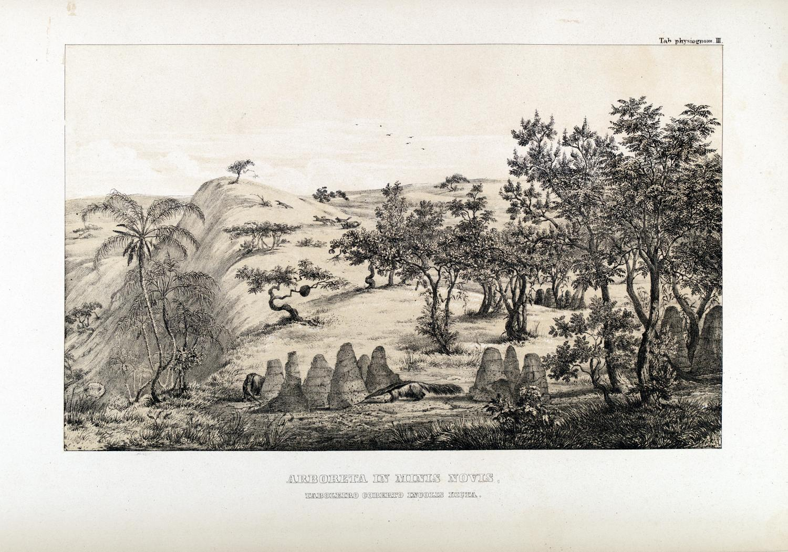
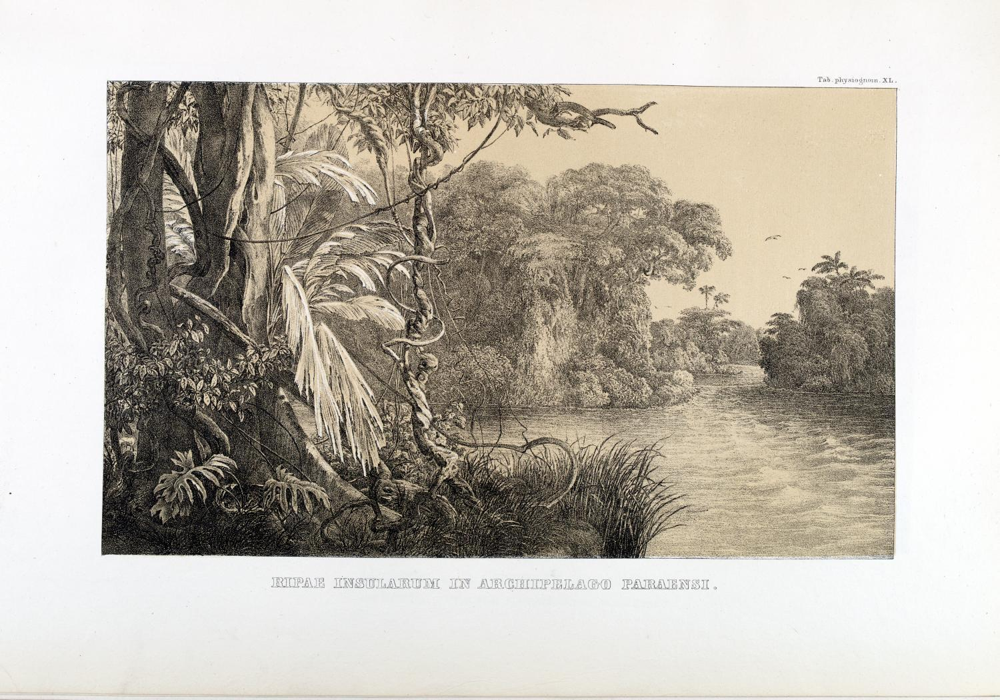

FLORA BRASILIENSIS
ENUMERATIO PLANTARUM
IN
BRASILIA
HACTENUS DETECTARUM
QUAS SUIS ALIORUMQUE BOTANICORUM STUDIIS DESCRIPTAS ET METHODO NATURALI
DIGESTAS PARTIM ICONE ILLUSTRATAS
Index
- VOLUMEN I.
- PARS I.
- TABULAE PHYSIOGNOMICAE.
- SILVA IN RIPA FLUVII AMAZONUM, CAA-YGAPO INCOLIS DICTA.
- SILVULAE IN PROVINCIA MINARUM, CAA-APOAM S. CAPÕES INCOLIS DICTAE.
- ARBORETA IN MINIS NOVIS, TABOLEIRO COBERTO INCOLIS DICTA.
- VALLIS VELLOZIIS ARBORESCENTIBUS CONSITA, IN MORRO DO GRAVIER PROV. MINARUM.
- CAMPI, QUI DICUNTUR GENERALES, PROPE MOGY DAS CRUZES, IN PROV. S. PAULI.
- SILVA PRIMITIVA IN SERRA DOS ORGÃOS, PROV. RIO DE JANEIRO.
- CAMPI GENERALES JUXTA SERRA DE MANTIQUEIRA, PROPE LORENA, PROV. S. PAULI.
- SILVA PRIMAEVA VIAM PUBLICAM OBUMBRANS, INTER JACAREHY ET ALDEA DA ESCADA, PROV. S. PAULI.
- ARBORES ANTE CHRISTUM NATUM ENATAE, IN SILVA JUXTA FLUVIUM AMAZONUM.
- SILVA AESTU APHYLLA, QUAM DICUNT CAA-TINGA, IN PROVINCIAE BAHIENSIS DESERTO AUSTRALI.
- INSULAE SABULOSAE IN FLUVIO AMAZONUM, PROVINCIAE PARAENSIS.
- SILVA MARITIMA ARBORUM VIVIPARARUM, PROPE UBATUVA, IN PROV. S. PAULI.
- PARASITI CADUCI GRANDIUM ARBORUM PERNICIES, IN PROVINCIA RIO DE JANEIRO.
- MONS QUI DICITUR MORRO FERMOZO IN CONFINIO PROV. RIO DE JANEIRO ET S. PAULI.
- MONS QUI DICITUR MORRO FERMOZO IN CONFINIO PROV. RIO DE JANEIRO ET S. PAULI.
- SILVA CAESA, CUM FICU GRANDAEVA, AD S. JOANNEM MARCUM, PROV. RIO DE JANEIRO.
- PROSPECTUS E CACUMINE MONTIS SERRA DE TAGOAHY IN ORIENTEM, PROV. RIO DE JANEIRO.
- RIPAE FLUVII ITAHYPE PROV. BAHIENSIS.
- PROSPECTUS E CACUMINE MONTIS CORCOVADO, PROPE SEBASTIANOPOLIN.
- PROSPECTUS E CACUMINE MONTIS CORCOVADO, PROPE SEBASTIANOPOLIN.
- CAMPI AESTATE SICCA IGNIBUS ADUSTI IN PROVINCIAE MINARUM PARTE OCCIDENTALI, SPECTACULUM NOCTURNUM.
- CATARACTA RIVI, QUI DICITUR RIBEIRÃO DO PALMITAL, PROPE SABARA IN PROV. MINARUM.
- CAMPI EXTENSI, DENSO VIRGULTO CONTECTI PROPE SERRA DE S. ANTONIO IN DESERTO PROV. MINARUM.
- SILVA IN MONTE CORCOVADO, PROPE SEBASTIANOPOLIN, PROV. RIO DE JANEIRO.
- RIPAE FLUVII JAPURA, IN PROV. RIO NEGRO, TEMPORE DECESSUS AQUARUM.
- VALLIS LARANJEIRAS PROPE SEBASTIANOPOLIN.
- SILVA IN MONTE CORCOVADO PROPE CAPUT AQUAEDUCTUS FONTIS CARYOCA.
- SILVA PRIMAEVA, RADICIBUS AC FUNIBUS OBSEPTA, PROPE FACATIBA. IN PROV. SEBASTIANOPOLITANA.
- PROSPECTUS IN SINUM SEBASTIANOPOLITANUM EX INSULA VIANA.
- SILVA PRIMAEVA IN MONTE SERRA D’ESTRELLA, PROPE PETROPOLIN.
- ARTOCARPUS INTEGRIFOLIA E CUJUS UMBRA SANCTI SEBASTIANI SINUM ET URBEM CONSPICIS.
- VALLIS LARANJEIRAS VERSUS CATETE PROPE SEBASTIANOPOLIN.
- PROSPECTUS E JUGO SERRA D’ESTRELLA IN SINUM SEBASTIANOPOLITANUM.
- SILVA PRIMAEVA PROPE PEDRA DA ONÇA, PRAEDIUM IN PROV. SEBASTIANOPOLITANA.
- PROPE JUNDICUARA PRAEDIUM IN DISTRICTU UBATUVA.
- PROPE JUNDICUARA PRAEDIUM IN DISTRICTU UBATUVA.
- SILVA PRIMAEVA INTER UBATUVA ET JUNDICUARA, IN CONFINIIS PROV. S. PAULI ET SEBASTIANOPOLITANAE.
- SILVA RORIDA IN JUGO SERRA D’ESTRELLA, PROV. SEBASTIANOPOLITANAE
- LUCUS ARAUCARIAE BRASILIANAE IN PROVINCIA MINARUM.
- RIPAE INSULARUM IN ARCHIPELAGO PARAENSI.
- PALMETUM MAURITIAE FLEXUOSAE IN INSULA PAUTINGA ARCHIPELAGI PARAENSIS
- PROSPECTUS EX HORTO SUBURBII MATA-CAVALLOS IN AQUAEDUCTUM SEBASTIANOPOLEOS.
- CAMPI SILVULIS VARIATI AD FLUV. RIO DAS VELHAS, PROV. MINARUM.
- CULTURA COFFEAE IN PRAEDIO INTER OPPIDUM MAGÉ ET MONTES SERRA DOS ORGÃOS.
- CULTURA AGAVAE AMERICANAE, IN CAMPIS MEXICANIS PROPE S. JUAN DE TEOTIIIUACAN.
- PROSPECTUS IN PROV. MINARUM MONTUOSAM REGIONEM, E SERRA DE OURO BRANCO CAURUM VERSUS.
- REGIO MONTOSA PROPE COCAËS, IN PROV. MINARUM.
- CACUMEN MONTIS ITACOLUMI, IN PROV. MINARUM.
- MONTES AURIFERI AD CATA-BRANCA, IN PROV. MINARUM.
- CACUMEN MONTIS PICO D’ITABIRA DO CAMPO, IN PROV. MINARUM.
- CAMPI VIRGULTIS DISTINCTI SUB RADICE JUGI SERRA DA LAPA, IN PROV. MINARUM.
- CAMPI CEREIS PALMIS ET ALIIS VIRGULTIS VARIATI, IN SUPERIORE JUGO SERRA DA LAPA, PROV. MINARUM.
- PALMETUM MAURITIAE VINIFERAE, JUXTA MONTES DICTOS OS PAREDÕES, IN VIA INTER URBES GOYAZ ET CUYABÁ.
- FONTES FLUVII PARAGUAY.
- CULTURA MUSAE PARADISIACAE PROPE URBEM RIO DE JANEIRO.
- RIPAE FLUVII PARAGUAY IN MATO GROSSO.
- FLUVII S. FRANCISCI CATARACTA, DICTA DE PAULO AFFONSO.
- TREMETAL VEL PRATUM FLUCTUANS, PROPE ALCANTARA IN PROV. MARAGNANENSI.
- SILVA MONTIUM SERRA DOS ORGÃOS DECLIVIA OBUMBRANS, IN PROV. RIO DE JANEIRO.
- TABULAE PHYSIOGNOMICAE.
- PARS I.
VOLUMEN I.
PARS I.
TABULAE PHYSIOGNOMICAE.
BRASILIAE REGIONES
ICONIBUS EXPRESSAS DESCRIPSIT DEQUE VEGETATIONE
ILLIUS TERRAE UBERIUS
exposuit
C. F. PH. DE MARTIUS, med. et phil. Dr., Professor,
regi bavariae a consiliis intimis.
Propositum nobis est Florae Brasiliensis divitias describentibus, non in mera ordinum generumque et specierum systematica adumbratione adquiescere, sed etiam lectori ostendere rationem, qua plantarum genera per diversas Brasiliae regiones diffusa sint atque variegata et explanare modum, quo soli tegumentum efficiant vivum ac spirans vitamque largiens pro locorum diversitate ubique diversam. Quod ut recte et facile peragamus, necessarium nobis visum est, praecipuas vegetationisty diversitates non verbis solum depingere, sed tabulis physiognomicis illustrare. Ita enim amici lectores, qui studio singulas plantas Brasilienses cognoscendi ducuntur, in medio quasi ipsius Florae theatro positi, amoena illa prodigae naturae viridaria, nobis ducibus, percurrere poterunt et animi oculis, non sine summa confidimus voluptate, ea quasi viva et animata percipere, quae adire et praesentes cognoscere ipsis fortuna invidit. Hoc igitur consilio diversarum Brasiliae regionum imagines proposuimus ita expressas, ut herbas et arbores conspicere possis, quae in quavis regione prae ceteris peculiares proveniunt, easque ita consociatas, ut regioni singularem quendain impertiant colorem illique solemnem, quem quidem in Brasiliae diversis regionibus esse diversissimum nemo est, qui ignoret. Has vero imagines, ut rite et perfecte intelligantur, sufficiet, pauca addere de uniuscujusque regionis indole et stirpium, quas alunt, nomina breviter adtingere.
I. SILVA IN RIPA FLUVII AMAZONUM, CAA-YGAPO INCOLIS DICTA.
Vegetationem in ingenti fluvii Amazonum regno praesertim quo perfluit Brasiliam, proprii aliquid habere, multisque rebus a vegetatione terrarum affinium differre, pluribus jam locis operum, de Brasilia a nobis scriptorum commemoravimus1. Cujus regionis longe maxima pars tecta est silva densa et alta, quae Indis tantummodo feris hominumque congressus et societatem fugientibus est domicilio. Coeli calor magnus est et aequabilis, qualis premit limitem aequinoctialem, et humor praepotens, qui plantis e pluvia frequenti nec non ex innumeris adducitur fontibus, quibus solum scatet constans saxo arenario, limi et margae stratis solemniter obtecto: id quod plantarum naturae summopere favet, ut vix uspiam orbis terrarum vegetationem invenias opulentiorem, splendidiorem, copia, magnitudine, varietate magis absolutam. Has plantas maxime propterea, quod tantopere iis favet Neptunus, appellavi plantas Najades, ut ab illis quae in aliis eminent Brasiliae partibus dignoscantur. Silva vero ipsa, quae est regni Amazonum fluminis, oppido inter se differt pro regionum situ: alia est proxima fluminis cursum, alia in ejus insulis submissis atque arenosis, alia quae longe distat ab amni in superioribus regni partibus.
Ea, quam hic proposuimus, tabula depingit silvam proxime flumen sitam, i. e. secundum ejus ripas procurrentem; exposita est illa fluminis inundationibus, quae infra locum, ubi conveniunt Amazonum fluvius et Rio Negro, celerrime adscendunt et altissime mensibus Martio et Aprili. Arbores, quae triginta pedes et altius inundantur, tum largissime promittunt folia floresque; atque his ipsis, quae quotannis ingruunt, altioribus aquis fit, ut ramos ibidem videas primarios supra aquarum fastigium e caudice enatos. Herbae vero et dumeta locorum demissorum, quae undis plane obruta computrescunt, ubi aqua decurrit, eo laetius redintegrantur. Haecce est quam tabula depingit regio prope fluminis litora et oppidum Santarem. Conspicitur prodiga in litore herbarum cannarumque vegetatio, simulque occurrunt densae series caudicum candidorum Aroidearum arborescentium, qui sunt ornati foliis magnis sagittatisque. E limo, ubi alia vacat vegetatione, ut parasita singularis, Helosis gujanensis, stirps aphylla carnosa, fungo simillima purpureo, emergit ex arborum radicibus. Arbores Ingae generis, teneris ornatae foliis et leguminibus magnis ac dependentibus insignes, atque alia Leguminosa parva multumque divisa fronde, Pithecollobium, nec non Triplaris americana, et quae latissime distributa crescit Cecropia peltata, cingentes litora amnis tranquillos sinus obumbrant, in quibus Nymphaearum diffusa sunt folia magna ac peltata. Palmarum graciles Astrocaryi Jauari et Euterpes oleraceae caudices vides aliarum arborum cacumina superantes. Theobroma Cacao ramis brevibus crassisque et in directum distensis modo in his, modo in caudice ipso profert fructus melonibus haud dissimiles. Prope ab illa adspicies Smilacis brachia longis complexibus, cujus radices ab incolis colliguntur pro Salsaparilha. Totius regionis flos magnificentissimus est Carolinea princeps, cui haud immerito hoc datum est nomen propter candidum splendorem petalorum, quae tomento fulvo obsessa pedis fere longitudinem assequuntur. Ficus doliariae ingentis magnitudinis coronant ripas inque hospitalibus ramis innumerae parasitarum turbae, Bromeliis, Pitcairniis, Anthuriis variis et Orchideis magnifica florum fabrica insignibus, praebent domicilia, dum Bauhiniae Oulimoutae aliarumque complurium funes modo in aërem tendentes modo deorsum radicantes miris variisque formis illas circum circa complectuntur.
II. SILVULAE IN PROVINCIA MINARUM, CAA-APOAM S. CAPÕES INCOLIS DICTAE.
Quam hac tabula depictam vides silvarum formam, ea tibi praebebit imaginem vegetationis, quae regnat ut in magna parte provinciarum S. Pauli, Minarum, Goyazanae, Bahiensis, ita hic illic in interioribus provinciarum maritimarum, quae a Rio de Janeiro, Espiritu Santo et Porto Seguro nomen habent. Tota ejus externa facies magno opere discrepat ab aliis silvae generibus, ob quam ipsam causam Tupinambazes id illi nomen imposuerunt, quo primaria ejus signa magis efferuntur; vocatur enim ab illis Indis Caa-apoam, i. e. silvula convexa sive rotunda, quo verbo corrupto Lusitani finxerunt Capão. Etenim cum silvulae illae saepe sint ambitu subrotundo perspicueque circumscripto atque arbores intus sitae iis, quae in margine cernuntur, altiores, adspicienti occurrit imago convexa. Inferiora praecipue et humida loca, valles, paludes ab iis occupantur neque propter liquidi ubertatem vel calida anni aetate frondes amittunt, sed totum per annum nitent venusto comarum splendore. Idcirco botanicus quoque non nisi raro intrat harum silvularum humidas gratasque umbras, quin aliquas et eas nobiles inveniat plantas florentes nec si non esset saepius timendum ne offenderes Pythonem aut Crocodilum scleropem, herbas in lucis illis colligere aliud quid posset nominari, nisi suavis quaedam exercitatio, minime labor molestus. Quam hicce vides, lector benevole, formam expressam, eam potissimum in australi parte provinciae Minarum, ad fluvios Servo et Sapucahy observavi. Offeruntur tibi graciles caudices Pruni sphaerocarpi prope Coccolobam crescentiaefoliam, densa fronde exstructam, quo modo in tabulae parte anteriori sinistrorsum sunt delineati, aut Palicurea tetraphylla, Ilex gongonha, quae in terra Minarum loco genuinae Ilicis paraguariensis pro Thea adhibetur, et Xylopia longiflora, cujus fructus acri-aromatici pariter ac Piper aethiopicum in Brasilianorum tabernis medicis consumuntur, quas arbores omnes dextrorsum conspicies in parte antica depictas. Reliqua vero arborum, quae hic frequentissime occurrunt, genera afferre omnia, propositi nostri limites multum superabit; qua de causa aliquot dumtaxat arborum genera, quae quasi in his regionibus dominantur, commemorabo, ut Rollinia, Guatteria, Xylopia, Sapiam, Peridium, Inga, Cupania, Nectandra, Schinus, Combretum, Leandra, Huberia, Miconia, Anthodon, Casearia, Myrcia, Eugenia, Tabernaemontana. Haec sufficiant. Unum restat quod adjiciam, hasce silvulas et venustate formae et generum specierumque quibus consistunt natura illius silvae generis propius accedere et adspectui et stirpium indoli, quae oritur e silva primitiva, postquam caesa suo quasi ipsius commissa est arbitrio, quam quidem silvam caeduam indigenae vocant Caa-apuera. Contra ab illa silva primitiva, quam Brasilienses Mato-Virgem, lingua Tupinaimba vero Caa-etê nuncupant, latius distant, neque vel vetustissimae unquam ad illius et altitudinem et magnificentiam assurgunt.
III. ARBORETA IN MINIS NOVIS, TABOLEIRO COBERTO INCOLIS DICTA.
Minarum terra, amoena illa regni Brasilici atque suavis provincia, haud minus insignis propitia mortalibus coeli temperie atque vegetabilium varia ubertate, quam auri copia et adamantum aliarumque, quibus solum scatet, gemmarum versicolorum multitudine, etiam propterea est collaudanda, quod maximam pulcherrimarum regionum nobis aperit varietatem. Neque enim describi stilo, nec colore depingi potest Europaeo firmamenti illius pellucida serenitas, montium illorum, quibus gelidi devolvuntur torrentes, audacia fastigia, convallium illarum vigor vividus atque hilaris, in quibus milia florent venustissimorum florum quos nulla unquam tetigit manus spectatoris, neque magis vetustissimarum silvarum profundae quasi atque horridae tenebrae, et nemorum (Caa-apoam) quae valles obtegunt viridaria pullulantia. Haecce est facies terrae praecipue australis et orientalis. Si longius descenderis occidentem versus in regnum fluvii S. Francisci aut ultra illud ad fines prov. Goyazauae, totius imperii umbilicum, penetrabis in campos quos dicunt desertos; pariterque sin appropinquaveris septentrionem versus Bahiae provinciae, animadvertes paulatim miram totius terrae vicissitudinem. Jam tibi evanuerunt valles illae demissae ac montes alti et praerupti; jam moraris in campis illis editis, quos Chapadas dicunt, qui modo areae instar plani sese extendunt in longinquum, modo oculos invertunt ad valles alveo similes nec admodum profundas. Jam non spectas silvas illas succidas lateque diffusas aut immensa illa arva (Campos geraës), quae veluti aequor foliorum haurire minantur viatorem, sed vegetationem tenuiorem ac rariorem, quae non omnes soli partes reddit animatas, verum modo longos terrae tractus, quae sicca est et argillacea aut fragmentis saxorum commixfa, modo nudas prae se fert rupes ac caementorum strata. Hanc tibi, lector amice, hacce proposuimus tabula regionem. Euronotum versus ab oppidulo Fanado, capite Minarum Novarum, quam plagam terminum (Termo) vocant, leniter assurgit terra clivosa ad jugum usque Serrae das Esmeraldas, cujus promontoria in hac parte fines faciunt ne dicam provinciae, sed regionis illius in qua exculti habitant homines; nam ab illis orientem versus vagantur Botocudos anthropophagi et alii minores hominum silvestrium greges. Quum una cum Spix amico meo frequentarem Quartel do Alto dos Boys, quod ibi est militum castrum, permigravimus regiones ei quam exprimit tabula simillimas. Solum subrubrum multisque quarzi fragmentis compositum crebra caret irrigatione et humo, quapropter minime fertile nec virgulta densa progignit neque prata, sed quae natura hicce largitur sunt humiles herbae sparsim loca soli foecunda occupantes, aut singularis quaedam silvarum forma, quae ab incolis nominatur Taboleiro coberto. Etenim sunt arbores non prope sed longis intervallis distantes ut saepe singularum discernere queas lineamenta. Habent illae arbores caudicem saepe in obliquum adscendentem aut hic illic reflexum ac ramos crassos, breves, itidem curvatos, qui fere in directum expansi spisso ac subereo amicti sunt cortice. Earum vita quum prorsus pendeat ab humore illo, qui magnam anni partem deficiens certis modo apparet temporibus, non omnes densa fronde ornati cernuntur rami, sed in extremis dumtaxat surculis eminent folia interitura rursus, ubi ramus coepit longius propagari. Quae folia cum plerumque firma sint compage, has plantas perspicuum est et externa forma longe discrepare et ubertate ab illa silvarum primae originis, quae assiduo adjutae liquore utique cum vividiores apparent et succidiores tum nunquam foliorum ornamento orbatae conspiciuntur. Ceteroquin grata hic botanico offertur arborum flores cognoscendi opportunitas, qui nusquam altius quam quos assequi possis dependeant. Haud raro caespitibus divaricatis plantarum parasiticarum, Loranthorum et Viscorum dico, sunt onerati aut magnis globis, nigri coloris, in quibus viator obstupefactus deprehendit innumerabilium formicarum domicilia. Varii suffrutices sarmentosi harum arborum ramos percurrentes propriam illis adjiciunt venustatem, quippe quae modo multis obtectae sint flosculis flavis rubrisve, ut varii suffrutices e Malpighiacearum ordine, modo ferant ingentes flores, ut, quae ibi saepe occurrunt, Aristolochiae varias species. Haec de regione illa in universum sint commemorata. In nostra vero tabula videbis sinistrorsum in parte anteriori catervam palmulae maximae, quae in arida illa apparet regione, Coci flexuosae. Assurgit ista in loco acclivi inter Paspalorum hirsutos caespites, quam prope parvus est Gomphiae frutex. Quae paulo retrorsum eminet arbor mutilata et nigro gravata formicarum nido, est Erythroxylon suberosum, cujus cortex crassa et rimosa ad lanam fusce tinguendam adhibetur ab incolis. Dextrorsum magis si te verteris, assurgit inter alta formiceta, quorum conditores acuta persequuntur lingua Myrmecophagae jubatae, bestiae adspectus sane valde singularis, quas Tamanduá Bandeira incolae vocant, Aspidosperma macrocarpum, e familia Apocynearum, cujus fructus aperti conchae possunt comparari. In ea luxuriatur Aristolochia gigantea, floribus ingentibus, pedem longis, fuscis notis adspersis. Inter illa fertur in altum Eupatorium quoddam magnis corymbis, post illa est Kielmeyera, Peridium que et Cnestis. In dextra parte antica diffundit Wittelsbachia insignis flores flavos, quam prope adest arbuscula torta ac tenera, foliis bipinnatim compositis glaucis: Stryphnodendron Barbatimao, cujus cortex cum validissimo scateat principio adstringente a terrae illius medicis crebro adhibetur. Duae anterioris partis arbores celsissimae sunt Salvertia convallariaeodora, insignis in familia Vochysiacearum, quas hae regiones creberrime offerunt adspectui, et Phaeocarpas campestris, una ex familia Sapindacearum. Canes campestres, quos incolae vocant Guará, hujus solitudinis indigenae et magnis coacervati turbis, ceteris quae hic dominantur bellum inferunt animalibus. Ita nonnullos eorum vides per montem vagantes et Myrmecophagas persequentes. Plura de hac regione invenies in Martii Itinere T. II. p. 485. 490.

IV. VALLIS VELLOZIIS ARBORESCENTIBUS CONSITA, IN MORRO DO GRAVIER PROV. MINARUM.
Qui proficiscens ab ora maritima mediam versus terram ad illam altiorum montium penetraverit regionem, quae propter nobilium metallorum ubertatem Minarum provincia est cognominata, inveniet plantarum regnum, quod ab illis, quae in orientali regione occurrunt, toto habitu differt atque indole. Densae illae atque obscurae altissimarum arborum silvae primariae recedunt in valles profundas, in jugis viatorem cingunt arva aprica, colles nudi, saxa abrupta, et quum ibi plantas magnitudine sublimes, caudicum ambitum, frondes spissas pullulantesque, singulares variorum funium complexus, quibus tota aliqua silva ad unam eandemque dense implicatam pergulam videtur conjuncta, quasi obstupefactus admiraretur, hic contra delectatione animum implent elegantia vegetabilium pro ratione multo minorum, florum color vividior ac splendidior, formarum singulares quaedam discrepantiae. Quo rarius ibi natura dispersit vegetabilia, eo meliorem viatori attento animo et laeto contemplandi illa praebuit opportunitatem. At hic nullam videre memini plantae cujusquam formam, quae majori me affecerit laetitia et admiratione, quam miros illos furcillatos caudices liliorum arborescentium, e genere Velloziarum, quibus ab incolis nomen inditum est Canella d’Ema. Multis illa editis fastigiis vero sunt ornamento, aliis cincta compluribus herbis et fruticibus tam suavi colore quam delicata et eleganti forma conspicuis. Saxum quarzosum flexibile, quod Itacolumitem solent nuncupare, praediligunt. Sic cum alibi tum in vallibus cernuntur auriferae Serrae de Ouro branco, quod amoenum jugum peregrinantes qui a meridie petunt caput Minarum, Cidade de Ouro preto (antea Villa Rica appellatum), in saltu Morro do Gravier superant, Multae aliae et venustae plantae cum illis liliis arborescentibus consociatae alliciunt ibi viatoris oculos. Cui vero amoenissimas illas regiones montanes non licet ipsi perlustrare, ei sufficiat haec imago nostra, qua haud paucae earum ante oculos ponuntur plantarum, quae regionis istius propriae sunt existimandae. Hic conspicies altos et singulares graminum caespites, ut Paspalum polyphyllum et erianthum, inter quos interpositae dispersim herbae et frutices floribus magnificis distincti, Eryngium enchophyllum, Lisianthus amplissimus, in saxi scamnis Gesnerae tuberosa et rupicola, tum Eriocaulon caudice duorum fere pedum et longis pedunculis donatum, magni frutices Lavoisierae imbricatae, cujus ramuli spisse coarctati, et porro e familia Melastomacearum Chaetogastra repanda et Rhynchanthera ample florentes, certant invicem colorum pulchritudine. Intercedit frutex quoque Physocalycis majoris et Cinchonae (Remijiae) Vellozii, cujus cortex nomine Quina do Campo notus medicamentum antipyreticum praebet non contemnendum. Celsae arbores plane absunt ab hac regione. Non nisi Zeyheria montana adspicitur fronde quinquefolia et flavorum florum amplis thyrsis exornata, prope Lycknophora villosa et Kielmeyera coriacea (Páo santo vel Páo de S. Jozé ab incolis nominata), cujus rami capsulis triangulis dependentibusque sunt onerati. Retrorsum ad sinistram partem si oculos verteris, Rhopalae ovalis adspicies gracilem arbusculam et quae una est ex maximis hujus terrae arboribus, Lüheam paniculatam (Azoite cavallo); cum in parte anteriori adspectum adstringat fronde magnifica Carolinea tomentosa; cujus arbusculae, quae insignis est humilis intortique caudicis ambitu, ramuli vario modo inflexi solibus offerunt magna et splendida folia septenata. Mirum vero quantum tenemur adspectu Velloziae aloaefoliae, caudicibus furcalis, qui arvorum combustione ima parte carbonescentes in extremis ramis proferunt fasciculum longorum foliorum ensiformium, inter quae magni caeruleique eminent flores. Paucae modo bestiae commorantur in amoeno hoc et suavisssimo plantarum horto. Interdum incides in avem illam admirabilem, quam indigenae vocant Seriema (Dicholophum cristatum); transvolant illae parvis societatibus conjunctae desertam regionem atque sectantes angues veneniferos, hominibus infestissimos, mortales inscios magno afficiunt beneficio.
V. CAMPI, QUI DICUNTUR GENERALES, PROPE MOGY DAS CRUZES, IN PROV. S. PAULI.
Cum in altis densisque primae originis nemoribus debeat naturae scrutator proxima quaeque perlustrare, quae adspectum ejus coercent ac circumscribunt, unde fit, ut tantummodo teneatur oculus singularum plantarum varietate atque singulis animus exhilaretur naturae operibus; contra ubi vagantur ejus oculi per camporum planitiem, singula illa magis magisque recedunt et consociatis innumeris herbis et parvis graminibus in magnum aliquod et universum, altera quasi existit natura et ea eximia: conspicitur ea quae omnibus spiritum impertiens unumquemque terrae tractum et quamlibet soli glebam propria quadam viva forma studeat exstruere ac singulari ornare vestitu. At homo in mari illo foliorum, quae mitibus terrae istius atque odoris leniter commoventur animis, pariter videtur subduci atque in caliginosis silvarum noctibus. Ejusmodi sunt provinciae S. Pauli longe patentia arva, quae ob hanc ipsam amplitudinem nominantur Campos geraës vel, quod larga in iis sunt et herbosa pecorum pascua, Campos de Vaccaria. Adspicis hic, lector humanissime, veram illius regionis imaginem, quam summa depinxit arte Thomas Enderus, nobis amicissimus, quum ille una cum nobis Sebastianopoli migraret ad urbem S. Pauli, caput provinciae S. Pauli denominatae. Delineata est illa prope Mogy das Cruzes, parvum vicum ad viam adsitum. Saxorum hujus regionis formatio est Granites foliaceus aut caementum arenarium, quod, illi impositum, multum continet ferri, et argillae stratis variatur. Latae planities molliter descendunt ad regnum Tieté fluvii, qui fusco colore languide arva permigrat. In camporum locis demissis, ubi non rarus est humor atque paludes, aut densis conteguntur graminibus aut parvis illis ac circumscriptis silvulis, quas jam antea Caa-apoam appellari commemoravimus. In collibus siccioribus passim occurrunt tenues Araucariae brasilianae silvulae, quae ab incolis Pinheiro nominata fere sola est in Brasilia ex familia Coniferarum. Pulcherrima haec et utilissima arbor forma nec cum abiete nostra conferri potest neque cum pino Italorum, quamquam hoc praestabit, quatenus tibi finxeris primarios ramos, qui in ilia fastigiatim sursum condensantur, in hac longius inter sese distantes alium supra alium e caudice percurrente extendi. Ramuli infra carent foliis nec nisi in apice ferunt illa, quae in fasciculis coarctata circum circa eminent. In parte antica videbis sinistrorsum parvam arbusculam Gomphiae multiflorae, quae ut foliis magnis splendidisque sic florum flavis paniculis toti imagini est ornamento. Haud procul stat suffrutex Diplusodon ovatus pulchris roseisque floribus. Ad dextram magis conversus adspicies Drimyn granatensem, bellam arbusculam, ab indigenis vocatam Casca d’Anta, cujus cortex loco genuini corticis Winterani adhibetur, Erythroxylon campestre, inter quae subrepunt serta Ipomoeae Krustensternii, quae omnium, quas in Brasilia cognovi hujus generis species, maximis splendidi candoris floribus distincta est. Spissa virgulta specierum Baccharidum foliis minutis et ramulis resinosis atque sarmentacei caules Capparidis laetevirentis inter gramina singulatim luxuriantur. Proxime viam enascitur Bromelia Ananas densis ordinibus, cujus laete hic vigentis fructus suavissimi viatori praebent dulce levamen, sed caute sunt depromendi, cum non modo horrida et acutis aculeis exstructa folia bene eos tueantur, verum etiam parvo serpenti venenifero, quem Schiraraca-mirim incolae dicunt (Bothropsi leucuro) ea sint haud raro latebris. Ceterum id quoque videtur esse monendum, arva illa quae fere omnia ita sunt comparata uti quod hacce depinximus tabula, non tam pratis nostris posse comparari arte quasi formatis, quam potius pascuis larga obsitis herbarum copia et graminum. Etenim ibi dumtaxat, ubi inprimis iis favet et humor et calor, effingunt peristroma quoddam herbarum dense contextum atque aequabiliter diffusum, quale fere in pratis nostris conspicimus certo demessis temporum intervallo et arte plerumque excultis, quum contra Campos generales consistant pluribus in locis ex singulis graminum caespitibus, inter quae commixta est haud exigua aliarum herbarum multitudo, quae aut pari altitudine aut altiores interdum ad tresve quinqueve pedes assurgunt; quae plantae saepe pulchris splendidi coloris floribus insignes atque magnitudinis non mediocris, simplici graminum incremento singulare quoddam adjungunt ornamentum. Gramina vero ipsa tantum non omnia firma sunt compage, paulo iis quae in nostris occurrunt pratis sicciores, colore glauco et saepe valde hirsuta, qua re probe perspecta appellat Brasilianus haecce arva Campos-agrestes, dignoscens ea ab humidioribus illis pratisque nostris similioribus, quae vocat Campos-mimosos. Illa arva inprimis occupant provincias Minarum, Goyazanam, S. Pauli, haec vero minori ambitu septentrionales maxime provincias, uti Piauhyanam.
VI. SILVA PRIMITIVA IN SERRA DOS ORGÃOS, PROV. RIO DE JANEIRO.
Qui primus Europaeorum animos advertit ad florae Brasilianae pulchritudinem et largam ubertatem, erat Georgius de Langsdorff. Ejus praeclaras descriptiones de vegetatione Insulae St. Catharinae, quam cognoverat cum Krusensternio viro nobilissimo orbem nostrum circumnavigante, quum ineunte perlegerem aetate juvenili, mirifice sum captus descriptione copiae ac varietatis pulchrae illius florae, quam summa allevat coeli serenitas et elementorum harmonia fere nunquam dissoluta. Vehementer pectus commovebatur magnificentia et venustate vegetationis illius Brasilianae, nec vero divinabam, fore ut decem annis post ipse migrarem per felices istas regiones et duce eodem viro introspicerem illius terrae praestantem naturam. Atqui ita mihi favit fortuna, ut mensium Julii et Augusti anni 1817 maximam partem commorarer cum illo amico et ab praedio ejus, Mandiocca, quod sub monte dos Orgãos situm quietem praebet peregrinantibus, qui illum in ea parte, quae vocatur Serra d’Estrella, in via inter terram Minarum et provinciam Sebastianopolitanam transgrediuntur, silvas mirificae illius regionis possem perlustrare. Langsdorffius ipse fuit testis, quo stupore affecti sunt advenae peregrini, praeter me Spixius, Mikanius et Thomas Enderus pictor, conspicientes superbiam illius naturae, uti ipse scribit in epistola quadam, quam tum in lucem edidit cl. de Eschwege, vir mihi conjunctissimus (Journal von Brasilien, Weimar 1818. fasc. II. p. 165. sqq.).
In Brasilia quamvis multas et varias viderim silvas
primitivas, tamen non eo infitias, hasce silvas mihi
non alibi pulchriores apparuisse et amoeniores, quam
circa urbem Rio de Janeiro et in locis declivibus
montium, qui nomine Serra do Mar percurrunt magnam
partem provinciae Sebastianopolitanae. Eae mihi non
solum propterea prae aliis placuere et sempiternam in
animo reliquere memoriam, quod primae essent, quae
oculis meis oblatae sunt stupefactis sed vere eo, quod
praestant pulchritudine et suavitate. Etenim licet dici
ingentem terrae vim procreandi subjectam hic esse imperio
pulchritudinis, omnia et singula perfusa esse harmoniae
dulci flamine et vegetationem non solum ubertate
extructam et majestate, verum etiam grate compositam
et ordinatam. Unde fit, ut adspectus silvae
primitivae in montium illorum flexibus, qui propter pectines
pyropoecili granitis columnarum modo discretos
et in arduum emicantes solent nominari Serra dos Orgãos,
non offerat rudem perturbatamque ubertatem ac
fertilitatem terrae non cessantis parere, uti ait Plinius,
ubi unumquodque tamquam tempestate et certamine quodam
progenitum floreat et ferat fructus, ut modo ab
altero validiore opprimatur; — potius hic non possumus
non sentire,
singulorum vitae et mortis modum distributum esse lege quadam,
quae spectantis
animum benigno quodam modo afficiat, sedet, exhilaret.
Vita tam sapienter veluti manu artificis tenera videtur
distributa, ut mortem occultet. Quod quidem naturae
institutum non potest non respondere sensui humano,
quippe qui ita sit comparatus, ut adspecta vitae
per omne diffusae gaudio impleatur et majestate mundi
graviter commotus laetetur, quum interitu partium singularum
moerore afficiatur et vehementi tristitia.
Si sepulchretum ingressus sine ordine videbis tumulos effusos, non floribus diligenter obsitos aut caespite pio amictos, sed glebae, saxa, putrida ac male occulta mortuorum ossa mixtim offeruntur oculo, horror te perfundet atque fastidium. Longe vero alia eris animi conditione, ubi mortis imagines lenitae sunt imaginibus vitae, quae decore ac pietate viventium illis sunt inspersae. Idem obtinet in silva. Nonne est eadem sepulchretum, ubi vita singularis, quae aliquantum viguit, recipitur communi mortis amplexu? Praeterea non ignoramus, prioris generationis interitum et ejus transitum in humum praecipue parare locum recentiori rerum ordini; qui quo celerius profertur quoque prius alteri valido incremento adnectitur et fit assimilis, eo magis extinguetur e tota pictura imago mortis interitusque singulorum, quae hominis sensum coarctat quodam modo atque contristat. Hic probata invenimus Senecae (de benefic. V, 8.) verba: Rerum natura nihil dicitur perdere, quia quidquid illi avellitur, ad illam redit: nec perire quidquam potest, quod quo excidat non habet, sed eodem revolvitur, unde discedit Similiter eximius vates, Lucretius, ait:
Huc accedit, utei quidque in sua corpora rursum
Dissolvat natura neque ad nihilum interimat res. —
Haud igitur penitus pereunt quaequomque videntur:
Quando alid ex alio reficit natura, nec ullam
Rem gigni patitur, nisi morte adjuta aliena.
— De rerum nat. I. 216. sq. et porro 263. sqq.
Sic igitur accuratius me dixisse putaverim, quid sit, quod adeo commoveamur venustate illa et harmonia, qua silvae primitivae in provincia Rio de Janeiro sunt insignes. Est illud aequa vitae distributio, et rhythmus quidam, quo durant singula, quum ea sic sint disposita, ut et quae interitu evadunt, mox resarciant lacunas, et ipsa non eam assequantur faciem vetustatis, quae nobis praeberet modum ac rationem, unde multas appareret periisse generationes, quarum essent superstites.
Rarissime tantum cernuntur in hisce silvis arbores, quae crassitudine ingenti aut altitudine solito majore prae se ferant, se vicinis multo esse natu majores. Quas in aliis Brasiliae partibus haud raro vidi arbores mille annorum, eae hic perpaucae inveniuntur. Pro universo plurimarum arborum adspectu his silvis aetas videtur adtribuenda annorum quadringentorum vel quingentorum aut potius hic tibi nou vetustas silvae, sed ejus juventus obversatur. Hic vides plantas dense congestas forma diversissima atque actate; arbores sunt obtectae multis parasitis ex ordinibus Aroidearum, Orchidearum, Bromeliacearum. Ipsae diversissimis adscribendae sunt ordinibus; saepissime vero conspicies inter vetustos caudices, Leguminosas, Lecythideas, Myrtaceas, Melastomaceas, Laurineas, Sapoteas, Myrsineas, Rutaceas, Rubiaceas. Humi ubicunque germinant folia magna et succosa, flores grandes et magnifici e familiis Scitaminearum, Amaryllidearum, Begoniacearum, Gesneracearum. Silvae inferioris virgulta ramis dense sparsis efficiunt Piperaceae variae, Schnellae duae species, Triptolemea montana, Machaerium secundiflorum et villosum, Tetramerium, Solena, Psychotria, Croton, Aegiphila, Lantana, Vanillosma, Pilocarpus, Sebastiania, Gymnanthes, Citrosma, Trigonia, Calypso, Anthodon et variae Melastomaceae, et vagis amplexibus Davilarum, Clematidis, Anabaenae, Triopteridum, Banisteriarum, Bignoniarum contexuntur, quum alia sarmenta, maxime ex ordine Asclepiadearum, foliis floribusque carentia, funium instar crassorum a caudicibus arborum celsarum aut stricta aut contorta devolvantur et denique ipsa radicantia texturam effingant impenetrabilem.
Ubique viatori occurrit vita laete pullulans. Folia splendent copia succosa, magnitudine grandi, variis formis. Flores et fructus figura, odore, colore, magnitudine ita discedunt, ut botanicus quo primum advertat animum nesciat. Hic detinetur floribus magnificis colore igneo Stifftiae chrysanthae, cujus anthodia pugillaria uti lumen remotum splendent per silvae umbras virides; istic ad rivum capitur mira structura et coloris variatione Heliconiarum, quarum spathae colorum splendore certant cum pennis psittacorum aut delectatur fulgore holoserico foliorum et grata purpura, colore flavo hyacinthinove florum Phrynii zebrini, violacei flavescentis, aliorumque hujus generis.
Hic retinet virgultum Spixiae Leandri (Peridii nomine quoque descriptae, stirpis ex ordine Euphorbiacearum), involucro mire globoso hinc rimoso ornatae, istic Psychotria calyce magno, flaventis auri, aut Coccacypselum pulchellum baccis splendide caeruleis; aut Augustae attenuatae frutices corollarum rubore splendentes, frutices densi Vanillosmatum, quae de ramis longe porrectis suavissimum effundunt odorem, aut arbor Huberiae jucundae, petalis tenerrimis albis et staminibus aureis ornata, aut Ficus, in cujus umbra densissima multitudo Orchidearum variarum (Catasetum floribundum, semiapertum, cristatum, Oncidium flexuosum, Maxillarium Harrisoniae, Octomeriam serratifoliam, Epidendrum ellipticum, Cattleyam Forbesii et intermediam, Brassavolam tuberculatam et Stanhopeas nomino, omnes mirae structurae et coloris) parasitice consedit. In solo deprehendit botanicus corollas decussas Lecythidos vel Eschweilerae et quum singularem hujus floris structuram admiratus altam respiciat arborem, de qua sit fortasse oriundus, animadvertit, vix fieri posse, ut per dense implicatos flexus Banisteriarum, Bignoniarum et Serianarum lentarum, Feuilleae cordifoliae et funium firmorum frondibus carentium, qui rudentum modo circa malum tenduntur, penetret ad caudicem illius floris genitorem, qui radicibus multum solo eminentibus atque trunco plus centum pedes assurgente et magnam partem simplice nec non nisi in summo fastigio coma fastigiato-corymbosa coronato testatur quatuor quinqueve saeculorum aetatem.
Frustra Europaeus circumspicit in hoc labyrintho viridi notas plantarum formas, in quibus oculus quodam modo queat acquiescere. Omnia ei apparent nova et ipsa Nopalearum forma, quae curiositate in patria jam sunt factae indigenae, hic discedit dimensionum ingenti magnitudine ab omnibus, quae antea in Europa conspexerat. In truncis arborum senescentibus ac semiputridis aut in eminente quodam pyropoecili granitis stipite invenit Cactum phyllanthum vel alatum, qui ingenti ambitu pedes quindecim complectitur nec minus frondibus copiosis quam florum purpura flagrante aut candido splendore stuporem excitat.
Ecce, quod iterum testatur silvarum istarum vim
vegetationis non defessam, grandissima Anthurii folia,
quae tanta quantum scutum Achillis e vetustissima illa
Fico dependent. Non nisi ab ingentibus caespitibus
Bromeliae Karatas, Pinguin, Acanga rel. superantur,
qui fortasse ex quinquaginta annis in vetusto caudice
Crataevae Tapiae aut Moldenhawerae, Hymenaeae aut
Fici firmiter sese insuxerunt et parasiti ipsi parvis rursum
Jungermanniis utpote parasitis locum praebuere in
foliis firmis. Hae Bromeliae parasiticae non eos boni
saporis praebent fructus, quos Ananas humi crescens,
sed foliis praelongis offerunt materiam filo firme ducendo
aptissimam et in multis silvis fontium expertibus aestimantur
a viatore propter aquam, quam in foliorum complicatorum
parte infima asservant, quaeque etsi saepe
insectis et ranis foedata sitientis viatoris potest reficere
vires. In intervallis radicum horum epiphytorum multi
minores consederunt parasiti. Hic conspicies multas
species Polypodiorum e. g. vacciniifolium, sepultum,
tectum, Phyllitidem, Acrostichum serratifolium, multa
Asplenia, Hymenophylla et Trichomanes interque ea
Vohiriam aphyllam, stirpem omnino flavam ex ordine
Gentianearum, quae non petit patentia Alpium arva, sed
vetustorum truncorum occultos putridosque recessus.
Sic igitur vere hic cernitur natura ea, quae omnia implet;
quocunque enim vertis oculos, vitam invenies vitalem
et spiritum cuncta impellentem. In umbra virgultorum
luxuriant Hypoxidis bella species floribus flavescentibus
et passim inter saxa species Amaryllidos magnificae
(A. psittacina, aulica, calyptrata, Reginae),
inter quas parvae Cyperaceae, uti Mariscus umbellatus,
Dichromena, Cyperi complures, caespites Scleriarum foliis
margine acutissimo armatis. Ibi Graminearum variae
eminent species, uti Pharus latis insignis frondibus et
Panica longe ramosa, uti P. frondescens, divaricatum;
aliis locis vepres immiscentur late patentes Marantarum
lentarum. In madidarum rupium frigidiuscula umbra
Filicum vides diversissima genera, amplis caespitibus
luxuriantia: Nephrodia, Scolopendria, Marattias, Danaeas,
Lomarias, alia multa ut taceam. Locis autem
siccioribus Aneimiae, Cheilanthes, Lindsaeae variae
propullulant, ita quidem ut facile dixerim, me Filicum
genera nusquam alibi vidisse frequentiora, quam in
silvis illius regionis primitivis. Tum inveniuntur silvae
inferiori immixtae Acanthaceae pulchrae, florum magnitudine
et variis colorum picturis, splendentes atque
in locis humidis Siphocampyli varii, quorum corollae
psittacorum diversissimos colores resplendent. Locis
saxosis et umbrosis apparent variae Begoniae quam
plurimae acido oxalico pollentes, propeque adsunt
Dorsteniae, inter quas subgenus Sychynium receptaculis
mirum in modum pinnatifidis excellit Quodsi
vultum ab humo adtollis ad virgulta silvae inferioris,
tum ad arbores humiliores ac denique ad celsissimas
vestustissimasque, quae silvae dominantur veluti reges,
intelliges in hoc horto magnifice extructo plantarum
diversissimos gradus, alium alio altiorem et ejus superstitem,
esse collocatos nec unquam relictam lacunam,
ex qua liceat affirmare,
vitae actionem nulla mora progredientem hic vel aliquantulum interrumpt.
Qua in re ratio est habenda uti singularis soli conditionis et coeli, ita ipsius vegetationis. Etenim illud animadvertendum est constare per omnem cursum Serrae do Mar, qui montium tractus maxime continet Pyropoecilos Granitem, schistosum, Psaronium Syenitem, saepissime argilla subrubra, gravi, densa, cui est vis propria multum sugendi fluidi et, ubi magno calori sine umbra est exposita, obdurescendi. Ex qua causa eas regiones, quae diutius soli ipsi sunt expositae, plerumque videmus amittere vim alendi et multos per annos nihil nisi filices, inprimis Mertensias ut glaucescentem, pubescentem, flexuosam rel. et Pteridem caudatam, quae ibi est pro nostra Pteride aquilina, porro Cheilanthem repentem, rigescentem et spectabilem aut gramina quaedam, uti praecipue Tristegiden glutinosam, Capim mellado, qui dicitur, posse progignere. Ubi vero solum argillaceum densa obumbratur silva, ibi non potest exsiccari eoque magis liquido impletur et manet foecundum, quo tutior silvae remanet fons nutrimenti cum propter oceani propinquitatem, tum quia alta arduave montium fastigia ex aëre detrahunt perennem liquorem.
Una restat hujus silvae proprietas, ad quam necesse
est animadvertamus: ad id dico, quod ilia, ubi
hominum manu caesa est et solum sibi ipsi commissum,
non illico eadem regeneratur silva altior, sed vegetatio
singulari formarum successione restituitur.
Celsae illae et grandaevae arbores, quas nominaveris
quodam modo mediam aciem vel principes in disponenda
silva tropica, nequaquam continuo cernuntur,
ubi solum silvae primitivae securi igneque extirpatae
semina recipit ac denuo virescit. Potius aliae multae,
humiles et cito crescentes antecedunt arbores fruticesque,
uti species quaedam Aegiphilae, Lantanae, Celtis,
Cordiae, Gerascanthi, Crotonis, Sebastianae,
Urticae, Allertiniae, Conyzae, Vernoniae, Stigmatophylli,
Banisteriae, Oreodaphnes, Nectandrae,
Crytocarya laevis, Acnistus cauliflorus, Solana et
Physalides complures, Schinus terebinthifolia et rhoifolia,
Gouania cordifolia, Xanthoxylum Langsdorffii,
Sloanea ulmifolia, Schmidelia edulis rel.
Demum postquam hae plantae fere viginti annos vel
triginta tamquam praesidia locum occuparunt, propriae
apparent silvae altioris et praecipuae formae, quandoquidem
est vero simile earuin semina, quae antea ex
affinitate vento vel avibus allata erant, humum invenisse
parum tutam itaque non provenisse, aut tunc demum
enasci solere paulatim, quum jam umbra obteguntur
et ea adest soli conditio, quae ut prospere procedant
est necessaria. Nescio an quis incidat in suspicionem,
humam quasi quiescere per illam temporis intercapedinem
et assequi maturitatem ad proferendam recentem
silvam altiorem idoneam. Quarum arborum fruticumque
quum multas inveniamus prope ad domicilia hominum,
ubi solum stercore humano bestiarumque et quisquiliis
plus salium aminoniacalium recepit, vero est simile,
hasce plantas magis indigere nutrimentis azoto refertis,
quam arbores silvarum primariarum. Haec silva caedua,
quae excisa et usta silva altiore (Caa-eté), vel, uti
solet nominari, silva virginali (Mato Virgem) oritur,
vocatur in Rio de Janeiro et plurimis Brasiliae provinciis
Capoeira, quae vox mihi videtur corrupta e vocabulis
Tupinambarum linguae Caa-apoera, i. e. silva
caesa. Haec silva caedua, quae haud raro ad consitionem
Manihot utilissimae et Aypi, Zeae Maidis, Coffeae
arabicae, Gossypii vitifolii etc. adhibetur, singulari
sua ratione vix centum annos videtur permanere.
Nam frutices illi atque arbores, e quibus primo fere
solis consistebat, paulatim emoriuntur, non umquam redeuntes
et singula verae silvae altioris membra sensim
eorum loca obsident; ex qua ratione, quae plus minusve
in omnibus obtinet Brasiliae silvis primitivis, sponte
elucebit, quid sit, quod silva primitiva
eo pauciores species arborum et praecipue eo minus virgultorum
contineat, quo magis est aetate provecta et denique,
qui arbores quaedam, quas, ut aliae diutius permansurae
apparerent et procederent, antea adfuisse oportet,
nusquam reperiantur. Deinde id potest ex ista ratione
colligi, a vera silva primitiva omni memoria veteriore
usque ad progeniem ejus, quae Capoeira vocatur,
plures intercedere ordines, qui modo huic, modo illi
formae sese appropinquant.
Quodsi legitimum harum successionum ordinem
contemplamur, mea quidem sententia laeti aliquid in
eo inest et quod animum efferat atque exhilaret. Etenim
docemur, hic magnam plantarum diversarum copiam
pro suo quamque naturali modo et incipere vitam
et finire, verum cunctas has legitimas explicationes
esse connexas et regi a majori quadam lege,
quae lex scit, quid sit praesens, praeteritum, futurum
nec coecam sequitur naturae necessitatem, sed
respicit singulares, quae vegetationem omnino attingunt,
conditiones, aetatum siccitatem et humorem, citiusne an
tardius plantae radices capiant et in lignum abeant,
num prius an sero fiant maturae et ipsae et fructus atque
alias hujusmodi rationes. Quid est hoc aliud, atque
proprius vegetationis ipsius genius — animus, qui a conditore
mundorum provocatus est, ut terrestris vitae motus
adhibeat ad plantarum prosperitatem et utrumque vegetationem
ac vitam planetae sibi invicem accommodet. Jure
hic afferre liceat Senecae verba (Nat. Quaest. VI. 16):
„Non posset autem tam multa tantaque et se ipsa majora
terra nutrire, nisi plena esset animae, quam per
diem et noctem ab omnibus partibus suis fundit.“ Minime
quidem me fugit, esse permultos, qui ejusmodi mutationes
vel actiones in magna naturae scena, licet cernantur
legibus admodum implicatis, prorsus ita soleant
contemplari, uti horologii motus, in quo omnes rotae
unam eandemque sequuntur legem physicam atque omnes
motus una ratione mentique humanae percipienda
possunt comprehendi. Verum mihi quidem rhythmici
illi motus ac mutationes, quae etiam in variis vegetationis
formis inveniuntur, e multo subtilioribus legibus
neque iis mechanicis videntur dependere. Sunt ista
animantia, quae hic systemate belle ordinato una et
eadem laborant ratione atque quasi concurrunt. Omnia
hic fiunt inter amplos illos fines, qui in omnibus vitae
organicae actionibus cernuntur quique perturbationes
quasdam et recessiones a legitimo cursu singulorum
concedunt atque, quae illinc oriuntur mutationes, superant,
componunt, toti adaptant. Hic non vituperaverim,
si quis nos releget ad ideam illam Platonicam (in Timaeo),
qua demiurgus certis organicis actionibus in
cursu mundi proprios constituit duces et legatos,
qui singulorum actiones respiciunt, ordinant, et in
orbem illum concordiae ab ortu individui usque ad
acmen et inde ad finem ejus consociant. Hunc vero
rerum legitimum cursum non possumus non statuere,
nisi forte fatemur, id quod ab omni abhorret sana philosophia,
creatum majoribus quam creatorem extructura
esse virtutibus.
Sed redibo jam ad propositum, postquam longius sum digressus nec spero mihi defuturam esse bonam benigni lectoris indulgentiam, si optavero, ut ipse, qui mecum tam saepe singulas plantas contemplatur, has quoque cognoscat sententias, quae mihi de communi aliqua naturae subortae sunt conditione.
Ad singularem igitur tabulae VI. explicationem dicendum est, exprimi ea silvam primitivam prope praedium illud Mandiocca, in australi flexu Serra dos Orgãos, qualem comite Thoma Endero mihi amicissimo conspexi. Qui praeclarus regionum pictor multas ibi, quas hic dedimus, arbores, qua est artis sollertia, adumbravit ac mihi ut picturas illas augerem benigne concessit.
Est autem haec silva primitiva non ita vetusta nec major fortasse trecentis quadringentisve annis, quum multae praeterea species plantarum silvae caeduae (Capoera) hic inter arbores majores natu consederint. Tota imago arbore, quae rectum et non divisum caudicem ad septuaginta pedes vel octoginta adtollit, in duas quasi partes dissecatur. Est illa Eschweilera angustifolia, quae in illis silvis non raro cernitur. Circumdatur funibus, qui arcte eam complectuntur aut variis flexibus in ea descendunt. Nolim affirmare, quorum sint priores generum, sed Apocyneas esse et Asclepiadeas est vero simile. Funes vulnerati effundunt humorem album aut lutulentum. Ceterae Lianae magnis, splendide virentibus foliis insignes pertinent ad varias species Banisteriae, Smilacis, Serjaniae et Bignoniae, quae lascive sese complexae arborem laqueis non extricandis constringunt. Paulo altius distendit caespes Anthurii glauci folia permagna, eque fastigio pendet Bromeliacea ingenti ambitu, cujus nomen, etsi picturae singularem quandam impertit praestantiam, nequeo indicare.
Quodsi respicimus eas plantas, quae huic arbori sinistrorsum adstant, videbis in parte postica in angulo arborem gracilem Canella preta (Nectandram mollem), cujus ligna saepe ad cistas saccharo implendas adhibentur. Ante illam conspicis arbusculam gracilem frondibus angustis et ramulis fastigiatis, est Xylopia sericea, cujus fructus aromate pleni pro Pimento da terra consumuntur. Ad dextram magis versa est Acacia quaedam, cujus cortex magnam partem cinctus est Clusia parasitica. Quarta arbor celsa est Couratari legalis, optima ad construendas aedes materie. Haec arbor, cujus soror amplior spectanda in altera est picturae parte, prae se fert caudicem septuaginta vel octoginta pedes non divisum et tum demum diffunditur in levem semiglobosam coronam. Efficit cunctanter firmissimum ae lentum lignum ac, quum tarde accrescat et senescat, multis obtecta est funibus. Ante Acaciam vides humiliorem arborem densa coma et cortice claro, satis levi extructam: est Ficus americana, de cujus ramis flexus descendunt Banisteriae. Ante eam apparent ossa arboris ingentis dudum collapsae, quae grandes caespites Anthurii et Cacti phyllanthi amiciunt juvenili ornamento. Prope Psychotria cuspidata in largis ramusculis distendit magna folia. In parte antica conspiciuntur ampla folia Phrynii zebrini et Heliconia quaedam, quae e humo tenui ac lutosa inter saxa fonte irrigata emergunt. Anthurii umbellati magnus caespes delapsum caudicem subputridum tenet. Nec non magnus Agaricus, e Lepiotarum tribu, hic cernitur gregatim, uti in humidis nostris silvis. Arbor venusta cortice claro et fronde pinnata dextrorsum ab Eschweilera angustifolia est Inga, quam nominant Brasiliani Ingazeiro bravo, quippe cujus fructus non uti Ingae edulis comedantur. Post illam est Leandra scabra, quam arbuscula juvenilis Eriodendri lejantheri superat, juxta Palicurea et pulchra planta Pacova Sororoca (Renealmiae nutantis). Tum magis ad dextram versus conspicis bellam palmam silvestrem Geonomam Pohlianam. Dextrorsum in parte antica ascendit Ficus longifolia frondium amplitudine insignis, quae diversissimos fert parasitos, uti Caladium auritum, Anthurium glaucum, umbellatum longifolium, modo in caudice modo in radicibus. Idem parasiti et Billbergiae variae (zebrina, pyramidalis, iridifolia, cruenta) sedent in truncis viciniae jam putrescentibus Etiam adest Cecropia peltata, quae arbor uti excellit candore corticis betulaceo et ramis leviter flexis lateque diffusis, ita foliis magnis supra laete viridibus infra candide tomentosis. Late illa patet per omnes Brasiliae partes atque invenitur, ubicunque laeta silvae vegetatio luxuriat, quum prorsus desideretur in regionibus superioribus, montanis, campestribus. Haec fere sufficiant ad describendas eas plantas, quae maxime hujus regionis, quam lectori tabula VI. proposuimus, efficiunt proprietatem, Utinam tu nos eadem cum voluptate per densa lascivi hujus viridarii virgulta cogitatione sis consecutus, qua olim praesentes per illa subrepimus. Tibi hoc certe erit commodo, quod neque coeli illius ardore nec frequentium culicum vexaris stimulis, neque aculeorum acie aut Urticarum Loasarumque igni vulneraris et liberatus es timore ne anguium venenato morsu subito extinguaris, quas res vere atrocissimas nemo nisi naturae amantissimus poterit flocci habere.
VII. CAMPI GENERALES JUXTA SERRA DE MANTIQUEIRA, PROPE LORENA, PROV. S. PAULI.
Si jure affirmamus, esse Brasiliam unam ex pulcherrimis orbis nostri regionibus, simul est dicendum, esse propterea, quod istic natura diversissimos et quasi oppositos pulchritudinis modos nostro offerat adspectui. Nam vel maxima rerum copia, variegata vegetationis ubertas, summus splendor coeli quaque aetate hominum, fautoris, perfectissima venustas, quae cernitur in amoenis terrae lineamentis, in montium fastigiorumque forma, in distributione aquarum et fluminum, non possent efficere, ut illam terram pulcherrimam, vel elysium humanum appellemus, si ubique pari modo essent disposita ac quasi uno tenore distensa, contra vere est, quod contendamus, haec omnia in Brasilia non solum obtinere, sed venusta vicissitudine esse quasi ordinata atque dispertita. Illud vero non alibi vehementius atque ut ita dicam potentius potest persentiri, quam si viator e nocte silvarum primitivarum, quae obtegunt montium Serra do Mar tractum longe patentem, egreditur in latam vallem inferioris regni fluvii Paraiba in provincia S. Pauli. Quae loca quum in itinere nostro attingeremus, videbamur recens esse nati, ex angusta silvarum umbra prospicientes in apertae vallis magnificentiam, quae a sole clarissimo illustrata vegetationem prorsus novam stupori nostro ac cupiditati obtulit. Paraiba enim fluvius maximam viae suae partem septentrionem versus transit arva aperta, qualia sunt, quae jam in tab. IV. depicta explicavimus. Vallis lata, cujus imum locum occupat, ab ortu Serra do Mar, ab occasu Serra de Mantiqueira formatur, et ubi viator, extremis illius montis saltibus relictis, oculos expeditos primum potest vertere in longinquitatem, offeruntur ei amoena montium illorum lineamenta. Serra quidem do Mar in universum spectat a septentrione ad meridiem, sed singula fastigia et juga, e quibus composita est, nequaquam uno modo sunt insita, sed saepe in diversa tendentia quasi permixta sunt. Plerumque silvis vestita sunt primitivis nec nisi in locis quibusdam declivibus aut in summis cacuminibus obtecta campis. Prorsus aliter se habet Serra de Mantiqueira, quod jugum pars est magnae montium seriei, quam Guilielmus de Eschwegius, vir mihi magni aestimandus, jure voluit nominari Serra do Espinhaço, quia instar spinae per interiorem Brasiliae orientalis partem percurrit et hic illic celsissimis et summis culminibus totius Brasiliae montes superat. Qui mons raro tantum, uti in Serra do Mar fere est ubique, consistit pyropoecilo foliaceo, granite, psaronio syenite, contra per magna spatia scissilibus montium generibus, pyropoecilo schistoso et schisto communi, schisto quarzoso lamellis argyroidis chloaugis permixto, quem itacolumiten vel caementum flexibile nuncupant, quibus quidem formationibus caementum quarzoso-argillaceum ferri partibus perfusum et silicibus fractis commixtum saepe insidet. Quae formatio dominatur in valle quoque de qua dicimus. Vegetatio in Serra de Mantiqueira ipsa est campestris; unde continet gramina, parvas herbas, frutices. Silvulae non cernuntur nisi passim in vallium alvo, in locis leniter acclivibus humidisque aut circa montis radices. Eadem est in ea regni parte, quam tibi, lector benevole, e pictura Thomae Enderi, pictoris nobilissimi, hic offero. Vides hic in parte posteriore aliquantum Serrae de Mantiqueira; lineamenta dorsi tenuia et vallium sinus in lateribus leniter convexi tenuium herbarum tegmine passim praecincti apparent perspicue, quum sit coelum valde pellucidum. Saxa candido colore splendent a sole illustrata instar argenti propter laminas pyropoecili schistosi. Sed pulchrum et clarum regionis colorem lithographia nostra non potest reddere, uti omnino nulla pictoris sollertia valet imitari coeli tropici pellucidam teneritatem et splendorem.
In valli, quae ortum versus a monte excurrit et maximam imaginis nostrae partem occupat, vides uno quodam loco eminentes Paraibae fluvii aquas, quum cetera amicta sint vegetatione. Campi sunt, quos ob longinquitatem, in quam excurrunt, Campos geraës vocant; passim autem silvularum Caa-apoam convexae insulae, quasi ex oceano herbarum, emicant. Maximam vegetationis partem Gramina efficiunt eam prae se ferentia indolem, qua campos, qui agrestes ab incolis dicuntur, formari constat2. Haec igitur caespites componunt inter se seperatos nec in aequabile pratum contextos, multorum culmorum, glaucos, hirsutos, duos tresve pedes altos. Interjectae sunt singulae herbae diversissimorum ordinum, uti, quae pro nobili antidoto celebratur, Gomphrena officinalis, Echites variae, florum splendido colore insignes, quae in radicibus tuberosis principium catharticum recondunt, porro Lisianthi, Schuebleriae, Callopismata, omnes Gentianeae, floribus grati coloris et herba amarore pollente, Declieuxiae variae corollis albis aut coeruleis, Oxypetala volubilia et Ditassae, foliis strictis florumque minutorum singulari apparatu insignes, Cnemidostachydum fruticuli, tum parvi Anonae cornifoliae et A. furfuraceae frutices, Compositarum diversa genera: Wedeliae, Kuhniae, Eupatoria, Mikaniae, Steviae, Vernoniae, et quae egregium horum locorum efficiunt ornamentum, Melastomaceae complures, versicolorum florum splendore conspicuae, e Microliciae, Cambessedesiae, Lasiandrae, Marcetiae generibus. Porro memorandum est genus Camaraeae, quod in his modo et assimilibus locis adhucdum inventum est. Animalium viatori haud raro obviam veniunt parvi Dasypodes et greges parvorum Psittacorum neque semel terretur angui in via jacente e tristi genere Bothropis.
Domus colonorum singulae, qui in hisce campis passim habitant, quarumque unam hic delineavimus, sunt humiles casae, satis illae magnae ad ea, quae vita solitaria requirit. Sunt istae a septentrione aut a caecia praeditae protecto (Varanda), nec multa habent conclavia. Trans aulam, quae plerumque sepe humili sudium aut plancarum terminatur, est horreum apertum, quod adhibetur pro culina. Si qui adsunt servi, illi habitant aut in ipsa domo, aut in casa, quae ad culinam adstructa est, Ea pars gregis, quae prope ad domicilium nutritur nec in apertis stabulis coacta noctes transigit, adhibetur ad trahendum, equitandum, mulgendum, ideoque omnia praebet, quae ad vitam rusticam maxime sunt necessaria. Agricultura horum colonorum maxime cernitur in silvulis sejunctis (Caa-apoam), in quibus caesis ac combustis Zea, Phaseoli, Manihot utilissima et Aypi, Gossypium et Coffeae aliquantum seruntur. Novissimis temporibus pauci coloni, per montosos campos dispersi, herbae Theae chinensis culturae operam dare incipiant. Ad domicilium haud raro conspicitur hortulus plantis hortensibus consitus nec usquam plantarium Musae sapientum aut Musae paradisiacae desideratur. Maximae horum colonorum divitiae sunt boves atque equi. Jam in hac ora longissime patet bovum vaccarumque cura, unde fit, ut campi S. Pauli nominentur Campos de Vaccaria, quod dictum eo saepius auditur, quo magis ad meridiem penetrasti, ubi constat priusquam ad Brasiliae fines perveneris, evanuisse paulatim signa vegetationis tropicae omnemque laborem, nisi quod agri misere colantur, imponi in pecoribus alendis.
Restat, ut paucis plantas nominem, quae lectori benevolo in tabula nostra offeruntur. Habes in parte antica ad sinistram Callopisma perfoliatum, Gomphiam floribundam, Paspalum conjugatum et canescentem, in media tabula Paspalum eminentem et erianthum et Opuntiae fruticem, in parte dextra Paspalum erianthum et Gomphrenam officinalem. Palma, quae in fundo emicat ad sinistram, est Acrocomia sclerocarpa.
VIII. SILVA PRIMAEVA VIAM PUBLICAM OBUMBRANS, INTER JACAREHY ET ALDEA DA ESCADA, PROV. S. PAULI.
In via ab Jacarehy, quae urbs parva sita est ad Paraiba fluvium, meridiem versus ad caput provinciae S. Pauli, mox recedis ex regno hujus pulchri fluminis, unde intres regnum Tieté, qui undas fuscas Cocyto similes suronotum adducit magnis fluviis Parana et Paraguay. In universum quamquam eadem est hujus plagae indoles, atque ejus, quae magis ad septentrionem vergit, tamen plures quam expectas inveniuntur silvulae Capões, modo silvae altiores amiciunt colles montesque, qui amnium illorum aquas sejungunt. Ejusmodi silva primaeva lectori benevolo in hac tabula est oblata. Habet illa multas arbores et altitudine et senectute insignes, quarum magnam partem trecentos annos et ultra natam esse non abhorret a probabilitate. Caudicum ac frondis habitus persimilis est illius, quem jam designavimus in silvis primitivis; quamquam mihi non illam formarum varietatem atque frondis florumque elegantiam videntur prae se ferre, qua silvae primitivae prope Sebastianopolin adeo excellunt Maxime hic desunt largae istae formae fruticetorum et funium, qui in illis regionibus circa multos caudices, veluti scalae circa malum, tensi apparent. Nec par est varietas iu ligno inferiore et plantis, quae inter illud accrescunt, herbaceis, ita ut Filices modo eadem copia luxuriare atque lascivia dixeris. Id quod nemini videbitur mirum, qui cogitet, hanc silvam jam extra capricornum esse sitam itaque extra illam regionem, in qua flora non solum magnitudine, copia, ubertate, verum etiam diversissima eminet singularum formarum varietate. Solum minus quam in illis nemoribus scatet humo et saepe prae se fert supra saxa pyropoecili schistosi stratum luti gravissimi, subrubri, quod crassitatem sex vel octo aut plurium pedum ostendit.
Hac oblata opportunitate liceat adjicere, me non hic solum, verum in multis quoque aliis silvis, quae inter aequatorem sitae sunt et circulum capricorni, reperisse, tenuem illam nigramque soli materiem, quae humus hortulana solet nominari, quaeque e plantis bestiisque putrescentibus solet generari, in universum longe non tanta adesse copia, quanta pro frondis multitudine, quae hic perpetuo decidit et arborum, quae hic permagnae putrescunt volumine, possis expectare. In nonnullis quidem locis maximeque ibi, ubi magna saxa protendunt, quae rimas efficiunt et scissuras, vere saepius illae inveniuntur humo tenuissima et fertili impletae, sed multis aliis in locis desideratur humus et vegetatio ipso solo argillaceo provenit. Quod vero animadversum est, pulcherrimam ac nobilissimam vegetationem, licet plane careat humo, tamen laete vigere calore, luce, aqua faventibus, id quod in aliis quoque intra tropas regiones, uti in imperio Mexicano, potest videri, illud nos debet monere, ut in physiologia caute de plantis alendis cogitemus ac judicemus. Omnino dixerim, humi copiam, quam per Brasiliae tropicae regiones in reliquis soli generibus insitam esse cognovi, vix posse conferri cum magnitudine et senectute silvarum, quae istic florent, primitivarum. Unde non videtur mihi a vero alienum, humi ibi progenitae magnam pro ratione partem pluviis tropicis deduci de montibus in rivos, qui nescio an inde saepe ferant aquas fusci coloris, atque alteram partem humi propter magnam vim caloris tam celeriter dissolvi, ut non amplius nigra illa carbonis plena massa relinquatur, cui in nostris quidem regionibus soli adtribuimus fertilitatem. Quae si non ita se haberent, non possemus non in densissimis mile annorum silvis humum deprehendere plures orgyias profundam, quum tenue modo soli stratum efficiat. Denique ex illa re colligam, regiones non multas, quae humi strato admodum valido excellunt (uti complures Belgii plagae), eam accepisse potius, massis quibusdam mineralibus discretis, aut magnis antiquitatis mutationibus, uti congerie post diluvium, quam deleta aliqua priore vegetatione.
Jam vero ab hac digressione redibo ad descriptionem silvae hujus primitivae accuratiorem. Ubi arbores non ita sese componunt et ramorum brachia extendunt, ut supra evadat densum frondis umbraculum et soli, qui alias non nisi parce penetrat per spissam foliorum copiam, frequens datus sit aditus, ibi argillae stratum exsiccando discinditur; et simul ac pluviae tropicae magno impetu per rimosa ruunt, solum divulsum diluitur, unde haud raro accidit, ut singulae arbores in terrena parte directo secta, columnae simili, videantur insistere. Cui botanico tempus esset et opportunitas haec loca profanda accurate perscrutandi, is haud dubie muscum aliquem rarum et adhuc ignotum muscum hepaticum detegeret. Verum cum nobis non esset licitum, ut diutius versaremur in grato horum nemorum frigore, non nisi majores plantarum formas accuratius paulo potuimus contemplari. Quae arbor in media stat pictura in sejuncto, de quo diximus, argillae strato, est Guatteria ferruginea, cujus folia magna multum diffundunt umbrae et, si juvenilia a sole illustrantur, propter ferrugineum tomentum auri instar lucent. Magis ad dextram in parte postica est Lecythis fusco cortice vestita et e loco longinquiore cavatur nemus variis gracilibusque et celsis arboribus ita, ut spissam efficiat frondis porticum. In parte antica supra virum, qui de monte equo vehitur, conspicis densam frondem Pomatii oppositifolii et in altum magis frondes pulchre pinnatas unius ex magnificentissimis silvae arboribus, Moldenhaverae floribundae, cujus flores aurei inter pluviae tempora splendidissimis silvae primitivae ornamentis sunt adscribendi. Longius ad dextram ascendit caudex veterrimus Fici longifoliae, quae jam celsissima extendit demum ramorum brachia, contra in parte inferiore multis parasitis, uti Anthurio glauco, praebet domicilium. Ante illam palma angustifolia Bactris setosa diffundit frondium coronam. In parte antica ipsa in eodem latere variae Filices saxa inter ac terrae ruinas luxuriant. Prope species, quae nondum descripta est, generis Phrynii dimittit folia magna et oblonga. Thalia ostendit largam florum paniculam et densus frutex Solenae bullosae Vell. explet aliud hujus partis spatium, quod ingentia folia multifida Anthurii digitati relinquunt, quod declinat de trunco emortuo, denso musco et parvis parasitis circumdato.
Jam si a dextra parte spectamus ad sinistram, occurrant nobis duo caudices graciles, quorum unus est Mayna brasiliensis, alter Talauma ovata. Jam sequitur caudex vetustus Fici doliariae, quae a Brasiliensibus Gamelleira appellatur, quod e ligno molli et tamen denso solent secare magna dolia. Caudex summus arcto filicum dependentium serto est coronatus et infra cinctus parasito fruticulo alius Fici. Ad eum inclinat se tenuis caudex Eugeniae Mikanianae. Retrorsum est caudex Ingae edulis, cujus partem infimam complectuntur flexus foliorum densi Alloplecti, pulchris floribus puniceis ornati.
In parte antica conspicimus frondes late dispersas Pteridos Plumieri; folia ampla Philodendri cordifolii, Ingae arbusculam, dense frondosam, fruticem Piperis umbellati et Acanthaceam formosam, cujus florum spica prismatica purpurae venustissimae augetur colore perviridi fruticis, Ingae communis, qui post eam sese extendit.
Haec autem sunt, quae de habitu hujus regionis potuerunt explicari. Jam si paucis debeam exprimere, quomodo conspicati istam silvam eamque permigrantes fuerimus commoti, haud negaverim rudem eam, tristem, inhospitalem nobis apparuisse, veluti in ilia gravis ferusque priorum incolarum etiam tunc habitaret animus, qui, oriundi e gente Caryôs vel Guarûs, hodie Mikanianaearmis colonorum Christianorum pariter atque dira variolarum siceraeque pesti liberae nationis privati sunt potestate nec nisi disjecta membra ac manca inter Christianos morantur. Ite totae gentes umbrae instar pereunt, et quod de singulis egregie dicit Thebanorum vates: τί δέ τις; τί δ' οὔ τις; σκιᾶς ὄναρ ἄνθρωπος, id valet de magnis quoque populis: nullum eorum restat vestigium, atque illorum Indorum ossa putrescentia jam umbrosa silvae caligine obteguntur, quae, quantum vitalis plantarum vis superet hominum fragilitatem, luculenter testatur.
IX. ARBORES ANTE CHRISTUM NATUM ENATAE, IN SILVA JUXTA FLUVIUM AMAZONUM.
Ut non putaverim ullum esse sana mente extructum hominem, cui non acciderit inter hujus vitae limites, ut sive fortuna sive consuetudine usuque inveniret alium quendam mortalem, qui ipsum et ratione et oratione adeo commoveret, ut sempiterna ejus imago infigeretur pectori, ita simile quoddam potest evenire in rerum natura mentis illius experte; nam res aliqua, licet careat lingua, sensu, mente, tamen nos potest percutere tam vehementer tamque firmam in animo relinquere memoriam, ut haud vehementius illud fieri soleat ah excelso aliquo et sublimi hominis ingenio. Animus mortalium ex sui ipsius conscientia, quasi e centro, emanans diffunditur in quaslibet naturae partes atque, quae eum cingunt res et corpora, iis addit vocem, qua loquantur, et pectus, quod pariter atque ipse vi cupiditatum, aut amoris aut odii commoveatur — atque ita vox illa rerum veluti externa ipsius imago in animum humanum reversa eum docet erigitque, unde fit, ut quos sensus cogitataque homo ipse de suo transtulit in res extra se positas, ea in ipsius pectus regressa augeantur multis et amplientur, veluti sententiae cogitationesque alterius, quas lingua scriptove percipimus.
Haec animi cogitata, lector amice, tibi ut enuntiem cogor interno quodam impetu, quum offeram oculis tuis imaginem vetustissimarum illarum arborum, quas quondam adspexi ad flumen Amazonum. Hodie quoque, postquam multi anni praeterierunt, adspectu illorum grandis aevi gigantum eodem modo me sentio perculsum, atque vultu ingentis alicujus hominis; hodie quoque me alloquuntur animumque implent pio quodam timore, hodie quoque in pectore excitant tacitam illam admirationem, qua tum tenebatur animus. Haecce admiratio similis est amni lato profundoque, ejus fluctus sunt mentis humanae cogitata, sunt pectoris sensus non omnes enuntiandi verbis; quae cogitata ipsa et sensus perducunt mortalium animos in aeternum illud et infinitum numinis summi imperium, ad quod non nisi cum sancta piaque penetramus reverentia. Hoc est illud θαυμάζειν, quod Plato dicit initium esse philosophiae3 quodque ego dixerim etiam ejus esse extremum. An forte audax illud mentis tentamen scrutandi, quid sit summum et absolutum, quinam mundi fines, qua ratione regatur a Deo, unde sit orta materia, quid bonum ac malum quoque modo invaserit genus humanum — plura proficere atque validius esse credideris, quam timorem illum reverentiae plenum et sanctam illam admirantis animi divinationem? Haec nos captos tenet non in arguta quadam meditatione, sed in pio conceptu, tum quum animos patefacimus illi ipsi et ingenti omnium rerum appulsui, quotquot Deus extra nos collocavit atque haud dubie eo consilio, ut alloquio tangant mentem animumque perstringant hominum per ignea divinae aurae flamina, illius aurae, quae ubique regnat, creat, auget, quae, ubicunque quis offert aurem, sonora voce auditur! Hujus philosophiae me quidem esse sectatorem et libere confiteor et audeo hicce enuntiare; etenim postquam verum cognoscere et res divinas altius penetrare diu studui atque ea, quae solet esse probi juvenis industria, in siccis rupibus vel arenosis meditationis syrtibus haesi; impulsus vero ab interno quodam impetu, qui non ex sola mente, sed ex cuncta animi mei indole oriundus inprimis nutriebatur atque intendebatur — ab hoc impetu, quasi a Dei, quae in me insita est, conscientia, deductus sum ad illam Platonis admirationem atque ex hoc limpido fonte sitiens pectus hausit dulce levamen et validam animi remissionem.
Noli mirari, amice lector, quod ejusmodi verba hicce invenias neque indigneris, quippe cui non nisi raro sit licitum certos investigandi limites transgredi ac tecum de iis agere rebus, quae nos reddunt tranquillos corroborantque pectus et in magna hujus orbis fragilitate et miseria fere solae hominibus possunt dare solatium.
Die quarto mensis Octobris anno 1819 cum Spixio meo itineris socio et compluribus Indianis comitantibus egressus sum e Villa Nova de Rainha ad fluvii Amazonum ripam australem sita, quam vulgo nominant Topinambarana, versus meridiem, ut in silvis primaevis vagantes herbas colligeremus. Primo parva lintre per canales profundos, qui propria vegetatione silvae Ygapô (silvae inundatae) coronati sunt, vectis patefacienda nobis erat via per labyrinthum humilium virgultorum et arborum funibus aphyllis connexarum, quae hasce conficiunt silvulas. Ab initio se offerebant variae arbusculae Licaniae, Walleniae laxiflorae, Cybianthi penduliflorae, Eugeniae egensis et aliae ejusdem generis species foliis parvis extructae, Nectandrae canescentis, Anonae tenuiflorae et foetidae, Duguetiae Spixianae, Godoyae gemmiflorae, Phellocarpi Amazonum, Drepanocarpi floridi et Cristae castrensis, Hecastaphylli Monetariae, variae Ingae species, Ilicis Macucu, Blakeae quinquenervis, Gustaviae augustae, Sagoneae palustris etc. In pluribus locis invenimus sarmenta densa, validis aculeis armata illius Smilacis, cujus radices constat venire nomine Salsaparilhae lisbonensis, inter quae arbor Caeao (Theobroma Cacao) diffudit ramos foliis directis praeditos; hanc superavit Bombax Munguba, de cujus ramis illo ipso tempore magnae et oblongae dependebant capsulae. (Haec vegetationis forma lectori benevolo apparebit maximam partem in tabula I). Illa autem ripae silva non nisi ab Hydrochoeris Capibara et magnis Crocodilis nigris videtur amata, quorum illi nobis adpropinquantibus pavidi recessere in ripae virgulta, haec vero dira amphibia intrepida et vasto rictu anhelantia circumnatabant et eo tristiora reddebant atque horridiora haec deserta, ubi animus continuo metum inter et cupiditatem vacillat. In his canalibus postquam fere duo milia passuum ab amni ipso eramus remoti, iis languidioribus ad terram ascendimus in silva, quae toto habitu ab antecedentibus discessit. Indiani clamabant: „Aique Caâ-etê,“ „haec est vera silva, primitiva.“ Erat hic gravis quaedam obscuritas ac frigus salubre, quum ingentis ambitus arbores nec nisi jam altissimae comarum coronas distendentes ita essent inter se arcte denseque contextae, ut soli rarus pateret aditus. In primis vero videbatur mirum, quod hic humiliores ligni inferioris arbores fere plane desiderabantur atque solum paene omni graminum herbarumque carebat tegumento. Illos gigantes perspicue apparebat tamquam invidos non alii praebere locum vitamque vegetationi, quum fastigiis altissimis fere ad centum pedes in aërem diffusis detraherent plantis aetate formaque minoribus lucem ad vitam illis et vigorem necessariam. Aliquantum deinde in interiores terrae partes progressi tandem ad illas penetravimus arbores, quas tibi, lector benigne, in hac tabula proposuimus, Hicce videbar intrare templum magnificum, non illud extructum hominum opera, sed quod magnus naturae auctor, quod Deus ipse confecisset, ut spectantium pectora sancto impleret concuteretque praesentis numinis horrore. Quo solet animus commoveri sensu pio ac divinanti, ubi in quiete solitudineque noctis verto oculos in coeli immensam profunditatem et siderum copiam non numerandam, eodem sum affectus in sublimi hoc nemoris delubro, cujus quasi validissimae columnae tres eminebant caudices, quales equidem non unquam antea eram conspicatus. Viva potius videbantur saxa, quam arbores; nam per magnam caudicis superficiem nudae foliisque carentes tantum remotae a solo distendunt brachia frondibus coronata, ut foliorum forma non jam posset bene dignosci. Ideo non erat frondis caducae citoque praetereuntis ubertas, quae et me et nos omnes admiratione implevit, sed ingens moles ac copia firmae partis atque constantis, vasta ligni dimensio. De tali et tanta naturae magnitudine, de hac auctoris potestate, de ista vi et constantia, quae singulorum vitae est insita, ut per remotissima durare possit tempora, nihil neque audivi unquam neque animo divinavi. Saepius jam mihi in nemorum solitudine in mentem revocaveram dictum illud praeclari Brasilianorum oratoris: „aliquid amplius invenies in silvis, quam in libris;“ saepe mecum cogitaveram, non esse in silva aliqua ullam arborem sive humilem ac modestam sive altam ac superbam, quae nos non impelleret ad sublimes animi agitationes. Omnis arbor est liber, omne folium doctrina, omnis flos eruditio, omnis fructus spes, omne semen largus fructus. His fere agitatus sum sententiis, quum magnifica illa conspexi nemora; potissimum vero arbores istae, quarum ambitu plurium milium indicabatur aetas annorum, commonebant temporis ejusque spatii infiniti atque vitae omnes aetates implentis omnesque metientis periodos.
Tres illae arbores giganteae mihi unius ejusdemque videbantur esse speciei. Caudicum pars ima, in ingentes erat extensa tumores, qui haud dubie antea radices horizontales jam, id quod fere plus minusve in omnibus solet esse grandaevis arboribus, ad altitudinem viginti pedum assurgebant, ita quidem, ut caudex in hac demum celsitate formam cylindri prae se ferret. In solo ipso ligni fundamentum tum planum tum convexum adeo sese extenderat, ut per spatium satis amplum terra haud amplius appareret et in area te stare non aeque contabulata putares. Hae radicum partes in quibusdam locis e diversis caudicibus congressae quasi coaluerant. Area celsissimam cingens arborem, quae hoc modo lignorum tegumine vestita erat, plus centum quindecim pedes in circuitu comprehendebat; illa autem non circuli figuram prorsus aequabat, sed in una parte caudici erat propior quam in altera. In caudicis parte paulo altiori tumores, qui antea erant radices, adeo exibant, ut inter ipsos manerent sinus octo pedum ad duodecim. Quum novem qui nobiscum erant juberemus Indianos arborem ulnis complecti, illi non sufficiebant, sed quindecim homines ut hoc fieret fuissent necessarii. Caudicis ambitus hic fere octoginta quatuor pedes, et altior, ubi forma est cylindrica, sexaginta assequitur, diameter vero circa pedes undeviginti vel 2736 lineas, semidiameter 1368 lineas parisienses.
Jam vero prima quaestio, ad quam solvendam vastis arborum dimensionibus compellimur, est illa: quot annos fere agat ejusmodi arbor? Hoc ut certo exploremus, una modo patet via, numerandi annui incrementi circulos; sed quum illud a nobis sit alienum, acquiescere necesse est in communi nec ea ob hanc ipsam causam certa computandi ratione. Nam etiamsi exploratae essent et constitutae dimensiones, quas arbor unius speciei eodem temporis spatio ac pari conditione externa est assecuta, tamen inde nihil, quod absolutum esset et verum, posset colligi, quoniam his quoque rationibus non eandem esse annui incrementi circulorum crassitatem patefactum est. Interdum enim conspiciuntur arbores, quae quamquam proxime sibi adstant et eodem circulorum numero parem prae se ferunt aetatem, tamen caudicis ambitu dimidia parte et plus sunt diversae, quatenus una terrae nutrimento et lucis aërisque aditu altera magis erat adjuta. Eodem modo has tres quoque juxta positas arbores pares putaverim fuisse aetate, quamvis diversa essent dimensione. Neque magis, si partis ex imo nobisque patenti caudice aut potius ex collo radicis discissae longitudinem dimensi circulos annuos, qui in illa apparuissent, numerassemus, explorari quidquam potuisset. Etenim in hac ima parte circuli annui, quia caudicis basis haud ita justo modo solet sese distendere, non sunt valde perspicui saepeque admodum inaequales et omnino angustiores et arctiores, quam in parte caudicis cylindrica. Quodsi horum conditionem ad omnem caudicis crassitatem referremus, nimia inde conficeretur senectus, quum eorum latitudo hic vix \(^{1}/_{4}\) lin. paris. major esset censenda. Praeterea caudicis circulos annuos constat ea aetate assequi summam latitudinem, qua arbor accedit ad pubertatem, i. e. ea periodo, qua in omnibus ramis et surculis flores profert ac fructus ideoque validissimo impleta est turgore vitali. Aetate procedente circulorum minuitur latitudo, id quod cum incremento pro ratione debiliori et minori ligni creatione, tum aucto mutuo pondere efficitur, quod apparet esse vehementius, quum intimi iidemque vetustissimi circuli adeo obduruere ac cellulas substantia cellulosa ita complevere, ut recentium cellularum pondere non amplius queant comprimi ideoque has quoque majori quadam vi retro cogant. Denique in hac re non est negligendum, arbores tam immensae vetustatis plures quoque potuisse perdurare periodos, quibus modo latiores addant circulos incrementi modo angustiores. Ex his igitur elucebit, nos habere non nisi numero circulorum annui incrementi perspecto certam rationem, arborum, de quibus dicimus, constituendi aetatem, praeterquam quod circulorum latitudines, quas diversae illius regionis offerunt arbores, inter se comparemus indeque aetatem definiamus. Jam quum detexerim, annuos circulos inter 1 lineam, \(^{1}/_{2}\) lin., \(^{1}/_{3}\) lin., \(^{1}/_{4}\) lin. variare, colligere possimus, arboris corpus ligneum quotannis (i. e. anno comparato cum anno) \(^{1}/_{2}\) lin. par. auctum esse, et quum semidiameter = 1368 lin. constitutus sit, inde aetas 2736 annorum evadat. Qui calculus si probabilis videretur, aequalis esset haec arbor Homeri aetati et Pythagora florente (584 a. Chr. n.) jam egisset annum 332. Sin vero circulos annui incrementi uno cum altero collato \(^{2}/_{3}\) lin. crassos esse statueremus annos haberemus 2052, si vero \(^{1}/_{3}\), illico senectutis augmentum duplicatum evaderet, annorum ingens numeras 4104.
Jam quod adtinet ad ligni quantitatem, quod inest in hac arbore gigantea, illa tum demum accurate poterit constitui, ubi et caudicis et ramorum ramulorumque explorata fuerit longitudo et crassitas, id quod mihi propter rerum conditionem non erat licitum. At si pro universo adspectu ponimus, arboris cylindrum ad primum usque ramum fuisse 70 pedes longum et in media hac extensione 16–17 pedes crassum, possit colligi, caudicem solum 15,000 continuisse pedum cubicorum ligni, neque a vero videtur abhorrere, omnes ramos ramulosque una cum caudice 25,000 pedum cubicorum ligni effecisse. Pondus specificum duorum ligni bene exsiccati generum ex ordine Leguminosarum, cui hanc arborem adtribuendam esse suspicor, ex iis, quae sunt explorata, fuit = 1,044 et 1,260; sin vero lignum viride erat ac succis large impletum, compositum cum aliis et densis ligni generibus uti ligno Robiniae Pseudoacaciae quod vel aridum = 0,904 habet pondus specificum, certo ponderis specifici = 1,35 est ducendum; unde sequitur, 25,000 pedum cubicorum hujus ligni \(^{35}/_{100}\) gravius esse quam aquam = 2,400,000 libras. Jam si ex iis, quae Schoedlerus et Petersenus aperuerunt de chemicis lignorum variorum substantiis, medium statuimus terminum inter maximum et minimum, scilicet constare lignum e
| 50 | partibus | principii | carbonacei, |
| 6 | 〃 | 〃 | hydrogenii, |
| 44 | 〃 | 〃 | oxygenii, |
in hoc uno corpore vegetabili
| 1,200,000 | librae | principii | carbonacei, |
| 144,000 | 〃 | 〃 | hydrogenii, |
| 1,056,000 | 〃 | 〃 | oxygenii |
continerentur. Quod si combureretur vel potius, quod continet principium carbonaceum et hydrogenium, requirerentur, ut hoc posset fieri, omnino 4,294,467 librae principii oxygenii, 1,056,000 ex arbore petitae et 3,238,467 (vel 1,132,331,000 modii) ex aëre, quarum 3,140,000 cum principio carbonaceo, 1,154,467 cum hydrogenio coirent. Ex hoc incendio provenirent 4,340,000 librae sive 1,100,000,000 litres (modii) gas acidi carbonici et 1,298,467 librae aquae. Denique si contendimus hujus ligni ardorem, i. e. facultatem caloris effundendi eandem esse, atque ligni faginei vel fraxinei, cujus constat unam libram posse 33 libras aquae ab primo gradu usque ad centesimum calefacere, hac una arbore 79,200,000 librae aquae possent converti in vaporem. Incendio igitur aliquot tantum horarum ingentes hae acidi carbonici et aquae ederentur quantitates, quum arbor ipsa, ut illas copias in sese reciperet, plurium egebat milium annorum. Quidquid continet principii carbonacei hydrogeniique, non poterat nisi forma acidi carbonici et aquae penetrare per aditus organismi fierique assimile. In arbore autem non inest tantum principii oxygenii, quantum desideratur, ut cum hydrogenii parte, quam eadem comprehendit, sibi associata deinde mutetur in aquam. Quo igitur abiit principium oxygenium? Oxygenium, quod inerat in acido carbonico inducto, volumine omnino par est volumini, quod implet acidum carbonicum incendio effectum; ideo circa 1,000,000,000 modii ab hac arbore sunt perspiratione editi atque, aëre salubri materia impleto, multis animantibus prope arborem spirantibus praebebant pabulum vitae. Sic illa arbor per infinitos annos, tum suum ipsius corpus stabiliret firmaretque, etiam aliorum auxit vitam atque adjuvit.
Quis est, qui haecce secum contemplatus non maxima percutiatur admiratione! Nam, si ejusmodi conspicimus ingentis molis corpora, id debemus praecipue cogitare, omnes has materias, quae jam lignum efficiant sui generis et propriae qualitatis, ab initio elementari forma semini germinanti inditas et, quae inde orta est, arbori oblatas ab hac demum mutatas, consociatas et forma vegetabili esse expressas. Haec igitur admirabilis materiae quantitas per unius vitae halitum eumque plantae mutae, coecae, obtusae transiit in organismum atque imperio animae vegetabilis in occulto agitantis induit certam indolem atque vividam. Ille autem animus vitalis, qui in tenui arboris atque exiguo inclusus est semine, per tot saecula semper eodem modo viguit atque ordine: ille protulit novas cellulas et vasa, nova folia, recentes flores, fructus per omnes annos continuos, nec impeditus in agendo nec retardatus quacunque vi externa, quae per spatium annorum 2000 et plurium illum adtigerit. Quum innumerae plantae prope illam perirent, quum amnis cursu varie commutato novas formaret insulas et priores auferret ripas, quum omnes vitae humanae vicissitudines, partus, mortes, lacrymae, voluptates, copia, fames, mixtim circa gigantem repeterentur, ipse semper idem mansit atque incolumis. Totae Americanorum gentes immanes illae ac lucifugae, dum vivebat illa arbor, et prodierunt et non relicto vestigio extinctae sunt. Quin immo — qua cogitatione vehementissime sum commotus — haec arbor jam validissima solitum singulorum vitae modum superaverat atque virili florebat robore, quum Christus est natus, et, quae deinde in religionibus hominum aut labefactata sunt aut mutata quaeque istinc secuta, martyrum dolores, Christianorum calamitates, furores perversi, novae rerum privatarum publicarumque conditiones, populorum pugnae ac bella, nova eruditionis humanae incrementa, haecce omnia sunt facta, quin arbor ista in domicilio secreto esset ullo modo affecta: sic igitur etiam in parvo nostro orbi, uti in coelo varia sidera sua quodque natura impulsum, diversa meant cursitantque corpora et animi, neque unum ab altero tardatur aut impeditur. Sed haec hactenus.
Multos enim, qui haec legerunt, cujus generis, cujus plantarum speciei haec ingens sit arbor et ejus sorores, putaverim jam me interrogare? Sed tamquam ingens haec naturae filia etiam hominis illudere velit imbecillitatem atque pusillitatem, non possum ire inficias, me certum ejus fugere nomen neque aliud quidquam posse de illa a me afferri, quam quod ex Indianis sum expertus. Hi vero appellabant illam Jataí et Jutaί, ut sim dubius, num Hymanaea Courbaril an Outea gujanensis Aubl. debeat intelligi. Folia autem de ingentis altitudinis arbore telo dejicere non potui neque inveni in solo jacentia, uti non magis flores fructusve et, quum caudex muri instar assurgeret atque omnibus vacuus esset funibus, prorsus fieri nequivit, ut in eo ascenderemus. Indiani enim, ubi in caudice quodam crassissimo debent ascendere, hoc funium ope, qui illi adhaerent, saepius solent perficere. Sed in hac arbore prorsus non conspiciebatur funis; in vicina modo apparebat funis vel potius arbor funium, quae in immensam altitudinem caudicis lateribus adstricta magnis brachiis illam complectebatur, uti fere capreoli plantae herbaceae circumdant tenuem scipionem. Verum hoc quoque sarmentum, arbor viri corpus superans crassitate, jam emortuum dependebat de caudice vetusto, foliis orbatum ac semiputridum. Quod quum accuratius inspiceremus, cum magna nostra admiratione non unum esse vegetabile intelleximus, sed duo, funem, cujus ipsius brachia cingebant arborem, et parasitum in fune insidentem, Clusiam albam, cujus arboris notum est esse singularem proprietatem, ut caudicis superficies ita sese insinuet aliis arboribus et per illas sese distendat, uti Boletus destructor per trabes putrescentes. Haec vero Clusia per omnem funis superficiem circumcirca paulatim effusa ingentem effecerat fistulam atque illo quasi jugulato se ipsa fundamento abrepto sensim interemit.
Quod autem praeter emortuum hunc funem et parvas aliquot Ficos, quae foliorum elegantium dimorphia sunt insignes, prorsus nullos in his vetustissimis arboribus invenire potuimus parasitos et hae quasi omni illuvie cernebantur vacuae, ita videtur esse declarandum. Qui funes alias in silvis primitivis ex arboribus dependent easque variis flexibus obtegunt, admodum raro a solo sursum crescunt, sed tantum non omnes deorsum tendunt, quum aves aliaeque bestiae eorum semina in ramis superioribus cum stercore emiserint, unde solum versus se explicaverunt. Jam quum harum arborum corona et altissima sit et densissima, bestiae extrema modo tangunt, ubi, si semen exciderit, rarissime tantum constantem ligni partem, plerumque folia occupat; quae quum brevi post decidant, simul recens perit plantae germen, quod fortasse e semine exierit. Haec videtur esse causa praecipua, quod non ii funes et Lianae hicce apparebant, qui alibi de alto solent descendere. Illi vero, qui a humo adcrescunt, ideo hic non poterant succedere, quia comarum velamen nimis spissum est atque omnino quodque genus ligni inferioris in aeterna hac lucorum nocte parum potest vigere. Unde perpaucas conspiciet lector ligni inferioris plantas in hac regione, nisi quod sepes Marantae arundinaceae cernitur in parte sinistra et aliquot Aroideae in humida quadam soli caverna. Eugeniam muricatam, quae juxta celsissimam arborem assurgit, probabile est per animal aliquod lactarium, fortasse simiam, ibi esse consitam. Est illa circa ducentos annos nata et alibi magna videretur arbor, quum hic prope gigantem milium annorum frutici sit similior. Hoc quoque discrimen inter majores natu plantas ac minores, quod hic deprehendimus, nobis singulare edit praeceptum, in hac nostra rerum natura etiam, quod magnum est, pro majore parvum videri et, quod vetustum, pro vetustiore haberi recens natum, atque in natura rerum omnia omnino ita esse comparata, ut quae de iis praedicemus non sint nisi in relatione, ideoque corpus quocunque sit nihil et inane ducendum. Itaque est utique animus, qui omnia regit, cui omnia sunt obnoxia, qui quamvis tenui velatus atque infirmo corpore, omnium rerum mutua conditione superior cuncta, quae in spatio apparent, vincit mutatque et in suum commodum transfert.
Quotquot terra alit nutritque animalia, nullum est,
quod illi antiquitatis giganti vim possit inferre, nisi
homo; hic vel validissimum et antiquissimum caudicem
ferro potest prosternere, hic valet omnia, quibus circumdatur,
immutare; verissime enim simul et gravissime
Sophocles (Antigon. v. 332):
Πολλὰ τὰ δεινὰ κοὐδὲν ἀνθρώπου δεινότερον πέλει.
At ubi, quamvis illustris omnium rerum victor, de se ipso cogitat inque se inquirit, quis sit et quid iste Prometheus, nihil ei relictum est, nisi, de qua jam diximus, admiratio atque, si quidem contigerit, de hac sui admiratione ad illud procedet, ut se Deorum esse progeniem sibi persuadeat.
X. SILVA AESTU APHYLLA, QUAM DICUNT CAA-TINGA, IN PROVINCIAE BAHIENSIS DESERTO AUSTRALI.
Haud immerito quidem magnam coeli tropici eam contendunt esse praestantiam, quod quae sub illo floret vegetatio ea nunquam hiberno isto somno consopiatur atque hebescat, uti fere per maximam Europae partem solet fieri, sed quod ibi nulla mora aut intercapedine succos promoveat perennes, unde non terra solum grato obtecta sit eoque continuo frondium viridium tegumento, verum etiam et flores et fructus perpetuo sibi succedant, quin uno eodemque tempore soleant provenire, Quod etsi omnino intra fines tropicos in pluribus fere locis potest deprehendi, tamen non nisi istic conspicitur, ubi frequens est pluvia atque haec lege quadam per vices miscetur cum aëris siccitate, aut ubi magna pruinae copia decidit, aut ubi terra frequenti lacuum fluviorumque ubertate irrigata non nimis sicco aëre circumdatur. Vere enim jam Theophrastus hist. plant. VIII.: Πρὸς αὔξησιν δὲ καὶ τροφὴν μέγιστα μὲν ἡ τοῦ ἀέρος κρᾶσις συμβάλλεται, καὶ ὅλως ἡ τοῦ ἔτους κατάστασις· εὐκαίρων γὰρ ὑδάτων καὶ εὐδιῶν καὶ χειμώνων γινομένων ἅπαντα εὔφορα καὶ πολύκαρπα, κἂν ἐν ἁλμώδεσι καὶ λεπτογείοις ᾖ. Unde aquam, de qua dixit jam Pindarus: ἄριστον μὲν ὕδωρ, necesse est censeamus auctorem, qui maxime adjuvet foveatque plautarum incrementum.
Etenim aquam, quae uti calor mirum in se comprehendit vitae incitamentum, constat esse pariter atque acidum carbonicum et ammoniacum in iis rebus, quae praecipue alunt plantas earumque prosperitatem adaugeat. Iu plerisque Brasiliae tropicae regionibus larga fere adest aquae copia, unde non est admirandum, quod terram illam tam opulenta tamque aequa et continua ornatam videmus vegetatione. Ubi vero necessaria deest fluidi quantitas, ista quoque marcescit plantarum vegetatio, quae troparum soli omnia excitanti est subjecta. Non ista ibi assurgit ad silvarum primariarum robur et celsitatem, non ad succosam camporum ubertatem, qui alibi suavitate perfundunt regiones, sed multo est minor ac siccior nec continua frondium ornata viriditate. Loco silvarum primariarum existunt in aridis illis, quae liquore carent, regionibus aut humiliores silvae, per siccam anni aetatem foliis privatae, aut singulare quoddam densorum virgultorum genus, e quibus tantum modo hic illic prominet arbor; pratorum loca occupant deserta et arenosa, quae tantum abest ut graminum herbarumque amicta sint arcto stragulo, ut passim modo singulos graminis ferant manipulos aut sejunctos frutices atque exigua virgulta plantarum plerumque parvis foliis praeditarum. De qua causa potest contendi, in aridis nec aqua irrigatis regionibus prorsus aliam conspici et propriam vegetationis formam, quae magnae quidem primariarum silvarum camporumque respondeat diversitati, sed cum universo adspectu, tum plantarum, quas comprehendit, natura longe differat ab illis formationibus. Ejusmodi silvae, donec orbatae sunt frondium tegumine, uniuscujusque offerunt arboris lineamenta, et vel e longinquo avis inter ramos sedens potest conspici. Per menses siccos quippe non foliis extructae carent umbra et inter tenues ramos sol exurit viatorem frustra umbras quaerentem. Unde jam gens Tupinambazes silvas illas nomine Caa-tinga, i. e. collucatarum appellavit, quae vox a Brasilianis corrupta dicitur et scribitur Catinga. Altera hujus aridae vegetationis forma nominatur a Brasilianis Carrasco, virgulta, vel Mato carrasquento, silva horrida. Tertiam formam comparaverim cum iis plagis, quas vocant Germaniae septentrionalis incolae campos arenae (Sandschellen); nominatur illa in Brasilia Charneca et parat quasi transitum ad aridam et omni vegetatione vacuam regionem, quae vera est vastitas, uti Arabica aut Libyca; verum tamen est, quod adjiciamus, Sertão, locum desertum, apud Brasilianos non dici de aliqua harum vegetationis formarum, sed de loco incolis vacuo, unde potest accidere, ut in iis terrae partibus, quae pro antiquo more hic illic appellantur Sertão, diversissimas deprehendas vegetationis formas, silvas, campos, catingas, virgulta, charnecas.
Jam vero non nisi de silvis collucatis est sermo, de quarum potioribus conditionibus aliqua restant dicenda, priusquam accuratius tabulae hujus imaginem studeam explicare. Hae igitur Catingae vel silvae aridae aetate foliis orbatae eo discedunt a silvis primitivis, quod non ita altas (fere viginti pedes altas ad quadraginta) neque ita crassas continent arbores, quod non ita densae et aliquam certe anni partem non terram offerunt gramine herbisve vestitam. Usque dum necessarius adest humoris modus, ut succos commomoveant, carent foliis; unde facile potest accidere, ut unus pluresve anni interdum praetereant, donec ejusmodi silvae in aridissima terrae parte sitae denuo germinant, si, postquam frondes decidere, imbres debent tamdiu expectare. Atque ubi adsunt, terra omnino est siccior, minus humore perfusa nec raro siccitati plures annos continuae ac ingenti sterilitati obnoxia, ita ut nil tunc viriditatis conspicias, nisi Nopalearum caudices, folia nulla. Ex his quae attulimus jam sponte elucebit, plantarum, quae has silvas efficiant, maximam partem diversam esse ab illis, quas silvae primitivae offerunt, speciebus neque easdem, sed alias humidi inopia mutilatas atque depressas. Silvarum enim primariarum arbores giganteae ad vigorem sustinendum majori indigent copia soli humidi, pluviae, roris, quam quae in aridis istis plagis possint accrescere. Licet quidem observatur, silvas primaevas, ubi sicciore utuntur solo, fieri humiliores interque praecipuas illarum arbores alias misceri, ab ipsarum forma alienas — uti imprimis in extremis silvis primariis ejusmodi deprehenditur faciei mutatio atque habitus, qui Catingis est proprior, id quod in via, quae fert a Rio de Janeiro ad villam S. Cruz apud Campinho, Santissimo et alibi potest cognosci — tamen in universum utriusque plantarum formationis arbores diversarum sunt specierum, quin etiam interdum diversorum generum.
Contra autem monendum est, minime harum Catingarum arbores impediri a natura, quo minus explicent comarum ornamentum, ubi per totum annum nutriuntur humore. In ejusmodi enim regionibus continua fronde sunt vestitae et simul majori foliorum ambitu ac splendore excellunt; illas Catingas prope ripas Rio Verde aliorumque fluviorum, qui inundant in Rio S. Francisci, vidi in provincia Minarum Generalium, ubi perpetuo frondes gerunt. Ubi vero arido insistunt solo, gemmas suas, id quod jam memoratum est, unum et plures annos retinere queunt. Simulatque vero pluvia incidit aut rores sunt frequentes, folia mira proveniunt celeritate. Unde facile potest evenire, ut vespere fervido in silva foliis orbata castra ponas et, quum per noctem pluerit, permigres die sequente silvam, quae prodigio quodam perculsa teneram induit parvorum et optimi odoris foliorum viriditatem. Etiam quum fronde ornatae sunt hae silvae, uti propter foliorum tenuitatem eorumque in extremis ramulis singularem collocationem, sic propter florum habitum proprium queudam prae se ferunt adspectum; attamen praecipuas suas proprietates multo accuratiores offerunt et dilucidiores, dum foliorum carent tegumento, qua aetate plurimos quoque in illis fructus conspicies, quippe qui demum, postquam decidere folia, soleant maturescere. Hos autem fructus minus quoque observavi esse carnosos et succosos, sed potius duriores saepe atque lignosos, si cum illis comparaveris, quos edunt silvae primariae. Quodsi hujus silvestris formationis singulas contemplamur arbores, eas licebit et magnitudine et incremento et ramorum flexu comparare maxime cum arboribus solitariis, quae cernuntur in ea regione, quam vocant Taboleiro coberto, cujus in tabula III. expressimus imaginem. Totus vero harum silvularum adspectus simillimus est adspectui nostrorum, quae Europa alit, nemorum frondosorum, quae per frigidam anni aetatem frondes amittant. Uti in nostris silvis solum vides nudum nec nisi raro eodemque arefacto obtectum gramine aut sejunctis fruticibus virgultisque, ita hic quoque per aetatem siccam solet fieri. Et simul ea re possunt cum silvis nostris frondosis conferri, quod, donec carent frondibus, uti ramorum distensione ita caudicum crassitate altitudineque atque corticis indole fere conveniunt cum silvis nostris Fagorum, Ornorum, Quercuum mediae aetatis, Populorum tremularum, Alnorum aliarumque.
Nihilo minus, si quis attentus naturae scrutator subito ex nostris silvis illuc deportaretur, extemplo ille magnas quasdam utriusque esse silvae varietates non posset non animadvertere. Primum enim Catingae Brasilianae multo majorem continent diversarum specierum generumque multitudinem. Etenim quum in nostris silvis frondeis unam modo aut paucas tantum arborum species easque fortasse certis virgultorum depressorum speciebus permixtas conspicias, illic oculis uno eodemque momento plus viginti offeruntur arborum species, quae cum dimensionibus tum ratione ramos diffundendi, induendique corticem ac gemmatione pulcre queunt dignosci. Hic vides magnae crassitatis arbores, quae in paucos robustosque ramos et paucos transeunt surculos; ibi alias ramulis virgatis, fastigiatis aut corona extructis rotunda arctorum et varie distributorum ramulorum. Hic conspicimus crassum, inaequum, asperum corticem, illic laevigatum et multis crustosis praeditum Lichenibus. Nec raro, id quod in Europaeis nemoribus frondeis, ubi omnia decidunt folia, non invenitur, accidit, ut singulae quaedam arborum virgultorumque species etiam hac universae siccitatis aetate utique comas retineant; quae folia fere sunt crassa et corio similia, atque denso tomento tenuium pilorum amicta, uti in Colicodendris, vel lepidota, uti in multis Crotonum speciebus. Ejusmodi enim folia propter singularem hunc ac proprie extructum sugendi apparatum vel ex sicco aëre, quantum iis opus est, humidi possunt adtrahere. Aliae autem hujus formationis arbusculae jam paululo aucto aëris humore folia videntur posse explicare, uti Cnidoscoli species magnis armatae stimulis, quippe quae foliola jam emiserint, ubi reliqua silva torpet et omnibus orbata stat frondibus. Tum aliud inveniet viator utriusque silvarum formae discrimen eo, quod in illis Catingis saepissime immixti sunt parasiti et funes, quae plantae in Europa rarae modo nec nisi multo minores deprehenduntur. In Catingis epiphytorum copia est permagna, unde vel per siccissimos menses illis vigorem quendam et juvenile ornamentum impertiunt. Sunt autem hae plantae maxime oriundae e naturalibus ordinibus Bromeliacearum, Aroidearum, Nopalearum, Filicum, Loranthacearum. Postremas modo, species Visci, Phthirusae, Psittacanthi, Struthanthi veros esse parasitos neminem fugiet, i. e. plantas, quae descensum in ipsum lignum stirpis, cui innascuntur, demittunt. Earum vita pendet de ratione, qua movetur succus in caudicibus illis alienis, et plerumque solent florescere, quum illi virescunt. De Viscorum speciebus, quod genus flores profert dioicos, notandum est, frutices masculos fere in superioribus insidere arborum ramulis, quam femineos, id quod a natura propitia ideo videtur esse institutum, ut pollen ex antheris demissum facilius possit ad pistillum pervenire. Cetera epiphyta non ita partibus inferioribus sunt obnoxia, quippe quae non nisi in superficie arborum accrescant, quum aut maxime aëre alantur, uti Orchideae, quibus natura magnas idcirco dedit nutrimenti copias et quasi hibernaculum in petiolis foliisque carnosis, aut humo auctae luxurient in cavernis et recessibus arborum coacervata, ut Bromeliaceae et Aroideae. Potissimum prioris sunt familiae species, quae in his Catingis multae et largae apparent. Modo sunt Tillandsia usneoides, recurvata aliaeque affines species, quae hic consociatae inveniuntur et arborem saepe instar nostrorum Lichenum epidendrorum cano quodam et unicolore cingunt vestimento, modo magnificae species Bromeliae, Pitcairniae, Billbergiae, Guzmanniae, Aechmeae, Caraguatae, Pourrettiae, quae magna sua folia arcte convoluta semper afferunt viridia atque in illorum imo sinu pluviam roremque diu queunt reservare, quo alimento auctae tum quoque florescunt, ubi arbores, quibus innascuntur, profundissimo hiemis sopore videntur esse sepultae, quo pacto saepe coronant arbores aphyllas pulcherrimo colore roseo, purpureo, flavo, caeruleo, quo distinctae sunt bracteae et perigonia. Non raro haec epiphyta refugia praebent bestiis, quae aut hauriunt aquam in iis coactam aut fetus deponunt in humida umbra, quae sola relicta est per menses siccos pluviaque carentes. Ejusmodi foliorum compagem si imam perforaveris, aqua arcus instar effertur, de qua re orta videtur fabula fontium vegetabilium. Ego ipse non semel siti exustus ut ad haecce vegetabilium aquarum confugerem receptacula coactus sum; sed quum eae repletae essent hylarum copia, earamque larvis, araneis, phalangiis, quin parvis quibusdam, quae arbores amant, anguibus, fastidio correptus non antea ut illam biberem potui moveri, quam aqua (quae ceteroquin satis manet frigidula) diligentissime esset liquata. Verum benignitate naturae alia quoque in his regionibus adest planta, quae viatoribus aquam quamvis foedam offerat hauriendam. Arbor enim ex ordine Spondiacearum, Spondias tuberosa Arrudae extructa est magnis tumidisque radicibus, quarum pars interna cava est atque fluido impleta. Aquarum inopia coacti non raro aperiunt illi securi haecce subdita receptacula, ut aquam sibi parent, licet illa e ligno saporem assumserit terebenthinae assimilem. Aliorum epiphytorum, Aroidearum Orchidearumque in arboribus harum Catingarum paucae modo eaeque rariores inveniuntur species, quam in perpetua umbra humidoque vapore silvarum primaevarum, in quibus Aroideae ingenti foliorum spadicumque ambitu, Orchideae florum magnitudine eorumque varietate ac singulari forma sunt insignes. Etiam Filicum species in his Catingis cum aliis comparatae rariores cernuntur, praecipue absunt magnae illae species frondibus rosulatis, quum contra in arboribus ipsis hic illic conspiciantur minores illae species caudice insignes humili ramulosque varie effundente, qui siccis vestitus est lepidibus, uti Polypodium incanum, vacciniifolium, persicariaefolium, sepultum, Vittaria lineata et lanceolata rel. Frequentissimae insident hae Filices in palma silvis Catingis solemni, Coco coronata. Hic illic oculi fortasse incident in Hymenophylli et Trichomanis species epidendras. Non ita rara epiphyta cernuntur species quaedam ex ordine Nopalearum, uti suaves Rhipsalides, Cerei flagelliformes et Epiphylli, qui florum ambitu colorumque venustate excellunt. Praeterea autem Nopalearum familia speciebus quibusdam fruticosis vel in altarum arborum formam emicantibus atque Melocactis, qui in solo lapidoso aut in saxis crescunt, hisce silvis proprium quendam adtribuit habitum, nec possumus negare, hanc silvae formationem unam esse tota Brasilia, ubi inprimis ille ordo regioni colorem quendam impertiat ac varietatem. Nam quamquam interdum tam in silvis primaevis quam in campis larga earum adest copia, inter ceteras tamen vegetationis tropicae formationes evanescunt; hic vero uti numero sic magnitudine eminent. Conspicis ramulosas angulatasque Cerei species, C. Jamacaru, hexagonum, geometrizantem et alios, inter reliquas arbores accrescere in altitudinem viginti pedum et triginta, et ramulos aphyllos veluti candelabri brachia saepe diversissimis formis extendere, aut teretes et striatos Cereos, ut Scopam, densa serie directo ascendentes efficere obices impenetrabiles, aut varias Opuntiae species per nudum campum rotundis diffusas acervis. Has plantas notum est ea extructas esse facultate, ut non nixae vastis radicibus per totam superficiem carnosam ex aëre petant vivendi adjumenta, unde prorsus conveniat naturae, quod praecipue vigent in solo sicco neo multis nutrimentis praedito.
Qua quidem observatione motus non possum non aliam memorare Catingarum conditionem, quae non ad physiognomiam spectat horum nemorum, sed ad physiologiam. Etenim constat plantae assimilationis processum, ubi ad simplicissimam redibis rationem, nihil esse, nisi quod recipiat illa principium carbonaceum ex acido, quod eam ambit, carbonaceo et oxygenium atque hydrogenium ex aqua oblata. Principium oxygenium, quod inest in aqua et acido carbonaceo, hoc processu plus minusve exhalatur, quatenus particulae, quae inde formantur chemicae aut nullum aut paululum oxygenii requirunt ad compositionem suam chemicam. In illis igitur regionibus, ubi planta elementa ista, principium carbonaceum et hydrogenium, propterea quod ibidem materia vegetabilis frequenter dissolvitur in principium carbonaceum (i. e. propter frequentem humi formationem) et quod haud raro pluit, per omne anni tempus accipit, non est, quod in se ipsa fingat illis nutrimentis hibernacula; sin minus, uti hicce in aridis Catingis, a natura sapiente omnium matre ita videtur extructa, ut ipsa certis quibusdam particulis secretis habeat, unde sibi queat parare illa elementa, nisi ipsi offeruntur humo et aqua. Jam sunt Catingae aquae inopes nec multam continent in solo humi copiam, quum quas vegetabilia demittunt materias, eae propter ipsam fluidi penuriam non tam putrescant, quam tempestate exsiccatae et in pulverem tenuem et flavum mutatae ventorum flamine dissipentur. Plantae igitur, quae in Catingis vivunt, fere eadem utuntur conditione, qua illae, quae ad primam viridium organorum evolutionem carere debent humo, uti aliquot plantae tuberosae et bulbosae, aut uti corculum, quod alitur seminis albumine. Quodsi surculos illae et foliola sunt explicaturae, novas partes aqua adjutrice debent effingere ex principio carbonaceo, cujus iis jam inest copia. Pro ejusmodi vero fundamentis mihi in aliis harum plantarum videtur esse habendus crassus cortex, carbonicis repletus substantiis, in aliis ipsa succorum copia, qui lentitudine, gravitate et multitudine tum substantiae, quam Cautschuk vocant, quum resinarum oleorumque aethereorum, oxygenio liberorum, multum discedunt ab aliarum plantarum succis tenuibus, aquosis, liquidioribus. Unde non in ulla alia Brasiliae vegetationis forma tot reperies Apocyneas, Asclepiadeas, Sapoteas, Euphorbiaceas et Terebinthaceas, quas omnes eas esse constat plantas, in quibus saepe succi denso lacte et resina aromatica referti deprehenduntur. De his causis contenderim, hosce succos adesse pro fundamentis, ex quibus plantae novos surculos et nova folia floresque effingant, ubi pluvia incidente ex somno hibernali expergefiunt, ut secundas quasi vitae sustineant partes, i. e. ut alteram prolem progignant; quam rem cum actione foliorum, insugendo et expirando nutriendi, miro quodam modo esse connexam vix est quod moneamus, quum folia et nutriendo inserviant, et florem fructumque praeparent et quasi viam illis muniant.
His ductus cogitationibus, ut pauca quaedam de soli aërisque apponam conditione, quae obtinet in silvis istis collucatis, commoveor. Praecipue illae cernuntur in calce, in denso eoque crassorum granorum granite ac diorite, quum aut non appareant aut non nisi rarae ac parcae in diversis saxorum generibus, quae maxime quarzo consistunt et argilla. Extensae igitur geologicae formationes itacolumitis seu schisti quarzosi chloaugis, lapidis ferrarii merga commixti, pyropoecili foliacei etc. ab hac, de qua dicimus, plane alienae sunt plantarum formatione. Saxa Catingarum saepe tenui tantum terrae strato obtecta sunt, modo argilla aut merga arenosa, modo merga calcea; et humi quantitas in terrae strato insita est admodum exigua. Haud raro sales quoque continet terra, uti natron muriaticum, calcaream muriaticam et sulfuricam, argillam et magnesiam iisdem acidis combinatas. Aqua, quae in sinibus post pluviam restat, uti fontes rarissimi, qui hic illic effluunt, salsi amarique quid habent nec suavi sunt sapore et saepe noxii hominibus, adeo quidem, ut illi maxime adtribuatur frequentia febrium intermittentium. In quibusdam regionibus Catingis praeditis, uti ad Rio de S. Francisco, apud Formigas, in Comarca do Rio das Mortes Minarum Generalium et circa Montes Altos in parte Africum spectante deserti Bahiensis, saxum calcareum multis interceptum est et profundis cavernis, in quibus in strato mergae argillaceae multa ossa reperiuntur bestiarum antediluvianarum et, uti fieri solet, magnae nitri copiae. In his regionibus ammonio quoque salis nutritur Catinga, quod tanto opere auget plantarum incrementum; alibi vero, ubi nec nitrum nec sales ammoniacales continent montes, statuendum est illud ex aëre his silvis adtribui; id quod allevare videtur magna interdum ferri oxydulati copia, quam recondit solum argillae plenum, quum illud constet attrahere ex aëre ammonium et per chemicas quas efficit conjunctiones defigere in solo. Hac ratione videtur esse deducendum, quod tot adsunt partes principio azotico infectae (uti gluten, materia albuminosa et varia alkaloidea, quae nondum detecta in plantis Catingarum inesse probabile est) in regionibus iis, quae nunquam arte quadam sunt stercoratae inque quibus bestiae et pauciores et minores videntur esse, quam quibus putrefactis materiae azotico pollentes possint partes ad vegetationem necessarias suscipere. Ex his, quae jam proposuimus, praeterea poterit intelligi, quo modo in plaga, quae pro aquae inopia ei humi stercorationisque penuria omnino quasi condemnata esse videatur ad sterilitatem, tamen haud exigua existere possit silvarum vegetatio.
Coeli denique temperies in regionibus, ubi dominantur Catingae, fortasse per omnem annum est constantior, quam in ulla alia parte Brasiliae tropicae; hoc inde colligam, quod solum sine montium altitudine saepe non multum superat maris superficiem et omnino longe est ab illo remotum, tum quod calor solis ardens, quum absit densum graminis aut alius frondis tegumentum, hic fortior est et perpetuus, unde rarius dumtaxat quam expectes formantur rores, denique quod aër non tam cito ac vehementer ventis redditur frigidior. Quae loci rationes omnes haud scio an efficiant, ut lignum horum nemorum admodum tenui, densa et aequa, verum etiam dura fiat compage.
Quum in antecedentibus communes Catingarum proprietates studerem exponere, eo magis putabam mihi licere disserere explanatius, quo mihi quidem certius est, hanc silvarum formam una cum illa, quam memoravimus, virgultorum, collium arenosorum sive syrtum mediterranearum et quorumdam propriae naturae pratorum — quae vocantur Campos mimosos — singularem efficere vegetationem, quae pro distincta formatione, fere eodem significatu, quo montis quaedam late patens formatio, possit censeri. Plurimae plantae, quas hujus formationis esse putaverim quasque jure dixerim plantas Hamadryades, sunt pari ratione dispersae intra eosdem fines; qui partim iisdem vel cognatis montium formationibus partim eo terminantur coelo, quod siccum et calidum solet nominari. Quae plantarum formatio maxime in interiore Brasilia cernitur; est illa continentalis. Unde apparet in parte occidentali Minarum Generalium, in Goyaz et inde Aquilonem versus per partem quamdam prov. Bahiensis, Pernambuco, Rio Grande do Norte usque ad Ceará. Hac magna dimensione ipsa habet plures gradus atque degressiones, unde fieri non potest, ut una imagine omnes depingamus proprietates. Ea, quam nunc largius paulo sum descripturus, est depromta, e parte Africum spectante provinciae Bahiensis, citra Rio de S. Francisco, prope oppidum Caiteté.
Jam vero, quae in hac tabula depictae sunt plantae, eas singulas accuratius enumerabo. Palma, quae hic per silvam est dispersa, est Cocos coronata, propter petiolos memorabilis, qui infra coronam instar columnae capitis consistunt. In parte antica sinistrorsum est Melocactus, qui in vertice portat rubrorum crinium magnum discum, juxta Bromelia humi crescens, B. laciniosa, ab incolis dicta Macambira. Retrorsum magis cernitur Cereus Scopa densis ordinibus immixtusque est frutex Opuntiae brasiliensis, aculeis validis deorsim spectantibus insignis. Una quae in hac parte conspicitur arbuscula est Cnidoscolus labatus, qui ipse explicare incipit folia stimulis armata. Collis, qui remotior paulo ascendit, et Bromelia laciniosa et multis virgultis Opuntiae elatae et O. Fici Indicae est vestitus. Ingens caudex Cerei Jamacarú altitudine et crassitate certat cum aliis nemoris arboribus; idemque oneratus variis parasitis, Bromeliis et Pithecoctenio, Bignoniacea quadam, quae propter capsulas echinatas a Brasilianis nominatur Pente de Macaco, i. e. simiarum pecten, incipit inclinari. Prope adstat truncus defunctus, in quo magni caespites Billbergiae paleatissimae consedere. Arbor extructa caudice instar alvi tumescente a me appellata est Cavanillesia tuberculata; affinis Adansoniae est, arbori Libyae celsissimae, cujus locum in hisce obtinet regionibus. Eam admodum molli esse ligno et mediam medulla crassissima, non denso ligno esse impletam nolui praetermittere. Incremento celeri vix plurium saeculorum assequitur aetatem. Idem putaverim obtinere in Adansonia digitata neque, si Adansonius arbori hujus speciei propter diametrum 30 pedum adtribuit vitam 5150 annorum, id recte se habere contenderim, quum, id quod multis videatur obnoxium dubitationibus, omnem caudicem circulis ligneis constare statueret. Ante Cavanillesiam in media tabula cernitur in fronte caespes Cerei, quem propter ramorum lineamenta curvata insignivi nomine geometrizantis. Prope e nudo solo escendit Adenoropium Martii, quae planta e tribu Euphorbiacearum continet lactis densam copiam. Quae in dextra parte antica ramos diffundit arbor, est Bursera leptophloeos, quae in patria Imburana, i. e. Spondias falsa nominatur. Memorabilis est propter resinam, quam continet, aromate plenam, quae pro principio incitante adhiberi potest et cortice pallide fusco, laevi, splendido, qui similis est cortici nostrae Pini silvestris. Ipsa arbor explicare incipit parva et pinnata folia, atque varii laquei Cissi et Paulliniae eam subrepunt. Adstat frutex Colicodendri Yco (arboris sempervirentis), quae foliorum viridi splendore et lentitudine in regione hac aphylla eminet. Ejus frondes ab equis mulisque pabuli viridis capidis saepe petuntur, nec vero impune eas comedunt, quum tormina aut profluvium soleant efficere. Bromelia laciniosa et celsissimus caudex Cerei hexagoni hanc partem claudunt inter eas plantas, quae praecipue videbantur esse nominandae. Denique lectorum oculos adduxerim ad frequentes Visci, frutices, qui de pluribus vetustis dependent arboribus.
XI. INSULAE SABULOSAE IN FLUVIO AMAZONUM, PROVINCIAE PARAENSIS.
Quum de amni Amazonum alio loco (Reise in Brasilien Vol. III. p. 1341–1375) dicerem explicatius, ejus historiam naturalem ita maxime pertractavi, ut illius regnum cum ingenti compararem alveo, cujus ima pars ipse censendus esset amnis et quae eum circumdant vallis partes infimae. Ab hac totius regni parte infima si ad fines illius convertimus oculos, modo celerius nobis, modo lentius est adscendendum, dum ad aquarum divortia perveniamus, quibus hujus fluminis regnum dissecatur a finitimis. Jam vero, qui plantarum geographiam ita tractat, ut respiciat diversarum stationem et habitationem et quo modo pro varia soli coelique ratione disseminatae sint atque distributae, illi in hoc ipso studio patefiet, in longe extenso maximi terrarum amnis imperio vegetationem pariter per diversas zonas gradatim assurgere, atque fieri solet in alti montis lateribus, praeterquam quod, quum in montis dorso non ita latae sint istae zonae, hic in immensum patentes totas terras comprehendunt. Jam vero, quae vegetatio in ima fluvialis regni parte invenitur, ea respondet illi zonae plantarum, quae radices montis occupat. Namque uti in cujusque montis imperio quaedam plantae non altius escendunt, sed potius in profunda valle remanent, ita etiam plantae se habent alvei imi, idque vel certius quam illic accidit , quum aliae aut verae sint plantae in aqua viventes, aliae non possint carere arena fluviali: quod utrumque vitae principium nunquam invenitur nisi in ipso fluvio aut in infimis ejus regionibus, quas insulae sabulosae occupant. Hac igitur ratione hanc quoque vegetationis zonam in Amazonum fluvii imperio profundissimam ejusque habitum imagine repraesentari videbatur esse necessarium, uti in Tab. I. jam illam depinximus vegetationem, quae in ripa amnis et ad ripam ejus invenitur atque jam paulo altior alteram quasi zonam occupat.
Ex his vero, quae adhuc commemoravimus satis elucebit, hanc vegetationem quam in infima amnis parte deprehendimus neque specierum numero, neque singularum magnitudine posse congruere cum editioribus plantarum zonis. Verae plantae aquaticae in amni Amazo- num sunt paucae tantum modo, quod alvei ea est profunditas, ut vix aliqua e fundo ad aequor usque possit escendere atque se in luce explicare. Simulque absunt saxa viva rupiumque scamna, in quibus complures plantae aquaticae solent sese tenere. Unde factum est, ut ne unam quidem speciem e memorabili Podostemearum ordine naturali invenerim, quarum praecipue Bongardus (Mémoires de l’Académie de S. Petersb. III.) complures descripsit ex aliis Brasiliae fluviis allatas. Unicum fere insidendi locum in tantae profunditatis fluvio plantis aquaticis praebent magni illi arborum caudices, qui passim e ripa imminent flumini aut in eo innatant. Sunt autem illae fere Musci (Hypnum acuminulatum, microcarpon, Schlottheimia torquata, Hookeria pallida), aut Musci hepatici, quales Jungermannia Trichomanis, squamata, contigua, granulata, diffusa, gracilis et Confervae, quarum nomino Ojarascam Brasilianorum, Lyngbyam versatilem Kunzii, quam Poeppigius narrat vitare Brasilianos sese lavantes, quia timent, ne fila ejus tenuia, ubi corpori adhaesere, ut effluant crines, efficiant. Dumtaxat iis locis, ubi amnis in sinus vadosos diffunditor, qui ita sunt collocati atque muniti, ut non quoque fluctu alte obruantur arena volatili aut etiam prorsus possint abripi, domicilium ponit vegetatio paucarum, quae verae sunt aquaticae, plantarum. Ex his allego Philodicen Hoffmannseggii, Toninam fluviatilem, Cabombam aquaticam, Nymphaeam Amazonum et quae cognata est Euryalen amazonicam Poeppigii, Mururu Brasilianorum, foliis orgyiam latis, Pontederas varias, Villarsiam Humboldtianam, Pistiam Stratioten, quae per omnes aquas tropicas frequentissima, ut discus foliorum viridium, libere circumnatat et denique Azollam microphyllam, parvam illam et mirificae structurae, quam tanto opere in libro de plantis cryptogamis Brasiliae tab. 74 et 75 adumbravi.
Praeter hasce proprias aquarum plantas, quarum majorem partem non solum hujus amnis esse imperii, sed longe per tropicas terras divulgatam neminem fugiet harum rerum peritum, mihi illae sunt plantae recensendae, quae in locis fluvii subjacentibus, in insulis quae in illo insunt, sabulosis atque in syrtibus, quae ripas ejus obtinent, solent enasci. Huc referendae sunt potissimam Salix Humboldtiana, Alchornea castaneaefolia (Hermesia Kunth.), quae arbores ambae, humili facie et frequentibus ramis fastigiatis, locum ibi obtinent nostrarum Salicum fruticosarum, foliis angustis donatarum. Quum alii Brasiliani eam nominent promiscae Oiranam, alii nuncupant Salicem Salgueiro do Rio et Alchorneam Oiranam; quae arbusculae ita sunt compositae, ut sine ullo quarum detrimento per partem anni in multa aqua esse possint, quin adeo plane illa demersae. Enascuntur consociatae in ipso fluminis fundo, i. e. in insulis sabulosis syrtibusque, quas tempore aestus saepe ad viginti pedes superstagnant undae. Simul sunt late disseminatae; Salix enim Humboldtiana in universo Amazonum fluvii imperio cernitur usque in intimas Peruviae regiones versus occidentem, atque pari modo Alchornea deprehenditur apud Orinocum et S. Francisci fluvios. Harum arborum lignum est molle et valde propensum radicibus agendis succedaneis, unde in illis calidis humidisque regionibus bene possit adhiberi ad varias moles easque vivas in flumine substruendas.
Tertia arbor, quae hic et maxime in insulis minus inundationi expositis apparet, est Ambaúva, Cecropia palmata. Haec mirifica arbor jam antea (Tab. VI. p. XVI.) est commemorata, ubi illam dixi longe esse pervulgatam per Brasiliam (sed etiam in plurimis reliquae Americae invenitur regionibus tropicis) neque altius superare Oceani aequor. Nusquam vero vidi frequentiorem pullulantem quam in aliquot insulis arenosis, quas circumveniunt fluvius Amazonum ejusque confluentes; hic efficit non nunquam totas silvulas, quae propter caudicis corticem album betulaceumque pariter atque foliorum ramorum paucorum directeque de summo caudice tendentium folia magna, splendide viridia, lobata inque inferiore parte albo - tomentosa singularem quendam praebent adspectum. Marcgravius, qui primum post Noticias do Brasil Gabrielis Soares de Souza cap. 59 arborem descripsit et depinxit nomine in Brasilia vulgari Ambaíba (vel Embaíba sive Ambaúva) in Historia plantarum edit. 1648 p. 91, ipse jam disserit de celeri ejus incremento; qui quum m. Augusto a. 1639 arbusculam vix dimidium pedem altam in horto suo consivisset, inter anni spatium jam decem pedum celsitatem et novem digitorum crassitatem est assecuta. Hujus celeris incrementi ideo maxime feci mentionem, quod alias vix videatur posse fieri, ut haec arbuscula in regionibus, quae saepe magnis iisque subitis obnoxiae sunt inundationibus, tam frequenter habitet. Quemadmodum omnes aliae arbores, quae cito adcrescunt, sic haec quoque praedita est ligno levissimo, cellulis divite, inope vasis ideoque mollissimo. Ejus fragmentum in aëre plane exsiccatum erat ponderis specifici = 0,18. Jam quae de vario usu Ambauvae possint adferri, ea hoc loco silentio praetermittenda putavi, ut pauca quaedam adjiciam de vegetatione illa, quam offerunt profunda ista loca, quae ad Amazonum amnem adjacent. Lectu digna de hac arbore adfert quoque optimus Dobrizhoferus in historiae de Abiponibus a. 1784 editae vol. I. p. 438, qui Ambay arborem appellavit.
In mediis hisce insulis sabulosis, quas Indiani lingua Tupitica vocant Yby-cui, i. e. terram contritam, praeter tres, quas memoravimus, arborum species raro tantum aliae inveniuntur. Ubi terra luto adducto edita est atque firmata, ibi paulatim ea obtegitur vegetatione, quae efficit silvam litoralem, quam vocant Caa-Ygapô quamque in Tab. I. jam depinximus. Quae vero arbores in insulis hoc modo conditis ponunt domicilium, eae, quo aut requirunt arenam parciore humo mixtam aut solum uliginosum lutique plenum, denuo sunt distinguendae. Sic fere Theobroma Cacao, Sapium aucuparium, Hura crepitans amant insularum loca arenosa, contra Smilax syphilitica, Bactris Marajá, Astrocaryum acaule et vulgare, Pachira aquatica, paludosa, ut novam silvae praeparent vegetationem. Plantis arborescentibus, quas frequentes in insulis animadverti sabulosis, adscribenda est Hippocratea, quam appello inundatam, et duae sibi cognatae Laurineae, Nectandra canescens et Amazonum. Etiam species aliquot Psidii, rivulare, densicomum, Inga semialata, splendens vel aliae ejusdem generis cernuntur iisdem locis, atque in superiori amnis regno maxime est Eugenia egensis notabilis, quae frequentes radices succedaneas, veluti fila russea e summis ramulis demittit in undas; qui idem modus radicandi e superioribus partibus omnino ibi deprehenditur in multis plantis, ut in Blakea quinquenervis, Fico anthelminthica. Inter arbores in ripa solemnes affero Pterocarpum Draconem, ramis extensis insignem, Phellocarpum Amazonum, Corythocarpum macrophyllam, Spixiam distichophyllam. Has inter arbores volvuntur varia virgulta se flectentia, quorum e multitudine nomino praesertim Feuillaeam cordifoliam et complures species Bignoniacearum, uti B. aequinoctialem, spectabilem, aliasque nondum descriptas, uti lentam, xanthophyllam et illam, e qua Indi colorem puniceum Carajurú praeparant, Smilacem irroratam et aliquot Dioscoreas. Plures Cucurbitaceae per placidi aequoris superficiem stragulum densum contexunt: Elaterium carthaginense, Melothria pendula, variae species Anguriae, cum quarum sarmentis multae connexae sunt species Ipomoeae et Convolvuli. E vegetabilibus herbaceis, quae in syrtibus proxime ad undas gignuntur, allegandae sunt praecipue Sphenoclea zeilanica, planta troparum cosmopolitica, Eclipta erecta, Scoparia flava et complures graminum species, uti Paspalus pyramidalis, Panicum Balanites Trin., elephantipes, maximum. Quae plantae omnes non crescunt in fervidis insularum arenis, sed illic modo, ubi litora aqua inundantur et plures menses quotannis sunt fluctibus demersa. Emittunt culmos relabente unda ad quatuor vel sex pedes altos, quibus tum tenerum amatumque pabulum praebent miro illi lactanti bestiae, Peixe Boy (pisci bovino) Brasilianorum, Manato americano. Ubi amnis denuo assurgit, haec gramina plane obruuntur et aqua recedente loco putridorum culmorum foliorumque recentia celeriter emittunt: quippe natura in regionibus illis vitae vigore refertis non patitur ullam intercapedinem. Haecce de insularum vegetatione sufficiant in universum prolata. Jam id modo volo adjicere, quae plantae nostram tabulam spectanti obversentur, easque a sinistra ad dextram procedens deinceps enumerabo: Bombax Munguba, — Nectandra (Pomatium) canescens, — Salix Humboldtiana, — Panicum maximum, — Cecropiae palmatae silvula, — Euterpe oleracea, — sarmentum Feuillaeae cordifoliae et Bignoniarum, — Alchornea castaneaefolia, — Passiflorae fruticem volubilem, Cecropiae caudicem obvolvens.
XII. SILVA MARITIMA ARBORUM VIVIPARARUM, PROPE UBATUVA, IN PROV. S. PAULI.
Quum priorem exponerem tabulam, dicendum mihi fuit de vegetatione illa, quae imam ad summum amnem, efficit coronam; de qua nunc me accingo agere accuratius, ea ad oceani ipsius marginem pari utitur conditione; unde queas affirmare, eam secundam propriorum Thalassophytorum formationem occupare Brasiliae stratum profundissimum. Atqui mira illa vegetationis forma non in Brasilia solum habet locum, sed fere per omnes oras intra troparum fines est divulgata atque ita quidem, ut ubique eundem prae se ferat habitum, licet non iisdem quoque loco consistat speciebus. In ima illa, quae Amazonum fluvium circumjacet, vegetatione atque pari modo apud alios omnes Brasiliae amnes majores plantarum nobis oblata est haud exigua diversitas et quidem herbae caducae, gramina, frutices, virgulta, arbores; de qua nunc disserimus vegetatione illa paucas dumtaxat comprehendit species: Rhizophoram Manglem (a qua auctor Florae Essequeboënsis dignovit Rh. racemosam), Avicenniam nitidam et tomentosam, Conocarpum erectam, Lagunculariam racemosam et Bucidam Buceratem. Non illae cernuntur iu terra, sed radicantur in luto tenui isto, albenti et pulti aequali haud dissimili, quod a fluctibus oceani eliditur ad litora demissa ac propter magnam, quam secum portat, corporum putridorum multitudinem, ingratos spargit odores; in hoc igitur innixae terram vestiunt densissimo et per omnia anni tempora laete virenti frondium cingulo. Verum ubi non datus est locus strato ejusmodi coenoso, in oris arenosis, saxis rupibusque obsitis, ibi illa forma vegetationis non apparet. Unde, qui illuc navigio accedit, ex ejus praesentia plus minusve potest capere conjecturam de natura atque habitu litorum, quae sunt ea amicta.
Ubicunque hasce silvas maritimas, quas e sermone Hispanorum Lusitanorumque appellare liceat Manglares vel Manguesaes, conspicimus e longinquo, omnes in universum eo congruunt, quod offeruntur nobis arbores quindecim pedes ad quadraginta quinque altae, quae ex ipsis oceani undis videntur assurgere et ramos surculosque, foliis coriaceis splendentibus dense obtectos, adeo coercent atque connectunt, ut nequeas invenire spatium pedem amplum, quo fronde interrupta posthinc terra conspiciatur litoralis. Ubi terra in profundam extenditur planitiem, ibi silvae ejusmodi cingulum prorsus intercludit longiorem prospectum, et qui Europaeus fortasse primo se appropinquat oris tropicis, ille nihil animadvertet nisi summam lasciviam frondiumque ubertatem, sed minime illam formarum varietatem venustatemque, quae solet expectari. Quo loco simplex regnat vegetatio silvularum Mangle, eo, uti jam alio loco (Palmae Brasil. p. 30) commemoravi, non conspiciuntur palmae et aliae plantarum formae magnificae.
Simulatque vero propius accesserit ad hasce silvulas litorales Europaeus, ei offeretur proprietas quaedam antea non spectata, quippe cernitur silva, cujus caudices niti videntur in multis arcubus cujusque rami, tamquam radicibus parum sustineantur caudices, ut fluctus accessu se defendant ab undarum impetu, deorsum ex altitudine decem, viginti et plurium pedum demittunt radices succedaneas, ita ut arbor quoquoversus et radices et ramos foliaque videatur una explicare. Quemadmodum vero una arbor, ita etiam ejus finitimae frequentes sunt extructae, omnesque hae arbores praeterea sic sunt invicem connexae atque complicitae, ut non queas perspicue singulos truncos dignoscere et qui sint uniuscujusque ramuli. Qui memor juvenilis studii in legendis antiquis scriptoribus rite et majorum more collocati in mentem sibi revocabit miras illas descriptiones, quas edidere Strabo (Lib. XV, c. 1), Plinius (Hist. Nat. Lib. XII, c. 5), Qu. Curtius (Lib. IX, c. 1, 10) de ficis Indiae, quae funiculis e summa coma demissis et radicantibus integram efficiunt silvam, ille hujus imaginis, qua expressa est vigoris tropici ingens potestas, alterum putabit se videre exemplar.
Haec proprietas inde ducenda est, quod, quae has
silvulas formant arborum species, isto modo explicantur,
quem in plantis nescio an parum apte nominant vivipartum.
Omnino appellantur plantae viviparae, quae extructae
sunt progignendi apparatu ejusmodi, qui quidem ut novam
proferat sobolem non debeat redire ad humum, sed qui
aut semina, i. e. propaginis futurae rudimenta per sexum
elicita, progignit, aut bulbillos, embrya sexus expertia,
quae supra terram evolvuntur, id quod duplici ratione
solet fieri. Aut enim incipit corculum, quae seminis
pars primo vitae halitu afflatur, sese evolvere, quin
pericarpium ipsum, ex quo prodit, dimoveatur a materna
arbore, aut germinat, quum adhuc inest in pericarpio,
hoc vero, ipsum a planta dissolutum jam decidit
Illud prius, uti cernitur, est singulare atque
rarius invenitur in plantarum ordinibus, evidentissimum
vero apparet in genere Rhizophorarum. Alterum deprehenditur
in Avicennia, Laguncularia, Bucida, Conocarpo.
Quamvis jam alibi (Reise in Brasilien I. p. 153 et in commentatione de physiognomia bestiarum et plantarum, quae illi libro est addita p. XXV.) de hac disserui formatione tam singulari, nihilo minus hic explanatius agam cum de hac re, tum maxime de Rhizophoris, quippe cui data sit grata opportunitas proponendi lectori benevolo egregiam picturam, qua offeruntur silvulae Rhizophorae Mangles apud Ubatuba in provincia St Pauli. Est illa delineata ex imagine primaria, quam vir mihi amicitia auctoritateque valde aestimandus, Benjaminus Mary, eques, regis Belgarum ad Imperatorem Brasiliae legatus, in ipso loco eximia adumbravit arte cum multis aliis iisque pulcherrimis picturis Brasiliensis naturae, praesertim vegetabilis, indolem exhibentibus. Ostendit illa silvam secundum oras illius regionis, quae nihil continet nisi Rhizophoram Manglem; quarum arborum duae apparent in parte anteriore atque omnes ex his lineamentis dignosci possunt proprietates, quibus mirae hujus plantae eminet incrementum. Quocirca primum de hac arbore explanabo et, quae de aliis speciebus arborum ad litus maritimum vigentium erunt dicenda, ea posthinc referam. Jam antiquissimi scriptores, qui verba fecerunt de admirabili Americae vegetatione, hanc arborem laudant cum propterea, quod admodum sit idonea ad formandas varias supellectiles, tum propter seminis fabricam, quippe quae ita comparata est, ut non nudum embryonis rostellum, sed longissimum potius fructum legumini quodammodo similem conspicere existimaveris; qua de re, ut antiquissimum scriptorem primum allegem, Oviedus hasce radicum prolongationes cum fructibus Bactrolobii Fistulae comparavit (Coronica de las Indias L. IX, c. 6, Clusii Exot. L. I, c. 1, p. 3). Qui deinceps descripsere Antillas Francogallicas, Rochefortius (Hist. des Antilles a. 1658, L. I, c. 8, p. 82), Plumerius (Nov. plant. gen. a. 1703 p. 13. t. 15.), Labatius (Nouv. Voyag. aux isles de l’Amer. a. 1722, Vol. II, p. 136), omnes plus minusve exponunt de hac arbore, quae in coloniis Francogallicis audit Paletuvier, Paretuvier sive Manglier rouge. Pari modo de ea relatum est in scriptis Anglicis, uti apud Dampierum (Voyage a. 1698 p. 65.) nomine Red Mangrove, apud Rajum Hist. plant. 1693. L. XXXI. c. 22. p. 1172, Dendrol. p. 115; Sloane Hist. Jam. vol. II. 1725. p. 63. Patr. Brown. Jam. p. 211. Ex illis, qui retulere de Brasilia, primi Piso ed. 1648 p. 113 nomine Tupico Guarapa-iba et Marcgravius p. 127 de hac arbore loquuntur. Sed quae de ejus historia naturali explicatissime sunt edita, ea debentur Jacquinio nostrati, qui patrio studio et alacritate inquisivit stirpis hujus viviparae singularem naturam. (Amer. p. 141. sq. t, 89). Postea bonus Turpinius (in Diction. des Scienc. natur.) germinantis seminis imaginem dedit, qua ea, quae a nobis ipsis sunt observata, naturae congruenter quidem delineavit, sed minus feliciter explicasse visus est.
Rhizophora Mangle auctorum, quae a Lusitanis et Hispanis utriusque orbis, voce originis Malajicae Mangi, Mangue vel Mangui atque, ut ab aliis dignoscatur arboribus, quae prope litus maritimum accrescunt, nominatur Mangue amarello vel vermelho (flava vel rubra), fortasse non est unica species, quae in oris per regnum Brasiliense patentibus inveniatur. At ego nequeo de hac re certum aliquid et exploratum afferre, ita ut quae necesse esse videbantur commemorari ad tabulam nostram exponendam, debeant referri ad speciem, quam modo allegavimus.
In explicanda hac planta id est summum, quod in quoque pericarpio, plus minusve coalescente cum calycis inferi tubo, unum semen progignitur, quod non, uti alias solet fieri, pericarpio aperto solutum excidit et deinde e solo propagatur, sed quia ipsum illud, quod in fructu reclusum est semen, in evolvenda embryonis parte radicali seu rostello ab initio totum est, fructus vertice perforato non mox decidit, sed magis magisque auctum ex eo non suis jam cinctum tunicis, quae in fructu relinquantur, sed plane nudum prodit, et denique dum ad solemnem magnitudinem et egregiam molem pervenerit, parte superiore, qua pericarpio adhuc inhaeret, soluta, decidit in solum litoris lutosum, ubi celeriter radicans plumulae folia jam ad explicationem parata illico emittit. Quo modo ac ratione illa procedant, a Jacquinio et Turpinio, vv. clar., expositum est accurate et, licet de appellatione, qua singulae nominantur partes in germinando efficaces, unum alterumve possit significari certius, tamen res ipsa ejusque summa ita est concise explanata, ut plura de illis adjicere ab hoc certe loco videatur esse alienum. Quapropter paucis modo haecce adnotaverim. Ovum anatropum, quod pendet de latere pericarpii, effingit embryon intra integumenta sua, testam et tunicam internam, mox a rostello perforanda, ac proinde ex fastigio pericarpii excitat rostellum, quod fusi instar promissum magis et magis adauctum propter validum sui pondus directo dependet. Plumula in diverso embryi fine insita et pericarpio atque tunicis seminis velata serius demum explicari incipit. Constat illa cotyledonibus quatuor (vel sex?) ramentaceis et circa pauca parum explicatorum foliorum paria convolutis. Ubi corculi radix extrema satis matura est et gravis facta, quod fere per anni spatium evenit, atque planta puerilis unum ac dimidium vel duos pedes alta, solvitur corculum infra plumulam a partibus in vicinia adhaesitantibus et planta juvenilis sagittae instar se dejicit directo in coenum aut in vadosa orae maritimae. Hic mox ex parte inferiore quoquoversus incipit emittere oblique tendentes radices, quae plantam juvenilis vigoris infigunt in litore coenoso. Hae radices cito mutatae in lignum formant arcus, qui omnes propter arborum juxta accrescentium appropinquitatem inter se sunt complicati. Evolutio autem harum radicum intimo nexu conjuncta est cum fluctu oceani et luti litoralis profunditate; ibi enim potissimum emicant, ubi rostellum continua aquae vicinitate aut luti humore excitatur, ut in lateribus promittat ramulos. Unde, si quis extensam hujus litoralis nemoris seriem inspexerit, etiam cognoscet, validissimas radices aut omnes in eadem acie juxta esse explicatas, aut, uti diversae sunt loco certo aquae altitudines, ita diversis gradibus alias super alias emicuisse. Ceterum longitudo, ad quam juvenilia embrya accrescunt, priusquam eruant e matris pericarpiis, non ubique est aequalis, atque conspexi compluria, quae quatuor pedum longitudinem erant assecuta, quia neque aëris motu neque oceani ut sejungerentur effectum erat. Quin adeo fieri posse conjecerim, ut rostellum aliqua re impeditum prorsus non queat removeri e pericarpio; quo pacto evenit, ut simulatque nactum est lutum maritimum, radicetur et novam provocet arborem, quae superne cum matris corpore est copulata. Verum enim vero id est ubicunque accidit singulare, quippe corculum solet, quo modo exposuimus, de ambiente pericarpio liberum, sese evolvere, ut propriam formet arbusculam. Haec omnia per anni spatium procedere observavit Jacquinius. Praeter hunc propagandi apparatum etiam inest, id quod jam monuimus, in arbore facultas e superioribus ramulis longas eliciendi radices aëreas, quae coenum maris nactae pariter atque embryonum rostella ramos suos implicant et illius truncum quodam modo defendunt.
Hac vero organisationis ratione singula mirum quantum augeri copia ac numero est manifestum atque, quum soli uliginosa conditio decidentium rostellorum vitam vigoremque regat et constituat, porro patebit, hanc singularem silvam maritimam deficiente coeno litoris haud amplius posse evolvi, ideoque temporis decursu, ubi sibi ipsa sit libere commissa, in silva terrae continenti finitima debere extirpari, ut primum hic humus particulis solidis continuo ex altiore terra adversus mare compulsis magis magisque densatur atque exsiccatur. Contra in parte oceanum spectante silva Mangle non potest non perpetuo adaugeri, quandoquidem relictum est solo lutosum illud tegumentum, in quo arbusculae decidentes sese infigunt. Radicibus, inter quas maris lutum impune potest coacervari, continuo multiplicatis non minus efficitur, ut regnum silvarum Mangle in hac parte longius utique protendatur. Qua re haud raro accidit, ut simplices hae silvulae per immensos tractus obtegant oras illas vadosas. Simul illae adeo condensantur atque connectuntur, ut vix queat penetrare viator et, ubi imprudens illas invaserit, admodum debeat cavere, ne longis abducatur erroribus. Herrera (Hist. general de los Castell. Dec. I. L. VII. c. 15 et L. VIII. c. 4) tradidit, quales et quantas pertulerint molestias aerumnasque Alonso de Ojeda, fortis ille atque animosus expugnator et ejus septuaginta comites in silva litorali ad oram Terrae firmae, ubi ille in arborum Mangle densis latebris se occultaverat ab Indianis insequentibus et triginta dies, dimidia parte comitum amissa, per profundum lutum ab arcu ramulorum in arcum transcendens circumvagabatur, donec ex illis in firmum litus penetravit. Complures ita palantes atque fame cruciati tentabant comedere corculorum partem medullosam; sed est, id quod jam monuit Oviedo, cibus austerus ac stypticus, cujus perpauci modo sint patientes. Contra est, quod commemoremus, in quibusdam regionibus radices aqua immersas dense obtectas esse ostreis, quibus vesci licitum est; unde extitit fama de arbore ostreas ferente. — Labatus pater venerabilis, qui in libro de insulis Indiae occidentalis in omnibus lubenter moratur, quae sunt dulcis saporis, etiam adjicit, hasce ostreas esse pingues, albas, teneras et veras delicias! (Nouvell. Voyag. II. p. 140.) — Praeterea commemorandum est in radicibus truncisque Rhizophorarum frequentes insidere Cancros Uça L. (Gegarcinos Lam.) qui e terrarum cavernis subrepentes aliquantum ibi in terra versantur. Partem victus e corculis Rhizophorarum videntur sibi acquirere.
Jam vero quae emolumenta ex mira hac arbore redundant ad homines, ea sunt haud aspernanda ac copiosa. Primum densa valla silvae Mangle (Manglares Hispanorum, Manguesaës Lusitanorum) non solum defendunt terram a fluctuum maritimorum violentia, quae repelluntur spissis earum ac firmis voluminibus, verum etiam jam ab illo inde tempore, quo retulit de provincia Maragnaniensi Claud. Abbevillius. spectantur utpote obices, quibus locus muniatur ab hostium invasionibus, quum vix videatur posse contingere, ut agmen armatum penetret clandestina via per silvarum harum tractus longissimos.
Praeterea Rhizophorarum lignum, quod alburno gaudet albo parum compacto, cerebro fusco et sat denso, adhibetur ad varias aedificationes, in qua re maxime videtur idoneum in aqua propter lentitiam constantiamque. quum minus probatum sit in illis, quae loco sicco extruuntur. Radicum arcus inserviunt variis fabrorum operibus. Corticis materia subigunt coria, quippe quae continet magnam copiam principii tannini s. materiei scytotephicae. Ubi alia silvarum genera longius absunt, uti ad oras provinciae Maragnaniensis, ibi passim caeduntur quotannis silvae Mangle, quod, si hic illic relinquuntur arbores frugiferae, non adfert incommodi aliquid propter copiam incrementi ac celeritatem. Radix arboris, quae mollis est et humida, fissa et tosta calida puncturae venenatae utriusque piscis Niqui (Cotti grunientis L.) applicata, ejus dolores sedat et membrum laesum restituit, licet prima fronte dolores exasperet: haecce Piso. Quum vero hanc arborem natura tot tamque utilibus instruxerit virtutibus et eadem propter singularem propagandi rationem haud sit aspernandum divinae providentiae exemplum, nequeo intelligere, quid fuerit, quod ejus specimen aut speciei cognatae in Congo ad Africae litus occidentale adeo moverit pii cujusdam hominis invidiam, ut ad internecionem usque veniret. Legimus scilicet in Merollae itinerario episcopum quendam apud Conganos ab indigenis male mulcatum in certa hujus speciei arbore signum crucis fecisse, unde sit factum, ut arbor ista, sicuti ficus, de qua mentio fit in evangelio, illico contabuerit.
Haec igitur sufficiant ad explanandam Rhizophoram Mangle, quae unica in Tabula XII. expressa est. Sed quod mihi non data erit occasio revocandi lectores ad ceteras arbores, quae ad formationem silvarum Mangle pertinent, Avicenniam tomentosam et nitiaam, Lagunculariam racemosam, Bucidam Buceratem, Conocarpum erectam, pauca de illis adjiciam. Has pericarpia decutere semenque ex istis a solo germinare jam memoravimus; rostellum igitur etiam hic perforat fructum, sed non in mirum illum modum prolongatum gravi lapsu conditur in luto, quum lente in humum descendat, indeque emittat surculum, qui mox frondibus obtectus in coronam distenditur. Propter hanc singularem vivendi rationem hae arbores non solum habitant in maris luto molliore, sed etiam in interioribus terrae partibus. Ubi propria Rhizophorarum silva jam cessat, illic haecce, quam quodam modo Mangrove non propriam possimus nominare, longius pergit per fluviorum ripas ad continentem. (Neque hae plantae, excepta quaque alia specie, tantum spatii occupant, quantum Rhizophorae solent, saepius inter se mutantur interque eas complures alii frutices arboresque inveniuntur, ut complures species Seguierae, Licaniae, Terminaliae, Dodonaea viscosa, Gustavia brasiliana. Anona palustris et paludosa, Machaonia brasiliensis, Cacoucia coccinea rel.) Hae quoque arbores, licet non sint tam singularis indolis, quam Rhizophora, jam priorum scriptorum adverterunt animos. Sic duas Avicennias, nitidam et tomentosam nomine Tupico Cereiba apud Pisonem et Marcgravium (edit. a. 1648 p. 73 et p. 127; edit. a. 1658 p. 204) habemus. Apud diversos Europaeorum in America colonos hae audiunt modo alba, modo cana nigrave Mangle. Laguncularia racemosa, quam in Peruvia nominari Montachiba, in Caracasana provincia Mangle Bobo quidam tradiderunt, videtur esse Antillarum Anglicarum Mangle alba, white Mangrove; apud colonos gallicos vero in Cayenna Palétuvier rouge dicitur, teste Noyer (Forêts vierges de la Gujane, p. 40). Conocarpus erecta vocatur in Jamaica Button Tree vel Button Wood, apud colonos Hispanos Mangle Saragoza; Bucida Buceras in Antillis Anglorum Olive Bark-Tree, in Gallorum Tavernon, apud colonos Batavos, ob corticem coriarium Leertouwers-Boom. Earum ligna inserviunt rebus domesticis.
XIII. PARASITI CADUCI GRANDIUM ARBORUM PERNICIES, IN PROVINCIA RIO DE JANEIRO.
In describenda Brasiliae vegetatione jam saepius se nobis offerebat locus dicendi de parasitis, i. e. si quidem vulgarem sequimur loquendi usum, de iis plantis, quae crescunt in aliis plantis. Hac vero tabula complures ejusmodi plantas singulares ita sub oculos quasi lectoris benevoli tantaque sollertia tentavimus exhibere, ut de formis earum clare posse videatur ac dilucide judicari. Cernitur hac tabula litus insulae, quam vocant Gubernatoris, quae insula sita in sinu fluminensi varia praecellit et valida plantarum vegetatione, quapropter priore tempore a regia gente venandi studiosa ferae ibi alebantur. In parte postica conspicies litus densa silva amictum, ex qua aliquot caudices Euterpes edulis, gracilis illius palmae eminent, et idem altis vestitum graminibus; in antica sinistra et media cernuntur duo caudices Ficorum, quae multis obtectae parasitis in directum tendunt, quum alia arbor immensa harum plantarum multitudine tota sit velata atque onere illarum oppressa ita in obliquum declinet, ut totius tabulae longitudinem permeet; haec arbor jam desiit vigere, folia sunt decussa, lignum jam putrescit, sed dense consita est parasitis diversae stirpis, quae in ea tamquam in solo fertili auctiora inveniunt crescendi nutrimenta. Sinistrae hujus arboris parti adhaeret magna planta, Philodendri undulati, quae multis in aërem emissis radicibus et in caudice ipso plura nacta est insistendi loca et in solo firmius innititur. Funes, qui de superioribus arboris ramis descendentes in terram se insinuaverunt, longo tractu nec folia nec flores progenerarunt. Quamquam me fugit, quorum sint illi generum, veri tamen est simile, eos Menispermeis aut Asclepiadeis esse adsignandos. Duo illi funes, qui invicem contorti laqueum effingunt plus pollicem crassum, ubi vulneraveris, edunt spissum et acrem succum lacteum, qualem saepius Asclepiadeae emittunt. Cortex harum Lianarum est satis crassa, suberosa, rimosa et albescens. Parva quaedam Aracea, cujus semen ab ave videtur apportatum, in contorta hac Liana germinavit ac folia sua hastata extendit. Prope arborem et e pingui humo, quae eam infra circumdat, accrescit filix insignis Diplazium Riedelianum. Ipsa autem arbor, quae dejecta hic instar hortuli botanici ubique obtecta est epiphytis, in ramo radicis e terra evulso, gestat magnum caespitem Philodendri cannaefolii. Cujus rami pars ima, quae oblique sursum tendit, ipsa testatur tenacem illum vigorem, quo tropica vegetatio excellit. Etenim appetens quasi se in terra insugendi emisit radicem aëream, quae recta via deorsim descendens et sensim nacta solum firme ei infixa est; quae res et rarius invenitur et hic arbore jam aegrotante incrementi comprobat celeritatem. Paullo superius ad caudicis ipsius fundamentum extenditur caespes Anthurii crassinervii, cujus folia non minus ob magnitudinem (non nunquam videlicet quinque vel sex pedes sunt longa), quam propter coriaceam crassitudinem et succosam viriditatem admireris. Huic nobilissimae Araceae vicinam videbis alteram eamque minorem, Syngonium auritum (Caladium Vent.), quod densis caudicis ambagibus et larga fronde ita truncum coarctat et velat, ut uni modo Orchideae Cattleyae guttatae spatium relinquatur. Magnificum florum colorem, quo venustissima haec planta nitescit, pictura quidem nequit repraesentare; certant cum finituma Bromeliacea, Billbergia purpureo-rosea, quae bracteis roseis et tenerrimo corollae nitore tam suavi ab illa discedit varietate, ut doleas, quod hae plantae non nisi artificioso calore sustentatae nostris florum amatoribus queant offerri. Dextrorsum magis sequitur densa series alius Orchideae Maxillariae aureo-fulvae, quae multis radicum fibris superficiem perserpit atque inter succosa lanceolata folia protendit florum auratorum racemos, dum Cactus phyllanthus juvenescens et grata Passiflora kermesina omne fere spatium occupat in superficie dense misereque constrictae arboris relictum. Alter quoque frutex Bromeliaceae et juxta Amaryllis solandraeflora explent spatium ad alteram usque arborem, quae in tabula cernitur in directum eminens; quae ipsa funibus est praedita, quorum alii de ramis ejus descendunt solum petituri, alii variis illam circumdant ambagibus. A sinistra parte eminet caudex Caladii obtusilobi, in arbore ipsa inhaeret largum glomus Anthurii digitati et superiore loco A. longifolii. In ipsa fronte a dextra parte arboris est Amaryllis psittacina, tum Anthurium macrophyllum et glaucum; in superiore ramorum eorum, in quos dejecta arbor discinditur, laudo praeterea pulchram Miltoniam candidam, perigonii purpureo maculati et labelli candore praestantem, in inferiore Anthurium lanceolatum cum longis lanceae similibus foliis, Dracontium pertusum vagis ambagibus arcte constrictum, atque Maxillariam placantheram, cujus caespes inter ambos caudices Bactridis setosae conspicitur, quae Palma caespitosa in madidis silvis primitivis Brasiliae orientalis tam crebra invenitur.
Haecce enumeratio diversarum plantarum, quas legentium oculis tamquam principes epiphytorum subjicere tentavimus. Quas quidem plantas si sub tabula cognomine appellavi Parasitorum, id haud justa nominis significatione factum est; nam harum rerum peritis non est quod pluribus demonstrem, omnes hic depictas plantas non veris adtribui posse parasitis, sed iis, quae ab hominibus doctis vocantur pseudoparasiti.
Nam si quidem rem ita tractamus, ut scientiae conveniat rationi atque consilio, qua fere via praecesserunt de Candolle (Physiologie vegetable III. p. 1401 sq.) Treviranus (Physiologie der Gewaechse II. p. 789 sq.) et alii, nomen illud iis tantum adscribimus plantis, quae e succis aliarum plantarum plus minus sibi quasi accommodatis et suo ipsorum vigore impletis capiunt nutrimenta; pseudoparasitorum vero nomen iis, quae in superficie aliarum plantarum pariter aluntur, ac si hae aut mortuae essent aut pro ipso solo subjectae.
Utrumque epiphytorum genus ita conjunctum est cum tota Florae Brasilianae natura atque indole, ut opportuna oblata occasione plura disserere de naturali harum plantarum historia noluerim detrectare. Prius vero agam de pseudoparasitis. Hi sub coelo frigidiore maxime inveniuntur tamquam membra eorum ordinum, qui humiliore utuntur structura, Lichenum, Muscorum, Muscorum hepaticorum, Filicum; intra tropas vero atque praesertim in Brasilia, terra vegetationis ubertate eximia, etiam inter altiores referendi sunt ordines, quorum nomino Araceas, Bromeliaceas, Orchideas e Monocotyledonibus; complures Artocarpeas, uti Dorsteniam et Ficos caudice scandente donatas, Nopaleas, aliquot Begonias et genus Vohiriam ex ordine Gentianarum inter Dicotyledoneas. Hae plantae ubi inveniuntur pseudoparasiti in aliis, radicantur aut in ipso cortice, aut in humo, quae hic illic in arboribus insidet, aut in ligno cortice jam orbato ac putrescente.
Aliud pseudoparasitorum genus sunt illae plantae volubiles, quae ab initio quidem in terra crescunt, sed in caudicibus ascendentes easque perrepentes radicibus succedentibus affiguntur atque, ubi satis inveniunt humi, pariter ibi insistunt atque in ipso solo, et ita quidem, ut interdum primitivae radices emoriantur. Huc referenda putaverim compluria genera Gesneracearum (Nematanthum, Alloplectum, Besleriam, Hypocyrtam rel.), nec improbabile videtur aliquot Bignoniaceas, Passifloreas, Ampelideas, Apocyneas et Asclepiadeas simili modo posse radicari. Quas plantas ubi sine radice in solo firmata arboribus adhaerentes videris, aut per bestiolas, vel vento, vel alio casu semina illarum apportata esse statuendum erit, aut primigenias radices paullatim esse emortuas. In univerversum cognoscimus, has plantas omnes radicibus primitivis esse extructas pro ratione satis imbecillibus, contra plus minusve frequentes effingere secundarias; quae radices pleraeque nec longitudine nec crassitate eminent nec multam efformant partem ligneam; id quod e contrario in nonnullis accidit Araceis, ubi longitudinem triginta quin immo quadraginta pedum nanciscuntur atque satis denso utuntur ligni fundamento, uti illae, quae ibidem audiunt Sipo de Imbé. Quarum fibrae immergunt in extremum corticis cui accreverunt stratum, et, quamquam non succos vividos, tamen insugunt aquam, ibi non organicis quidem viribus, quia haec pars corticis jam occidit, sed physica quadam attractione retentam. Ex quo apparet hos pseudoparasitos ad unum omnes in vegetabilibus lignescentibus diversissimae indolis sese valere collocare, earumdemque maximam specierum varietatem in eodem fundamento posse inveniri; quum veri parasiti, qui praeparato quodam et peculiari indigeant alimento, semper singulari utantur cum certis plantarum speciebus conditione, ita quidem, ut in certo vegetabili saepe multi singuli, exclusis tamen aliis speciebus, ecrescant.
Pseudoparasitorum, qui in aliquo existunt caudice, numerus pendet primum de conditione naturaque ejus corticis; tum quo tendunt et ipse caudex et ejus rami; denique ex numero atque indole specierum pseudoparasitorum in vicinitate habitantium deque aliis conditionibus, quibus ut semina per illum caudicem dispergerentur effici potuit. Quod ad primum illud attinet, equidem semper animadverti, arbores fungosa densa rimosaque cortice praeditas plura in se gestasse epiphyta, quam quarum cortex glabrior duraque esset ac tenuis. Quo est cortex fungosior quoque ampliorem offert planitiem, eo est humidior eoque largius praebet radicum fibrillulis epiphytorum alimentum ac fundamentum. Quod vero hoc corticis stratum, uti jam diximus, vere jam tempestate est contritum nec nisi excretum quasi arboris putandum, idem illud patefacit, qui accidat, ut hi pseudoparasiti non in cortice solum, verum etiam pari modo in ligno putrido aegrotantium mortuorumve caudicum, quin etiam in trabibus, sudibus lignisque soleant locum habere, quae humana vicinitate jam sunt affecta. Licet in hisce mortuis lignis parum saepe eos conspicias cum propterea, quod omnino illa hominum manibus commutata ligna rara modo in mediis silvis longissimis feriant oculos, tum quod ingenti vi tropici caloris atque humoris prius abeunt in putredinem, quam pseudoparasiti eam nanciscantur magnitudinem, qua oculo lustranti possint facile offerri. Namque est certum observatumque, id quod in nostris quoque hortis botanicis facile tibi persuadebis, has plantas, uti inprimis Araceas et Bromeliaceas, haud celeri uti incremento easdemque satis longa vitae diuturnitate. Saepius vidi magnos caespites Bromeliae Pinguin, B. Karatae vel Anthurii cujusdam, quos hominis aevo superiores esse affirmabant coloni, unde haud raro accidebat, ut ipsi in densis coriaceisque foliis rursus non solum multis Muscis et Jungermanniis, sed etiam Filicibus depressis atque longe lateque repentibus, uti Polypodio vaccinifolio, sepulto, Vittariae graminifoliae, Pleopeltidi angustae, Trichomani inciso et radicanti, aliisque minoribus Bromeliaceis, uti Tillandsiae recurvae, variisque Orchideis praeberent domicilia.
Deinde in parasitorum ac pseudoparasitorum habitatione augmentoque id potissimum spectandum est, quo versa arbor petat horizontem. Orchideae desiderant praecipue fundamentum horizontale aut quod non nimis arduum esurgat; cujus rei causa posita videtur in gravitate pro ratione voluminis eximia, ut frequentibus quidem nec tamen admodum validis radicibus suffultae densa folia et florum racemos saepe graviores nequeant portare, si recto angulo de arbore dependent. Maxime igitur distenduntur in horizontalibus aut minus esurgentibus truncis et ramis, quod idem obtinet in magnis et gravioribus Bromeliacearum speciebus. Ubi eas conspexi instar magnorum caespitum arboribus verticalibus adhaerentes, fere semper sedebant in bifurcatione. Teneras hujus plantarum familiae formas, uti Tillandsiam usneoiden, recurvam, notum est lubentissime appendere ramis, quos vel etiam omnem arborem, tanquam denso velo amiciunt. Pitcairniae, Billbergiae, Aechmeae, Tillandsiae, Hohenbergiae aliaeque inprimis inveniuntur iu cavis locis truncorum ramorumque, qui in directum aut obliquum ascendunt. Alia est ratio plerarumque Aracearum, quas notum est ad haud exiguam se extollere altitudinem, ubi non solum primitivis radicibus affigere sese atque insugere solent, verum etiam radiculis aëreis se firmare atque insistere. Quo plures ac vividiores aliqua horum epiphytorum species effingit radices secundarias, eo minus respiciunt fundamenti, cui innascuntur, directionem, pariter scilicet et verticales et horizontales crescentes. Filices caudice radicante praeditas mixtim modo huc modo illuc tendentes conspicis aut in zenith conversas aut in horizontem. Fici species tenues ac lentae, quae uti Hedera Helix nostras in scandendo parvis haustoriis se affigunt, in trunco verticali lubenter crescere videntur, ubi folia sua disticha serie expandunt atque illius superficiei plana apprimunt. Omnino eae plantae scandentes, quae non solum amplexibus tenent sua fundamenta, sed etiam parvis capreolis et haustoriis se adstringunt, in verticem ascendere admodum amant atque saepius cernuntur in verticalibus caudicibus, quam in obliquis, nec nisi raro in horizontem vergunt. Hac singulari natura praeter illas, de quibus jam dixi, Fici species praecipue allegandas puto Araceas, quae in Brasilia communi nomine Sipo de Imbé comprehenduntur, ex quibus una species magnis foliis sagittatis extructa saepe miram longitudinem 30–40 pedum nanciscitur. Huic quum multis annis opus sit ad tale incrementum, comparat sibi unum plurave loca, in quibus in subjecto caudice nitatur, partem nimirum sui caulis in illo plane expandens, ac denique instar tori densi coronaeque similis circumcirca pullulans; qua incrementi indole sane mira fit, ut fulcientis trunci cortice plus minus destructa, in ipso denique ejus corpore ligneo videatur incubare, ubi fortasse alimenta sibi accommodata recipit eoque evadit verus parasitus.
Postremo vero pseudoparasitorum in caudice aliquo insidentium numerus nequit dubitari, quin eo quoque pendeat, an ejusdem speciei aliae plautae sint in vicinia, qua re facillime possit evenire, ut semina aut vento suoque pondere et pluvia, aut per animalia congerantur. Has plantas plerumque in humidis calidisque silvae primitivae recessibus inveniebam frequentissimas, unde eas quasi ex loco stativo magis magisque adaugeri mihi patefactum est; neque erat ejusmodi locis difficile observatu, aves et mammalia in horizontalibus caudicibus ac ramis per tempus insidentia ipsis his potissimum locis illarum semina dispergere. Quicunque vitae securitatem in mirificis illis et horridis silvis aliquantum contemplatus fuerit, illum non fugiet, uti hominem ita etiam bestiarum greges in certis quibusdam viis praecipue migrare, certa certis noctis ac diei temporibus animalia in certis locis silvarum tenere cursum, ea in aliis quiescere ac pascere, in aliis praedari; quibus rebus non dubium est, quin apprime modus ac ratio constituatur, qua planta aliqua et inseritur et disseminatur; quocirca disserendi de hac re occasionem nolui praetermittere.
Ex iis quae adhuc sunt exposita, posse videtur affirmari, pseudoparasitos, de quibus hic potissimum agitur, i. e. vasculares (vasis et corpore ligneo extractos) promiscue in sanis atque aegris plantis considere. Itaque sine discrimine accrescunt, quo aliqua causa adlata sunt eorum semina; corpus vero subjectum aut morbo afficere aut mortem illius accelerare tum poterunt, quum tam frequentes et densi insederunt, ut arborem privent parte lucis necessariae, quum eam in effingendis novis oculis et ramis impediunt, quum pondere suo eam aut comprimunt aut deprimunt et quum nimium humorem in eam deducunt et ingerunt. Quapropter fieri potest, ut pseudoparasiti aeque fere atque veri parasiti baseos suae evadant pestis et pernicies, quos posteriores non ignoramus vegetabili, cui insident, inferre exitium, ubi nimis frequentes illius succos sibi arrogant idque cum detracto nutrimento tum suo pondere prohibent, quo minus suam vitam queat justo modo sustentare.
Ejusmodi epiphyta si quis conspicit in Brasilia aut in ulla alia troparum terra, larga vegetatione insigni, illi tota istarum plantarum indoles ac natura mirifica videatur esse necesse est, in primis vero homini Europaeo, quippe qui in patria nihil adspiciat, quod aut simile sit, aut forma, coloribus, magnitudine tam insigni modo distinctum. Ac profecto qui advena videbit seriem Aracearum foliis pergrandibus ac radicibus per aërem funium instar miro modo convolutis, qui Bromeliacearum et Orchidearum caespites magnitudine varietateque florum praestantium, Nopaleasve carnosas, quae in una copulatae arbore integrum offerre videantur hortum botanicum, ille non minore stupore afficietur, quam qui conspexerit palmas altissimas et ingentes Chorisiae vel Lecythidos caudices, amplissime extensos et densissimae frondis corona ornatos.
Jam vero postquam quae de pseudoparasitis in Brasilia dicenda erant primaria exposui et quae videbantur necessaria ad accuratiorem hujus tabulae descriptionem, pauca quoque adjiciam de propriis illius terrae parasitis. Hae quoque plantae uti in aliis plagis tropicis, ita in Brasilia multo et frequentiores inveniuntur et formosiores, quam in iis quae sunt extra tropas sitae; quae, etiamsi ad plantarum physiognomiam minoris sint momenti, quam isti pseudoparasiti, iis tamen, qui plantarum naturam scrutantur, i. e. physiologis plura offerunt, quae maxime videantur esse reputanda. Omnes parasiti, quos ego quidem per Brasiliam oculis potui conspicere, mea opinione in quinque majores partes dividuntur:
- 1. Mycetes vel fungi quidam.
- 2. Phanerogamae aphyllae nec virides, radicibus aliarum plautarum insistentes.
- 3. Phanerogamae aphyllae, in caulibus radicantes.
- 4. Phanerogamae virides foliisque praeditae, quae primariis modo radicis partibus in basi insistunt.
- 5. Phanerogamae virides foliisque praeditae, quae secundariis modo partibus in basi sese insugunt.
● 1. Quod adtinet ad fungos, has plantas probabile est non esse pauciores in Brasilia, quam in aliis terris, sed cum reliquarum formarum altitudine ac singularitate, tum molestiis et periculis, quae obeunda sunt ei, qui illas inquirit ac dignoscere studet, adhuc ut non nisi rarius illae sint respectae inque lucem protractae factum est. Ibi non solum Boletum sanguineum, qui per totam Americam tropicam dispersus coloris rubri igne atque facie coriacea excellit, vidi frequentem, sed etiam multos et magnos Agaricos, in ligno cortice et solo densarum silvarum, sicuti in Europa gregatim pullulantes. Pariter inveniuntur Coniomycetes et Hyphomycetes, nec aliis quam nostris rationibus totus ordo, nisi quod Gasteromycetes haud eadem multitudine conspicere memini. Hasce divitias, qui in futuro permigraturi sunt illas regiones, largas nobis patefacient. Ceterum cum Lud. Chr. Trevirano, viro insigni mihique amicissimo, non possum non consentire, qui (Pflanzenphysiologie II. p. 792) contendat, has plantas veros esse parasitos et unicas quidem inter cellulosas, quibus semper aegrum aut jam emortuum corpus (sive vegetabile, sive id quod rarius animale) sit fundamento. Nec potest vocari in dubitationem, quin etsi pleraeque nutriuntur aere qui circumjectus est atque humore, tamen proprios quosdam atque natura baseos comparatos succos in sese recipiant. Ab altioris ordinis parasitis nescio an in recipiendis alimentis eo maxime discedant, quod baseos succos non integerrimos et vitae vigore perfusos, sed potius eo excipiant tempore, quo illi succi jam recedere coeperunt e singularis vitae dominio aut revera jam prorsus sunt segregati. Nam quum fungorum radices nunquam per corticem baseos ad ejus lignum penetrent, illas e cortice modo aut ligno jam putrescente sugere alimenta apertum est.
Quodsi conjectum est, fungorum matricem filiformem aut fibrosam, quod dicitur Mycelium, ex ipsis confluere succis putrescentibus nec nisi singulari fortuna posse evolvi ex ea formas altiores sporasque ferentes, veluti fructus illius Mycelii, illud iis, quae novissimo tempore sunt observata, videtur bene confirmari; qua ex ratione etiam id comprobatur, quod auctore Nees de Esenbeck fungi „vegetatio succedanea, secundaria“ appellabantur. Quod cognomentum si apprime diximus convenire fungis, etiam par videatur esse, alias plantas cryptogamas, quae in cortice aliarum sese effingunt plantarum, easque mira forma extructas hucce referri, uti potissimum Lichenes e tribu Graphidearum, Verrucarinarum et Trypethelinarum, de quibus cf. Eschweiler in Martii Flora Brasiliensi et Martii Icones select. plant. cryptog. t. 6–10.
● 2. At ab his parum nobilibus parasitis jam ad
illos transeo altioris ordinis, quos partium genitalium
duplicitate ac tota structura phanerogamos esse apparet.
Primi ordinis, quem constitui, sunt
Parasiti aphylli phytogenii,
quales ii sunt, qui primitus in aliis crescunt
plantis nec vera gestant viridia folia, sed loco
eorum squamas modo aut folia partem mere vaginalem
prae se ferentia, quae coelophylla appellare soleo.
Genera per Brasiliam observata in eo omnia conveniunt,
quod aut ad radices vel caudices hypogaeos
aliarum insident plantaram aut in illis (radicicolae
DeCandolle) atque colore fusco, rubescente, flavo
vel albescente nihil viriditatis prae se ferunt. Huc referas
Scybalium, Lophophytum, Langsdorffïam, Helosin,
cui adjungendum Ombrophytum a Poeppigio in
Andibus Peruvianis detectum, quae genera omnia sunt
e Balanophoreis. Multa de vita ac formatione harum
plantarum adhuc sunt occulta et iteratis demum in patria
observationibus erunt patefacta. De modo quo in
parte subjecta inseruntur, relego ad dissertationem
amicissimi mihi F. Ungerihh (Annal. Mus. Vindob. II.
p. 15–60 cum tab.). Similis parasitismus in generibus
invenitur Frostiae et Apodanthis, quae mihi ideo
videntur commemoranda, quod prioris species quaedam
in Brasilia reperta est. Illae plantae et ipsae multis
obnoxiae dubitationibus, quae adnumerantur Rafflesiaceis,
a prioribus jam statu suo discedunt, quum non e
radice aut rhizomate, sed e superioribus ejus plantae
esurgant partibus, ex qua capiunt alimenta. Ejusdem
ordinis parasitorum phytogeniorum aphyllorum decolorum
etiam est forma Orobanchearum et Monotropearum
in temperatis terris frequentissima. De quibus quoniam
nihil adhuc e Brasilia est relatum, crebras ibi
Gesneraceas earum locum explere conjecerim.
● 3. Alius est ordo Parasitorum aphyllorum geogeniorum,
ad quos spectant Cuscuta et Cassyta.
Hae plantae quin ab initio pullulent sub terra nequit vocari
in dubitationem; sed, ubi certam assecutae sunt altitudinem,
inclinant sese ad vicinas plantas sive herbaceas
sive arboreas, atque emittunt ad latera e caulibus ramulisque
parvas verrucas aut haustoria, capreolos, pythmenes,
quibus se in plana succosaque cortice subjacentium
partium et insugunt et nutriunt. Posteriore
vero tempore primariae radices in terra infixae abolentur,
quo facto e sola illa planta nutrice vitam sustentant.
Cuscutae in Brasilia haud raro conspiciuntur in
altioribus arboribus, quarum rami passim dense ab iis
sunt circumstricti; quod ubi accidit, non e solo crediderim
accrevisse plantam ad tantam altitudinem, sed
ab avibus aliisve bestiolis in ipsos apportatam ramulos
ibi occupasse domicilium. Ceteroquin admodum
etiam discedunt haec ambo genera. Cuscuta scilicet
non viridi est colore, veram ocreaceo aut fusco-flavescente
nec habet spiracula in tenerrima epidermide,
quae magnis oblongisque formatur cellulis, quum contra
Cassyta viridi ornata sit colore atque (sicuti in C. brasiliensi
vidi) in sulcis tenerrime striatae superficiei
seriem ferat ellipticorum contra axem primarium oblique
tendentium satisque grandium spiraculorum, quorum duae
cellulae magnae eaeque valvarum modo conclusae altius
sunt editae ac pituita impletae paullum pellucida.
Haec species pilis quoque longis subulatis est extructa.
Cuscuta autem uti in Europa, ita in Brasilia
in plantis diversissimorum generum invenitur; vidi eam
in Echite, Spermacoce, Kalstroemia (Ehrenbergia
Mart.), Microlicia, Trembleya, Schino; item Cassytam
brasiliensem juxta diversas plantas: Cassiam, Krameriam,
Ipomoeam, Lasiandram eamque clar. Gardner
Oenotheram et Lisianthum amplectentem observavit.
● 4. Parasiti foliigeri, originitus inserti
(Parasiti chlorophylli DeCandolle Physiol. III. p. 1409
sq.). Huc trahendae sunt Loranthaceae, familia in Brasilia
frequentissima, quae in ratione parasitismi aequales habet
in Europa Viscum album et Loranthum europaeum.
Illas non herbaceas requirere plantas, in quibus enascantur,
sed firmum ligni corpus in universum adnotandum
est. Horum parasitorum semen si in alia se
evolvit arbore, rostellum ejus penetrat in plantae corticem
plicatilem atque per hanc ad corpus ligneum.
Parasiti radix palaris ab initio simplicissima serius
ocius in ramulos discedit atque, quum planta nutrix
aucto vitae vigore nova continuo ligni corticisque
strata sejungit, istius radix magis magisque sese insinuat.
Plerumque omnes parasiti radices in cortice
corporis subjecti vidi demersas ejusque simplicem caudicem
in tumore illius insistentem. Attamen DeCandolle
(in Bibliothéque univers. a. 1830 m. Mart.
p. 304) animadvertit, apparere e figuris Florae
peruviano - chilensis (t. 273–279) multas in Peruvia et
Chile Loranthaceas radices palmatas multumque divisas
etiam in cortice evolvere et extendere, id quod
Ungerus (l. l. p. 33) de pluribus speciebus brasilianis
confirmavit. De his quoque conferas cl. Korthals de
Loranthaceis javanicis.
Horum parasitorum se in parte subposita affigendi rationem nominari liceat insitionem, vento, pluvia maxime vero avium opera effectam, quae Loranthacearum baccas comedunt earumque semina non decocte secreta in arbores demittunt; quae singularis se propagandi ratio nec feros fugit Americae populos, qui idcirco tupice vocant Loranthaceas „Oëra-repoty“ i. e. stercus avium. Recte etiam DeCandolle videtur monuisse, eas nisi in dicotyledoneis non inveniri, quum arborearum monocotyledonearum lignum duriorem habeat superficiem, quam quae istorum parasitorum admittat insitionem. Cernuntur igitur dumtaxat in dicotyledoneis, sed in his diversissimae naturae ac diversissimorum ordinum, uti in Theobroma Cacao, Eriodendro anfractuoso, Vochysia Tucanorum, Qualea ecalcata et grandiflora, Citro Aurantium, Guarea purgante, Myrsine gujanensi, Psidio pomifero, Anona crassiflora, Guazuma ulmifolia, Spixia obtusifolia, Stryphnodendro Barbatimam atque in speciebus Acaciae, Mimosae, Ingae, Nectandrae, Rondeletiae, Mayteni, Spondiae, Myrciae etc. Ex quo apparet, Loranthaceas plantarum succos, qui variae sunt chemicae constitutionis; in quibus aut pituita aut partes balsaminae, tanninum, resina vel resina elastica (Cautschuk) praevalent, posse recipere et in vitae suae convertere emolumenta. Ad quod ipsum aptae fiunt haud dubie foliis crassis spiraculisque extructis, quae organa in multis earum, quas supra diximus, plantis desiderantur. Quum ratio quae intercedit inter plantas nutrices atque singulas species fuerit magis constituta, confidentius etiam, quam jam nunc conjecerim, posse videtur statui, unam eandemque speciem in diversissimis plantis valere crescere, in qua re quin formarum quaedam conspiciatur differentia nequit dubitari, quamquam praesenti tempore nihil dum est accuratius definitum. Quemadmodum in Europa Loranthus europaeus in Visco albo, ita in Chile Loranthus laxifolius in Lorantho tetrandro observatus est. Frequentissimas conspexi Loranthaceas in silvis collucatis (Caa-tinga), praecipue in interiore parte provinciarum Bahiensis et Minarum, ubi in humilibus, mutilatis tignorumque modo divaricatis arboribus silvae, quae dicitur Taboleiro coberto, dependent magnos efficientes caespites et ipsae fortasse harum arborum incrementum tam miro modo constituentes. Eaedem in udis silvis primariis provinciarum Pará et Rio Negro satis multae inveniuntur, ita tamen ubique, ut totam aliquam regionem non insigniore forma induant distinguantve. Quod genus nomine Psittacanthorum appellavi, ejus complures species excellunt magnitudine florum, qui variis coloribus, flavis, rubris, viridibus splendent promiscue.
● 5. Plantae foliatae in terra crescentes, quae
seriore demum periodo in aliis lignosis plantis parasitice
sese insugunt et crescunt. Hoc parasitismi genus
prorsus singulare, quamquam jam diutius in universum
fuit cognitum, tamen a me primo (Reisebeschreibung;
die Thiere und Pflanzen des tropischen America
p. XXXII. sq.) explanatius est descriptum. Duo possunt
discerni genera: plantae quae se secundariis insugunt
radicibus aëriis et quae ipso caudice aut ramis imitantur
parasitos. Utriusque parasitismi natura et causa est
diversissima, eadem potestas. Utrobique vehementer
augetur ligni copia, qua caudice luxuriante, qua radicibus
suberescentibus et in mirum extensis ambitum;
utriusque ea est vis et potentia, ut pars subjecta postremo
prorsus extinguatur. Dixeris hasce plantas Empusas
Lamiasve, quae letali amplexu opprimunt vicinas.
Qua de causa in Hispanensi America vocantur Matapalo,
Bejuço Matador et in Brasilia Mata-páo, Sipo
Matador itemque in Francogallorum Antillis Clusia
rosea appellatur Figuier mandit. Prius horum parasitorum
genus nominaverim Rhizobdallos; quo referendae
sunt complures Artocarpeae, uti Brosimum microcarpum
et discolor, Cussapoa latifolia, Perebea
gujanensis et aliquot Ficorum species; ex ordine
Marcgraviacearum genus Norantea, Ruyshia et quodam
modo Marcgravia, in qua etiam caudex in corpore
infra posito accrescens observatus est, licet parum
sit evidens; ex ordine Myrtacearum Gustavia
brasiliana, et Myrcia egensis; inter Melastomaceas
Blakea quinquenervis et parasitica; inter Asclepideas
et Apocyneas multae diversorum generum species
nondum satis cognitae, in Araceis complures species
radicum aërearum numero insignes, e quibus solum
affero Philodendron, quod in Brasilia vocari Sipo
de Imbé jam memoravi. E Leguminosis ad illos Rhizobdallos
retulerim Sipo de Escada vel Sipo de Mororό
Brasiliensibus, Caulotretum gujanensem, Outimoutam
et macrostachyam atque e Menispermeis aliquot species
Cocculi; denique plures Cissi species huc pertinere
veri est simile. In his plantis oriuntur e caudice aut
ramis radices aëreae, quae acutissimis plerumque prodeuntes
angulis proxima via deorsum tendunt. Nactae
solum formant torum, ex quo fibrarum emittunt glomus
plus minus validum atque istis sese affigunt. Sed ubi in
via attingunt truncum ligni, in eo se insugunt plantamque
alunt parasitice, ut tamen etiam primaria radix sit
in eo occupata. Istae radices aëreae solent esse graciles,
teretes et glaberrima tenui pellucida cute vestitae;
in apice radicis est mamilla viridis ac mollis, circa
quam cuticula in testaceas fimbrias exarescit. Adolescente
hac parte vividissima existunt complures concentricae
alia aliam tegentes, plicatae membranae, quae conspiciuntur,
usque dum radicatio est plane perfecta, quo
facto sensim abolentur4). (Ceteroquin est quod expresse
adjiciam, nequaquam omnes Funes Brasiliae ad
parasitos esse adnumerandos. Inter Sapindaceas, Hippocrateas,
Malpighiaceas, Trigonias, Bignoniaceas,
Convolvulaceas, Passifloras, Cucurbitaceas, Aristolochias
haud magis cognovi parasitos, quam in Clematis
speciebus et in Dilleniacearum ordinis generibus Davilla,
Doliocarpo et Tetracera; in herbaceis funibus Leguminosarum
et Compositarum (Mikaniarum), in Rhamneis
(Gouaniis), Polygaleis (Securidacis, Comespermis)
nullum parasitismi detexi vestigium. Eae potissimum
videntur esse plantae, quae coloratos, lacteos, lutulentos
succos continent, quales in Araceis, Artocarpeis,
Apocyneis, Asclepiadeis, Marcgraviaceis et Menispermeis
inveniri nemo nescit.)
Parasiticarum radicum lignum solet esse lentissima et tenuissima junctura. Evenire potest hujuscemodi parasitus ut pluribus vel permultis radicibus aliis alias ordine superantibus sese in trunco affigat; quarum radicum si qua longitudine sua contingit corpus subjectum, potest fieri ut cortice in parte illi confini abstersa arctius usque sese apprimat et plane cum eo coalescat, uti ipsum caudicem facere saepius mox videbimus.
Diversae naturae sunt ii parasiti, quos dixerim cormophagos;
in his enim caudex aut ejus rami primas sustinent
partes, quae organa in planta nutrice sese insugunt,
licet etiam radices aëreae possint evadere parasiticae.
Hae plantae sunt arbores satis grandes atque amplae
accrescuntque ab initio caudice recto, qui magna radicum
multitudine in humo innitens ramos format late distensos.
Sin caudex aut rami alii se arbori approximant,
singulari modo afficiuntur. Cuticulam nempe abjiciunt et
postea corticem quoque exuunt, quo facto etiam partis
subjectae cortex cutisque extinguitur succorum scilicet
contactu. Simulatque lignum juvenile in ligno baseos
insedit, succos ligneos assugunt et veri evadunt
parasiti. Ratio parasitismi simillima est Cuscutae et
Cassytae, quae suum lignum cum baseos ligno non
concinnant uti Loranthaceae, verum semper disjunctae
ab eo manent. Eatenus Parasiti cormophagi decedunt
ab incremento concentrico atque per corpus inferius
ita se expandunt, ut ejus loca edita ac profunda
sequentes plane se iis accommodent et arctissime cohaereant
nec tamen coalescant. Discisso utroque amborum
superficies madet effusis plantae nutricis succis,
qui a succis parasiti liquore ac coloris inopia discedunt.
Eodem fere modo se offerunt, quo Boletus coriaceus
in trunco crescens. Singularis ratio qua per
planitiem baseos profunduntur, potest componi cum
modo crescendi, quo ligneae arborum radices firmis
suffultae saxis, decussa paulatim forma rotunda, evadunt
planae atque, victae quasi horridae molis attractione,
corticis corpus in parte rupi adversa adtenuant, quin
etiam denique prorsus amittunt; unde hos caudices parasiticos
in naturam lignearum radicum transgredi existimaveris.
Parasiti tali modo se diffundentes eo usque
luxuriari possunt, ut marginibus commixtis integrum
corpus quod subjacet circumvelent. Qua re hujus vigore
ac vita magis magisque impedita postremo ponderis
onere obpressum, aëre ac lumine orbatum succisque
spoliatum non potest non succumbere. Quodsi arbor
a tali parasito colaci correpta crassior est, quam quae
ab illo tota possit obtegi, uno obducitur latere atque
parasiti caudice ramulos suos extendente formantur
glomera et confibulae, quae longe lateque sursum, in
latera, vel etiam deorsum procurrunt atque hic illic
annulorum instar compinguntur. Interdum conspiciuntur
grandaevae arbores ingentis altitudinis, ad quas parasiti
arbores ipsae 40–50 pedum adscenderunt, eorum
ramos partim comitati aut passim cingentes. Tale incrementum
longe superare saeculi spatium est admodum probabile.
Superstite corpore fundamenti parasitus cernitur
putredine correptus illique adhaerens tamquam sceletus
dentatus (conf. Tab. physiognom. IX). Haud raro
etiam contrarium vidi effectum, si parasito satis erant
virium ad arborem suffocandam; qua putredine ab illo
dissoluta ipse adstat una parte cortice extructus, altera
nudus, mire divisis et abnormibus dentibus ambagibusque
horrens, folia e summis ramis propellens veluti
spectrum vegetabile inter finitumas arbores. Ubi caudicem
cylindriformem obvelavit, illo putredine consumto,
restat instar cylindri lignei. In silvis ad Japurá
ejusmodi vidi tubos quindecim pedes altos et pedis
diametro, qui ita erant rotundati, tamquam essent arte
compositi. Indiani his tubis ligneis utuntur, ut fontium
aquas perducant aut dissecent in partes quinque —
sex pedes longas, quas pro cymbis aut soni telegragraphis
adhibent. Mirum illud incrementum, quo calami
more cingunt alios truncos, maxime conspicitur
in genere Clusiae. Ad Rio Guama prope Pará urbem
complures vidi Clusiae albae eosque amplos caudices,
qui truncos Acrocomiae sclerocarpae ad 20–30 pedes
prorsus obtexerant. Ramis brevibus denseque foliatis,
quibus magni et candidi flores adsidebant, magnifico
indumento ornabant palmam, quae in summo modo
apice flabellum foliorum explicare et protendere poterat
(v. Martius Reise-Atlas, die Pflanzenformen Tab. II.
Fig. XI.). Turpin (Iconographie explicat. des Tableaux
p. 75) se conspexisse narrat in parva insula
de Ia Tortue ad S. Domingo Clusiam roseam
admirandae et magnitudinis et venustatis. Quum arbor
caederetur, operarii nigritae perforato albo et molli Clusiae
ligno cum magna admiratione offendebant in corpus
satis densum ac durum. Denique in media illa arbore
magnus et bene servatus aperiebatur truncus Acaju
variegatae (Swieteniae Mahagoni), quam nemo ibi occultam
esse existimaret cujusque lignum etiamtum utile
poterat venire (cf. Turpin lconographie Tab. IV.). Haec
singularis parasitismi conditio in primis mihi innotuit in
plantis ordinis Guttiferarum, uti in Clusia, Arrudaea,
Quapoya et insigni modo in Schweiggera comante
(Renggeria Meisn.). Moronobea coccinea haud scio
an eadem vivendi utatur ratione, quamquam non satis
adhuc memini me in ea, illud observasse. Nec vero
complures Fici species non possunt huc referri, uti
praecipue Ficus dendroctona, de qua Humboldtus (Nova
Gen. et Spec. II. p. 46) his verbis rettulit: Mata palo
incolis: junior in arbores excelsas adscendit, quas
totas obtegens suffocat et enecat, adulta proceritate
trunci insigni.
Quae hic de plantis parasitis exposui, jam alio loco (in „gelehrten Anzeigen“, Monach. 1842 Nr. 44–49) ex parte sunt tradita, additis nonnullis aliis ad hujus doctrinae historiam facientibus.
XIV. XV. MONS QUI DICITUR MORRO FERMOZO IN CONFINIO PROV. RIO DE JANEIRO ET S. PAULI.
Unam hic in duabus tabulis exhibuimus imaginem, quam propter magnitudinem coacti eramus in pares partes dividere. Adumbravit eam ipso loco Thomas Ender mihi amicissimus, quum me Sebastianopoli proficiscentem in urbem S. Pauli comitaretur. Hanc imaginem ob plures rationes esse dignam, quae legentibus proponatur spectanda, existimavimus. Etenim vera ex ea apparet montis natura, qui uti altitudine ita formarum audacia ac venustate praecellit, unde a Brasilianis cognomine „pulchri montis“ est ornatus. Via inter duas illas quas nominavimus urbes per depressum pulchri montis strata est jugum, qui in illa regione provincias Sebastianopolitanam et S. Pauli disjungit. Proficiscentes e Rio de Janeiro eo potissimum regionis amoenitate retinentur, quod per complures antea dies migrarunt via celsis silvis obumbrata, quae multoties flexa per angustas fert vallium ambages et montes humiles, ut parcus modo in longinquum praebeatur prospectus. Sed Morro Fermozo multum superat fastigia finitima (ascendit ni fallor ad 3000 pedes) atque latiore intervallo a vicinis montibus discretus integrum aperit prospectum, si quis viam per montem proximum secutus ad ejus jugum penetrat, ex quo admirantis oculi per vallem et fastigia maximam partem silvis obtecta vagantur. Tali adspectu, qui patet in montium libertate, miro modo afficimur, praesertim quum aliquot dies perlustravimus obscurorum saltuum tenebras. Coeli pellucidate efficitur, ut vel e longinquo tenues montis formae singulaeque arbores discernantur atque per totam regionem dulcedo quaedam ac sublimis diffusa videatur majestas, quam is dumtaxat potest percipere, qui aliquando troparum terras permigravit. Ipsae bestiae hac sancta locorum tranquillitate videantur esse demulsae; omnia laeta quasi securitate quiescunt, ut homo Europaeus, qui nec securium audiat ictus aut venatorum strepitus nec usquam conspiciat tellurem aratro discissam, non possit quin sublimem hujus naturae tranquillitatem componat cum duro servitio, cui subjectum est a sollerti turba hominum solum Europaeum. At multo magis vehementiusque commovebitur alacer naturae indagator, quippe qui non solum grata harum regionum tranquillitate tenetur, verum etiam varia rerum singularitate excitatus sexcentisque miraculis obstupefactus multa invenit, quae ejus animum ad indagandam invitent perscrutandamque veritatem. Sed quae me illam regionem intuentem praecipue commovebant, erant duo, frequentia scilicet Dendropteridum s. Filicum arborescentium et virgultorum, quae arboraceis graminibus effingebantur; quae tropicae vegetationis singularia ornamenta benevolo lectori in utraque tabula maximopere sunt proposita. Tab. XIV., quae sinistram partem imaginis comprehendit, aliquot caudices repraesentantur pulcherrimae filicis arborescentis, Alsophilae paleolatae, et Tab. XV. dextram partem exhibentis pars antica offert densa dumeta Guaduae Tacoarae.
De his plantis plura disserere videtur supervacaneum, quum ad ea possim relegare lectorem, quae alibi jam exposui. De physiognomia enim et geographia filicum arborescentium explicui in Iconibus plantarum cryptogamicarum pag. 79–82, ubi de situ illarum plantarum, quoad mihi innotuerunt, de longitudine latitudineque et quantum earum loca natalia super solum emineant largiora allata sunt. De graminibus arborescentibus revoco ad ea, quae indicavi in Excursu de graminum distributione geographica in „Agrostographiae brasiliensis“ a. 1829 ed. p. 542 et ad dissertationem laudabilem F. J. Ruprechti de Bambuseis (in Actis Academiae Petrop. Ser. VI. Tom. V. Pars. II. Scient. natur.). Id dumtaxat de diversis graminum arborescentium generibus videtur esse commemorandum, consuevisse incolas singularibus quibusdam nominibus: Tacoara-i vel Tacuari, Tacoarapoca, Tacoaraquizé complures species, quantum externis distant signis, dignoscere. Nihil igitur restat, nisi ut paucis agam de reliquis plantis, quae in duabus tabulis una cum praecipuis illis figuris sunt depictae. In tabula XIV. praeter Alsophilae paleolatae caudices habes distincte expressam Ingam semialatam, cujus trunco Anthurium adhaeret, porro Piperis adunci arbusculam, Rubiaceam quandam foliis sat magnis praeditam et amplum caespitem Dichorisandrae thyrsiflorae. In tabula XV. digna sunt, quae commemorentur, arbor Guaparabú Brasiliensibus dicta, quae Cassiae species altissimo trunco arboreo albidi corticis et foliorum elegantia in umbellae modum dispositorum quam maxime est insignis. Huic vero ad dextram adstat Franciscaeae hydrangeaeformis frutex amplissimo florum ornatu inter congeneres excellens.
XVI. SILVA CAESA, CUM FICU GRANDAEVA, AD S. JOANNEM MARCUM, PROV. RIO DE JANEIRO.
Silvarum primitivarum nativa venustate atque ubertate jam in pluribus tabulis pictura expressa haud visum est absonum illius quoque vastationis proponere imaginem, quae in istis silvis superbientibus hominum efficitur manibus aut ferro eas aut igne aggredientium, ut novae culturae locum spatiumque aperiant. Quod ut cernatur, partem elegimus provinciae Sebastianopolitanae, qua primaevae silvae nobis praesentibus magna vi atque, uti saepius cum dolore animadvertimus, nimia incuria et negligentia excidebantur.
Adspectus integrae silvae, quam vocant virgineam (Mato Virgem), quemadmodum habet divini quidquam et quod castum nominaveris, ita excisae silvae primitivae daemonice (δαιμονικῶς) apparent. Nam quum cogites de naturae praeclara magnitudine ac sublimitate, interjicitur simul humani generis habendi cupido, quae, omnibus despectis, nihil sinit intactum, quod utilitati possit inservire. Quae res licet videatur esse minus acerba et dura considerantibus, hominem naturae quodammodo esse praefectum, tamen non possumus quin sentiamus, illum quasi contumacem naturae dominum parum computare, suum esse, qui sit mentis rationisque compos, non inconsulto ea destruere, quae ut proferret natura multa exigebantur saecula, verum eadem potius parsimonia, qua ipsa natura, munera illa paulatim collecta congestaque caute ac provide consumere. Illud vero nequaquam obtinet in Brasilia, cujus cultores nihil aliud agunt, nisi ut silvis primaevis flamma deletis solum eo ipso male affectum incolant; in qua re eum magna utantur festinatione et securia, efficitur, ut nobilissimae arbores, quae per multos annos a natura tacite laborante in altitudinem sunt evectae, nulla mora ignium vi absumantur atque ea, quae recte sapienterque collocata pro ingentibus essent divitiis, paucis interjectis horis fumo flammaque abrepta evanescant.
Hac data opportunitate non possumus quin de ratione agros in Brasilia colendi latiora afferamus, quippe quae eo potissimum tendat, ut silvarum primariarum eae partes, quae respectu habito loci singulis colonis praecipue videntur esse accommodatae culturae, ita apparentur, ut cuncta aliqua silva succisa lignisque combustis tellus Zea Maide, Gossypio, Coffea, Saccharo, Fabis, Manihot aliisque quae in tropicis regionibus excoluntur plantis conseratur. Ad arbores caedendas fero accedunt finitis imbribus, quod negotium aut servi nigritae exercitant aut Indiani, sicubi par habetur, subeunt. Propter ingentem arborum magnitudinem arque ligni firmitatem ei densitatem saepe haud exiguus labor est exantlandus; nec raro in una arbore caedenda multi servi hebdomadem integram conficiunt. Immo ubi caudex inferior stellae instar distensus est, ut nimia planities securi persecetur oporteat, lignarii terrae insistere nequeunt, quapropter circa arborem extruere solent tabulatum 10–15 pedes elatum, quo insistunt operae, ut caudex caedatur, ubi in cylindri formam abire incipit. Nec minus terra humida, paludinosa vel nebulis obtecta, quo minus procedat opus impeditur. Quum illa silva longe abest ab incolae domo aut quum prima ibi colonia conditur, colonus operariis necesse est tenuia tuguria extruat in silvarum tenebris, quae tamen silva plane excisa rursus relinquuntur; nutrimenta nisi commeatu e vicinitate non possunt comparari. His rebus omnibus aequum est saepius evenire, ut manus ista febribus, dysenteria aliisve morbis corripiantur aut constituto siccae aetatis tempore nequeant prorsus silvam extirpare; quod si accidit, caudices nonnulli inter aliorum ruinam stantes remanent, postea difficilius dejiciendi et comburendi; alibi quidem ut lignum caedatur contingit, non ut flamma comburatur. Vento enim mutato aut incidente imbre frequenter cohibentur flammae et plerique trunci igne non tacti in agris relinquuntur, qui postea ingruente putredine aegrius ardescunt; id quod utique pro magno censetur incommodo, quia ingentibus truncis passim hic illic dispersis justa colendi ratio pessumdatur. Verum ubi res prosperrime cessit, nihilo magis eum agrum (Roça) sibi comparavit colonus, qui pro prudenti ratione colendi potest existimari satis idoneus; potius ejusmodi solum minime apparet planum, sed fere inordinatum, hic illic collibus vallibusque discretum; radices ligneae truncorum frequentes illud perserpunt, ex quo arborum partes infimae plus minus in carbones mutatae varie eminent. Interdum conspicis ingentes etiam arbores, quae in tumultu rerum relictae nec nisi in extrema parte igne tactae in multos annos testantur vastationis genus asperum. In aliis locis solum cinere et carbone silvarum incendio efficto nutritur, in aliis priore manet conditione. In agris igitur eo modo satis perverse comparatis conserit agricola plantas utiles, haud gnarus semper an soli aequam conditionem inveniant, nec respiciens an solis benignos radios ventorumque salubres vices recipiant (unde fruges nimia humiditate et putredine laborant), nec curans ut fossis in vicinitate ductis humorem salubrem apportet, nimiumve devehat. Ceteroquin quoniam solum ejusmodi per saecula plura primitivam modo silvarum vegetationem proferre quasi fuit assuefactum, utique est idoneum, quod plantarum genus novum eique alienum nutrimentis largioribus extruat, quare ab initio tres quatuorve per annos laeta contingit messis colentibus. Ubi vero ii succi coeperunt marcescere, qui plantis istis maxime deducuntur, etiam messes evadunt magis exiguae atque colonus solum cum pernicie innumerarum antiquissimae aetatis arborum sibi conciliatum relinquit, alibi eandem vastationem moliturus.
Ejusmodi loca silvis nudata atque deserta post aliquot annos alia teguntur silvarum vegetatione, a priore multum discrepante. Quae ibi arbores nascuntur, eae incremento utuntur celeriore et graciliore atque universae offerunt plantarum formationem diversissimarum, silvam caeduam (Caa-apoera, corrupte Capoera), de qua jam supra p. XIII. XIV. fusius egimus. Octo vel duodecim annis circumactis haec vegetatio abiit in densa virgulta, in quibus multae primariarum silvarum formae singulares desiderantur, praecipue genera illa nobilia, quae tarde increscentia aut ligni densitate, tenuitate, gravitate aut pulchro ejus colore excellunt. Haud raro ad has silvas humiliores revertitur colonus, quas ineunte aetate sicca extirpat flammis, ut denuo ibi plantas suas disseminet. Hac in re persaepe intelliget solum istiusmodi non longiori culturae posse inservire, messibus mox diminutis, quae, etiamsi multo sint quam in Europa uberiores, non videntur tamen recompensare sumtum et studium multorum servorum in iis collocandum. Unde fit, ut tales plantationes jam altero saepe anno relinquantur; iterum tunc redit Capoera, quae a priore etiam differt, et certo tempore colitur atque deseritur.
In soli aut foecundia aut sterilitate est positum, transeatue ipsum prius au serius iterum in virgulta silvestria, ut deinde paulatim validior vegetatio accrescat nemorum. Omnino autem regiones mari affines prius constat effingere vegetationem secundariam, quam quae in mediis terris sitae sunt, cujus rei causa cum videatur esse solum validius argillaceum e granite ortum et gneisso dissolutis, tum praecipue aeris humor multo uberior, auctus nimirum vaporibus ex aequore escendentibus, quo accedit fontium in illis montanis aut certe clivosis tractibus largior numerus. In interioribus partibus, ubi terra magis magisque effertur, omnino minus viget arborum incrementum atque ampli silvarum primaevarum tractus fere solum in vicinia inveniuntur fluviorum. Unde tibi ad altos campos Minarum Goyaz et Matto Grosso progresso rarae modo offeruntur silvae, potius fruticeta (Carasco) et arva. Hic igitur arbores jam natura infirmiores, ubi primum hominum sunt manibus extinctae, lentius tardiusque redintegrari non est quod multum mireris. Sequitur ergo, ut ratio agriculturae Brasilianae, quam ex iis quae dicta sunt apparet in silvarum, non uti apud nos in agrorum, constare rotatione, pro locorum diversitate diverso temporis spatio perficiat rotationem oporteat. Nam dum alibi agricola (Fazendeiro) compluries per vitam ad eundem locum potest se conferre, est ubi semel modo queat debeatque filio transdere Capoeram restituendam. Illae rotationis periodi a sex annis ad triginta pluresve discedunt. Sicubi agricola in multos annos nullam silvae expectare potest juvenilem vegetationem atque igitur solum plane censet exhaustum, tantum abest ut id stercorando allevet, ut omnino in colendi agros modo rationeque neque aratrum adhibeatur neque stercoratio sit in usu. Pecorum enim cura in his ipsis silvarum ubertate insignibus locis est perquam exigua atque aratrum et coloni reformidant et servi nigritae, qui usum aratri atque quo modo jumenta hoc utili instrumento inserviant homini ne minime quidem cognoverunt. Id vero cum misera cohaeret conditione, qua in Lusitania ipsa haesitat agricultura. Ibi enim aeque, atque in Brasilia rectam agriculturam jure dixeris inde ab A. Herrera, spectatissimo agriculturae in Iberia auctore, nihilo profecisse, immo in quibusdam rebus recessisse in deterius. Valent ibi etiam nunc illa medii aevi cogitata de elementorum temperamentis, ut persaepe in Brasilia audias, aerem quidem illic esse calido temperamento, verum eo frigidiore terram, unde plantis non longius per tempus continuum possit suppeditare nutrimentum neque vero etiam ulla arte humana solum illud nativa hac posse liberari inertia. Etenim quum in iis Europae imperiis, quae summa agrorum praecellunt et optima cultura, dictum illud „knowledge is power“ cognitio est potentia, fere ubivis videamus probatum ibique rusticum vi et scientia adigere quasi glebas ad largas messes proferendas, Brasiliae cultores freti uti amplitudine agrorum ita soli ubertate ea tantum modo, quae maxime sunt necessaria, comparant, eaque fere in soli natura dignoscenda et cui illud maxime conveniat culturae versantur. Discernitur Massapé terra opima, nigra, tenuis, subpinguis, satis humoris complectens et Salão, solum firmum, lentum ferreo oxyde plus minus subrubrum argillaceum; porro Apicú, quod solent vocare litorum incolae lutum illud tenue, motibus maris ad litus evomitum quasi et depositum, coloris albescentis, quod cum ad alia tum ad formulas est peridoneum, in quas sacchara infunduntur. Tum dignoscitur solum siccum, arenosum, leve (Areisco), utpote quod minus faveat culturae. Deinde differunt loca quae vocantur Vargems seu Varzeas, quae plerumque pingue subnigrum argillaceum solum arena mixtum continent, Tabuleiros, quae sunt colonis regiones siccae, editae, gramine aut passim arboribus tectae, denique diversa genera agrorum vel potius loca purgata (Roças), quae modo combustis silvis primaevis aut Capoeira, modo Catingas aut Capoes extitere. Quoniam experientia fere docuit, ubi variae fruges optime procedant, agricola omni seposita scientia et indagatione tradita sequitur praecepta; uti cognitum habet, Massapé perbene inservire Saccharo colendo, quod ibi laete pullulat et plures per annos conservatur, quum hoc solum speciebus Manihot aliisque tuberiferis plantis, uti Dioscoreae, Batatae humidius sit, unde facile putrescant; porro Zeam Maida magis quam Oryzam, quae humido et leviore indiget, amare grave; tales quidem opiniones satis sunt inter Brasilianos diffusae, at scientia in agris colendis et docta quaedam ratio propemodum est terra incognita.
Hac vero cultura, quae in silvis versatur consumendis, sponte apparet non solum extingui silvarum genera nobilia, verum etiam tellurem omnino hac violentia, quae adeo aliena est a plantarum natura, quam maxime privari fertilitate. Nam si in campis partes jam exsiccatae plantarum herbacearum absumuntur igne, illud non ita est perniciosum, uti in illis regionibus, in quibus plurium annorum ligna suut consumenda. Silvis saepe denuo recisis tellus magis magisque hebescit. Sunt quaedam regiones, maxime in orientali parte provinciae Minarum, ubi silvis eo modo extirpatis et tali insana colendi terram ratione adhibita singulare aliquod effectum est, id quod primus nobis indicavit S. Hilarius. Ubi enim solum cultura marcidum non dat locum novae silvae, obtegitur brevi tempore gramine densissimo (Tristegide glutinosa), quod nominant coloni Capim melado sive de Gordura, idque caespitibus mollibus continuo latius serpens totum denique spatium occupat. Idcirco illius regionis incolae, ubi hoc gramen iis fit obviam, humum aestimant vilissimi pretii. Alibi praecipue tum proveniunt magnae Filices, uti Pteris caudata, Cheilanthe rigescens etc. eodem fere modo, quo apud nos Pteris aquilina.
Haec vero sufficiant quamvis pauca et exigua, ex quibus rationes agriculturae Brasilianae perspiciantur; locorum sane diversitates multum immutant atque in iis potissimum regionibus, quae Coffea arabica conseruntur, accuratior colendi ratio quaesita est, ut nobiles hujus pretiosae plantae plantationes aliquantum temporis frugiferae maneant. Quo minus explicatius illas conditiones digeramus instituti termini prohibent.
Quodsi nobilia, quae in silvis illis inveniuntur, ligni genera in tanta culturae socordia parum ne dicam nihil adhibentur, id sequitur ex locorum longinquitate et commercii inopia. Nam quo fiat modo, ut gravis oneris ligna, quae sollerti manui fabrorum et tinguendo, aut navibus extruendis domibusque et molis aedificandis aut aliis artibus perquam usui forent, e profundis et aviis silvis in flumina navium patientia, ad oram maritimam aut in finituma loca transportentur? Maxima, igitur pars harum arborum una cum reliquis virgultis et deterioribus caudicibus in extirpando deletur atque ibi dumtaxat, ubi liberior est transitus, respicit agricola nobilem illam telluris progeniem.
Numerus quidam arborum, quae juncturae densitate et pari ad naves construendas et alias res conficiendas firmitate excellunt aut etiam colorum, quam includunt, materie, jam quum Brasilia Lusitanorum erat colonia, nomine Madeiras reaës vel Páos de lei insignitus est et in regalia relatus; quo pacto aut prorsus non colonis singulis licebat eas caedere aut non nisi postquam antea apud magistratum erat denunciatum. Hoc maxime observabatur in ligno quod vocatur brasilum aut nostratibus pernambucanum, unde terra cognomen recepit. Ejus exportatio privatis lege severa erat denegata et quantum a singulis in silva aliqua excidenda ejus ligni detectum aut reservatum erat, id magistratui provinciae erant transmittendum. Facile vero tibi persuadebis, ejusmodi edicta saepenumero fuisse illusa et magnae parti nobilium lignorum, quae in agris colonorum reperiebantur, non fuisse consultum. Inde intelligitur, quo modo non solum quaesitum illud lignum brasilum, verum alia quoque genera rariora magis magisque evanescant. Omnino autem prudentissimos homines audimus querentes, quod aequo citius deleantur silvae primaevae cum alibi, tum maxime in oris maritimis, ut sit verendum, ne complures pretiosae species, quae lentissime accrescunt, in tanta strage plane aboleantur aut certe valde deminuantur, atque etiam antea, quam hoc eveniat, hic illic perniciosa irrepat lignorum inopia, qua multa industriae opera nequeant exigi, quae nisi copia ligni largiore non possunt succedere. Cuju rei documentum affero, quod jam tunc officina ferraria S. Joannis d’Ypanema in prov. S. Pauli nimio lignorum pretio urgebatur et alia ejusmodi minora instituta in prov. Minarum ob eam causam intermiserunt opera. Idcirco maximi interesse oportet, ut caedendis silvis primariis magistratus praeficiantur singulares atque omnino libera opinionibus de agrorum silvarumque cultura ratio inter Brasilianos dispergatur; quamquam hodie quidem contrarium potius factum est, qua re silvae quam celerrime pessum eant necesse est. Edicto nempe imperii iis colonis, qui in remotis vacuisque et ab Indorum turba frequentatis silvis sunt habitaturi, in decem annos immunitas et alia emolumenta sunt concessa; quam ob causam multi coloni, in longinquos silvarum tractus profecti ibique ab omni imperio soluti semibarbaram vitam degentes, silvas qualicunque modo devastant. Sed quum singuli hi coloni fere non possint custodiri et ad tributa solvenda adigi, tantum abest ut ex illo edicto agriculturae aut humanitati civitatique quidquam commodi redundet, ut nihil dum eo effectum sit, nisi ut silvae pristini aevi immodice extinguantur.
At redeamus ab his, quae in universum nobis succurrerunt, ut alia quaedam de silvis istis afferamus, quantum illae arbores in commune commodum aliquid conferant. Omnium lignorum nobilioris speciei, quae in illis silvis cernuntur, pro magnitudine, utilitate, usu singulari adaptata scientiae divisio, qualem nostratibus Botanica quae dicitur forestalis subministrat, ea adhuc est inter pia desideria, praesertim quum tali incepto illud valde sit obstaculo, quod in diversis extensi regni provinciis modo diversae arborum species eodem nomine insignitae sunt, modo uni eidemque diversa induntur nomina. Deinde ubi simul cogitaveris, quot et quantae botanico offerantur difficultates, hasce arbores in obscura nocte silvarum quaesituro earumque flores fructusque collectos uti par sit scientiae definituro, non erit, quod multum admireris, hanc ipsam florae brasilianae pariem utilissimam tam parum adhuc esse excultam, atque accuratam harum specierum cognitionem in futura oportere tempora differri, quando continuo studio uti migrantium ita domesticorum virorum huic rei satis luminis fuerit allatum. Eae arbores, quae praecipuo nomine Páos reaës (regiae arbores) appellantur, a summo magistratu maxime ad aedes navesque condendas commendatae sunt. Aliquot illarum perpetua experientia ita sunt cognitae, ut quo possint modo optime adhiberi inter omnes constet, utrum ad aedificia in terra aut in aqua aut in aëre extruenda conveniant an sint materia navalis et cui parti maxime idoneae.
Lignorum vero, quae colores continent, hic prae aliis indicandum est illud cui terrae cognomentum debetur, Páo Brasil, quod lignum apud Pisonem lbirapitanga, i. e. rubrum vocatur. Alii Brasiliani distinguunt illud nomine Brasil Mirim, i. e. minus. Est Caesalpinia echinata L. vel Caesalpinia vesicaria, Vellozo Flor. Flumin. IV. tab. 89. Alia species minoris pretii est quae dicitur Brasil Assu, i. e. majus vel Rozado ob succum minus fuscum roseum, Caesalpinia Brasiliensis. Ligni flavi, Brasilianorum Tatagyba vel Tataiba, in Brasilia tres species sunt in usu: Broussonetia tinctoria Mart. Vell. Flor. Flumin. X. tab. 22, Broussonetia brasiliensis Mart. et Broussonetia Xanthoxylon, ad quam Morum Tataiba Vell. Flor. Flumin. X. tab. 21 pertinere est verisimile.
Regiorum lignorum complura maxime ad elegantia supellectilia adhibentur effingenda. Huc referas diversas species Jacarandá, quae ex parte sunt Bignoniacearum; huc lignum pulcherrimum flavum Páo amarello vel Setim et rubris flavisque vel albidis striis ornatum Macacauba vel Moira-pinima, quae ambo uti Páo violete et Vinhatico multoties usurpatum inter Leguminosas sunt.5
Post brevem hanc enumerationem, quae hodie quidem non potuit latius extendi, ad ipsam praesentis tabulae descriptionem nos conferamus. Hic cum maxime spectanti occurrit gigantea arbor, quae sinistram partem tabulae occupat, Ficus quaedam, quae inter ingentes ac nobiles Brasilianarum silvarum plantas multum eminet (Ficus grandaeva Schott.). Hujus arboris lignum non valde est densum et grave, verum potius leve et celeris incrementi, ut tamen ipsa ad summam senectutem perveniat, id quod in arboribus, quae facilius lignum effingunt, rarius obtinet. Ejus caudex ascendit 80–100 pedes ramosque suos in coronam diffundit admodum extensam. In incremento autem id habet singulare, quod collum radicale ipsasque radices horizontales non sub tellurem abscondit, sed miris anfractibus per eam plus minus undulatas radiorum instar dimittit; illae radices non, uti nostratibus solemne est, sunt semiconvexae, verum ab utraque parte compressae et planae, ut crassae assi consimiles fiant. Vetustae alicujus arboris radices horizontales consequuntur longitudinem 20 vel 30 pedum atque pari ratione sursum sese extendentes ad altitudinem perveniunt 5 — 8 pedum, unde fit, ut arbor radiis baseos circa centrum suum complures effingat quasi concamerationes, quae saepissime viri erecti sunt capaces. In duabus ejusmodi particulis quondam cum comitibus meis noctem transegi, eas summas asseribus et sarmentis a nocturno rore et imbre defendentes, neque aliter atque in conclavi clauso degebamus. Haec propria sane formatio planarum earumque supra humum elatarum radicum, quae in Europa nunquam cernitur, in Brasilia Cepa apeba aut corrupto nomine Sapupema appellatur.
XVII. PROSPECTUS E CACUMINE MONTIS SERRA DE TAGOAHY IN ORIENTEM, PROV. RIO DE JANEIRO.
Viatoribus Sebastianopoli in provinciam S. Pauli tendentibus primus mous trajiciendus est Serra de Tagoahy, quod jugum in arduum escendens gneisso constitutum et fere totum a radicibus usque ad cacumen densa silva primaeva est contectum. Imago quam proposuimus a Thoma Endero, qua est insignis arte, adumbrata est atque ex eo loco, quo via in arduis ambagibus sese ita in silvas insinuat, ut prospectus in planitiem orientem versus positam totus amittatur. Dolendum est, quod splendidam colorum non possimus reddere magnificentiam, qua ibi planities, haud ita magno monte — qui est ab urbe Rio de Janeiro euronotum — finita et pellucido coelo supra velata apparet tamquam illustrata; nihilominus spectanti licet e pictura cognoscere, quo modo ibi vegetatio arvalis virgultis et silvis inferiorum gentium interrumpatur. Neutiquam enim sunt luci illi insulae similes et solitarii, quos jam in tab. II. et tab. V. depictos nomme Caa-apoam descripsimus. Singularis ista vegetationis forma ibi modo conspicitur, ubi etiam arvalis vegetatio Campo geral, sua vivit proprietate. Sicuti arva, quae in hac parte terrae apparent, in parvo tantum ambitu inter silvas emicant nec late diffusa peculiaris plantarum formationis prae se ferunt indolem, ita etiam sparsa in iis virgulta atque arborum consociationes praetendunt quasi silvulas inter arva immixtas. Saepe instar sepium se offerunt, quae singulis arboribus conjunguntur. Hic eos potissimum frutices arboresque habitare dixeris, quae solis amicae quotidie a pluribus partibus omnipotente solis calore indigent. Inter plantas, quas frequentissimas in iis locis deprehendi, allego Noisettiam pyrifoliam, Glossarhenam floribundam, Securidaeam acuminatam, divaricatam, Cordiam glabram, hermanniaefoliam, floribundam, Vanillosma pyrifolium, acuminatum, Schmideliam edulem et levem, Serjaniam guarumima, elegantem, Paulliniam thalictrifoliam, Anthodon paniculatum. Hisce adnotationibus ad tabulam ipsam explicandam pauca sunt modo, quae adjici possint. Commemorare lubet, in parte anteriore sinistrorsum nobilem Marantaceam et in media celsam Cocum botryophoram esse depictam, quae passim in illis nemoribus effert frondium coronam.
XVIII. RIPAE FLUVII ITAHYPE PROV. BAHIENSIS.
Quae flumina per Brasiliam orientalem ad mare descendunt, uti Parahyba, Rio Doce, Rio Grande de Belmonte, Pardo sive Patype, Rio de Contas et alia, duplicem cuncta in ripis prae se ferre solent plantarum naturam. In regionibus nempe interioribus maximam partem meant per arva aut nemora, quae quamvis densa non tamen ita sunt alta, quam silva littoralis montium tractum Serra do Mar obumbrans. Simul atque vero hunc montem postremum longeque protensum intrarunt, qui iis ad mare properantibus saepe obest, ut per magnos anfractus flectantur aut per vallium angustias de saxis sese volventia viam sibi patefaciant, cincta sunt silva, quae aeque venusta atque singularis omnes quodam modo vegetationis species comprehendit, quas omnino hujus jugi maritimi proprias nominaveris. Sunt igitur eae maxime plantae, quas Dryades consuevi appellare. Quoniam vero nusquam ita patet in vegetationem silvarum primariarum inspectio, quemadmodum ex amnium aequore, haud visum est absonum, vegetationem, quae hos amnes in litore orientali amiciat, proponere oculis, id quod eo facilius est, quo melior mihi in fluvio Itahype in districtu Ilheos provinciae Bahiensis sursum deorsimque vehenti erat opportunitas, vegetationem illorum locorum accurate adumbrandi. Illum fluvium quum cymba pennigrarem mensibus Decembri et Januario, qua aetate ibi omnia laetis floribus pullulant, obstupefactus fui mirifica pulchretudine florae, quae peregrinatori e loco adspectanti inferiore quum opponat silvae primaevae severam quasi majestatem et ingentem formarum granditatem, tum eodem tempore multas minores ostendit humilioresque plantas in ipsa fluminis vicinia, ubi frigida irrigatae lympha in lucem caloremque tropici solis tendentes mihi talem pulcherrimi coloris florum varietatem obtulerunt, qualem fere nusquam loci in illa terra me memini conspexisse.
Silva ad ipsam fluvii ripain protendens tantum saepe super ejus aequor imminet, ut vivae aut emortuae arbores cursum naviculae retardent. Id vero est ipsum, quo tantopere cum gaudio retinetur botanicus, quod siccis pedibus nec magno negotio ad omnia possit penetrare, quae singularitate sua ejus oculos adtrahunt; neque amnis est ita rapidus, ut linter nequeat uti lubet moveri et consistere, id quod in aliis fluviis accidere constat. Etiam eo Itahype ejusque vicini sunt insignes, quod tanta adest in formis vicissitudo ac varietas, quum alii omnes aut per longos tractus una eademque plauta sint velati aut naviganti prorsus nullam praebeant occasionem plantas finitimas e navicula adipiscendi, uti in fluvio Amazonum inque ejus confluentibus aut in fluvio S. Francisci. Una solum extat vegetatio riparia, quae formarum et varietate et copia et venustate cum illa queat comparari, qua ornati sunt Itahype ejusque affines — vegetatio insularum Archipelagi Paraënsis, ubi item innumera pretiosarum plantarum multitudo paene in manus impendet botanici navigantis per tranquillum aequor, quod nisi aestibus non videatur esse turbatum. Sed complures plantae hac tabula expressae nusquam et frequentiores et magnificentiores quam in hac regione inveniuntur. Inter quas nomino Aningam (Arum liniferum), cujus calami albi instar palorum dense conserti passim ripas Itahypae circumcingunt; tum Gynerium parviflorum (quod vocant Ubá), gramen fruticosum foliis ornatum distichis, quo extremo panicula flosculorum belle lanuginosorum instar cristae in longa arundine prominet. Tertia planta, quae hujus regionis est singulare decus, est Rapatea, nescio an discernenda uti magnitudine ita fortasse etiam aliis rebus a Rapatea paludosa, quacum eam Schultesius (System. Vegetabilium VI. II, pag. 1148) consociavit. Illa videlicet planta magnos effingit caespites, qui paullum modo supra humum elati foliis innumeris sese extendunt in rosam plurium pedum diametri. In centro foliorum complures pedunculi largis floribus extracti sunt condensatis. Praeterea adtendas animum ad parvam quidem et per se exiguam plantam, sed quae majore frequentia stipata, uti in quietis hujus fluvii sinubus, miro modo afficiat spectantem. Est Pistia stratiotes, cujus rosulae similes lemniscis viridibus in aqua liberae feruntur. Juxta istas plantas ponenda est gratissima Marantacea, quae ibi in ripis frequens cum foliorum ambitu, tum colore violaceo et pulchritudine florum, qui magnis pruinosis paniculis clauduntur, est insignis: Thalia dealbata, quam florentem licet spectari in tabulae parte dextra inter Rapateas. Quae in densitate silvae eminet palma, est Euterpe edulis. Inter ceteras plantas, quas hic pictura expressimus, nomino Sterculiam Chicham, Echitem, Bignoniam, Smilacem in sinistra fluminis parte et in dextra Xanthoxylum nigrum.
XIX. XX. PROSPECTUS E CACUMINE MONTIS CORCOVADO, PROPE SEBASTIANOPOLIN.
Utraque harum tabularum, quas tibi, lector benevole, hoc titulo offero, est minuta imitatio magnificae picturae, quam vir amicissimus Thomas Ender, in itinere comes, ex cacumine montis Corcovado egregia arte designavit et cum ceteris tabulis Brasiliae tractus exprimentibus academiae artium Vindobonensi commisit conservandam. Exhibent illae praestantem prospectum in configurationem partis amoenissimi illius sinus Rio de Janeiro, cujus varia et grandis revera natura ac formatio tantum non versatur in communibus proverbiis. Denuo autem est quod conquerar, has meas tabulas utpote coloris expertes destitutas esse mira pellucidi illius coeli gratia et vivido nitoris calore.
Superior pars montis Corcovado mare spectans praeceps est et ita declivis, ut ab oceano appropinquanti tamquam ingentis ruinae fragmentum appareat; videtur daemonica vis, quae olim terrae praesentem formam impressit, directo eum dissecuisse, alteram partem in mare profundum demersura. Nulla in his arduis parietibus planta potest sedem occupare, nihil offerentibus nisi saxa coloris cano-violascentis, granitem et gneissum (in quibus hic illic apatites et granates increvit), quae lucis vicissitudine variis coloribus coruscant aut obvelantur nubibus ibi praetervectis. In adversa autem ab oceano parte, Occidentem versus et in Africum, demittitur mons per complures gradus et quasi pulvinos in sinum et ad urbem ipsam, unde adscensus haud est difficilis. Via in summum montem ab urbe fert per colles cultos, silva liberatos, sepibus distinctos primum ad pulvinum, in quo aquarum ductui, quem Caryoca nominant, operi magnifico, occurrimus. Modo meabis per loca nuda, ubi solis fulgor lucidus a vividissimis arborum frondibus et caespite floribus ornato resplendet, modo intrabis in luci obscuri gratum frigus. Hoc opus postquam aliquantum persecutus es, eum in locum pervenies, quo fons ipse nondum fornicibus laterum inclusus, liber per saxa granitica e silva defertur, ex quo loco ascendens ubique cinctus es ingenua et casta natura. Passim aperiuntur abruptae fauces stillicidio madentes, in quibus humiliores herbae, filices arborescentes, Scitamineae complures aliique flores inter grandaevas arbores laetissime vigent. Paullatim vero venies in dominium humiliorum et minus succosarum arborum; dumetum condensatur, quo superato consistes in angusto saxi cacumine. Hic erat locus, in quo prospectus noster delineatus est, quem confido veram propositurum esse imaginem, quomodo venusta illa regni pars sit constructa.
Mons Corcovado, i. e. gibber, pars esi immensi illius jugi, quod prope a mari et saepe parallelo cum hoc tractu per totam provinciam Sebastianopolitanam et affines provincias maritimas percurrit, de qua causa vocatur Serra do Mar. Inter promontorium Cabo Frio et Pico de Parati, qui in limite provinciae australi est positus, hic montium tractus maritimus perpetuo jugo extenditur, solum sinu profundo Rio de Janeiro, quem Nitherohy autochthones vocaverant, et inde meridiem versus in littore planis illis et depressis campis, quos secat Rio Guandu (inter oppidum S. Cruz et Sepativa in ora situm) interruptus. Hujus jugi primus lapis et quasi angulus in sinus parte meridionali habendus est Pao d’Assucar, nudus granitis conus, qui in extrema terrae ora, quae sinum ambit, ubique separatus, ad 582 pedes assurgit. Vicinus alter et validior angulus est Corcovado, quem ill. Freycinetius 2298 pedes altum esse mensura invenit. Ab hoc igitur loco conspiciuntur diversi rami laterales et quodam modo munimenta contraposita, in quae mons extenditur, ora maritima et frequentes e ponto enatae insulae saxosae, caput magni sinus Sebastianopolitani et lacus mediterraneus, Lagoa de Rodrigo de Freitas dictus, qui angusto canali per syrtim (Restinga) cum oceano ipso cohaeret, atque Caurum versus horizon longo montium tractu limitatur, cujus lineamenta fere corpus jacentis gigantis imitantur. Hoc elatius jugum item est pars montis Serra do Mar. Tendit illud a regione Goyatacazes, nomine Serra dos Orgãos et Serra de Manga Larga versus meridiem, unde longius procedens dirimit aquas fluvii Rio Pirahy et oceani, quippe inter S. João Marcos et Angra dos Reis copulatum cum monte maritimo, qui ibi Serra do Matto Grosso appellatur. His montibus tota provincia in duas partes dirempta est, quarum altera, propior a mari, humilis et plana Beiramar vocatur, altera, valles, alta et plana loca, montiumque cacumina complectens, pone juga posita est et coeli mitiori temperamento praestat. Serra acima dicta. Hoc late extensum jugum constat e gneisso aut granite et insigne est cacuminum forma ardua et pyramidali, quam constat montibus organi nomen indidisse. Discedit ab hac communi facie mons Gabia, qui vivo solidoque saxo constructus fere forma cubica ascendit Africum versus a Corcovado et haud procul a mari, quem nulla mora in tabula XX. ad dextram animadvertes. Ante eum emergunt ex oceano parvae insulae nomine Tijucas. Hic mons (Gabia) novissima aetate archaeologorum ad se advertit animos, quod in aliqua saxorum planitie ex adverso maris literarum prisci characteres 7–8 palmas longi detecti esse dicebantur. (Cfr. Revista trimensal de historia e geographia, ou Journal do Instituto historico geographico Brasileiro I. 1839. p. 86. c. ic.), sed isti literarum ductus dubium adhuc est an sint non mera vestigia vastantis saxa tempestatis. Quotquot montes e cacumine Corcovado spectantur, sunt densis et laetis sylvis obtecti: nam omnino tantummodo loca plana et ea maxime demissa videntur istic fuisse libera sylvis et arvali vegetatione amicta. Eum habitum prae se fert ilia planities, quam vides in tab. XX. sinistra a Gabia et dextra a lacu mediterraneo de Rodrigo de Freitas positam, quam hodie fabrica pulveris pyrii imperialis et hortus botanicus cum Theae sinensis plantationibus occupat; et pariter illa planities, quae in tab. XIX. a M. Pao d’Assucar in terram interiorem versa, sepibus distincta et in cultos agros commutata apparet.
Transeo ab hac tabulae nostrae parte ad Lagoa de Rodrigo de Freitas. Hic lacus mediterraneus, fere \(^{1}/_{2}\) leucae diametro, ab Austro et Borea promontoriis Corcovado cinctus et obumbratus, oculis ex alto despicientis obversatur tamquam aqua plana, fusca, perquam caerulea, ita seclusus et eo severo vultu, quo non nullus e minoribus Alpium lacubus in Germania apparet. At coeli pellucidus aër supra eum diffusus, vegetatio troporum laetissima, quae per saxa stillantia, fertilia arva, larga dumeta eum complectitur ambitiosa, addit profecto ornatum, quem in nostris plagis, minoribus naturae donis extructis, frustra requires. A parte maritima accedit planities demissa et arenosa (Restinga), quam angustus canalis perrepit, quo ipso lacus et oceanus inter sese conjunguntur. Omnes res demonstrant, hunc lacum mediterraneum, etiam nunc salsuginosum, prius fuisse sinum oceani et paullatim ab eo esse sejunctum. Tales lacus submaritimi syrtibus seclusi ad omnem oram Brasiliae et in provincia Rio de Janeiro saepius occurrunt, sicuti paullo infra promontorium Gabia versus meridiem Lagoa de Comarim (Jacarepaguá vel Jacarépauhá) similis formationis reperitur.
Prorsus singulari habitu sunt colles arenosi vel syrtes (Restingas), humiles illae arenosaeque terrae partes, quas temporum decursus ex oceano quodam modo terrae continenti vindicasse videtur. Eae passim modo vestitae sunt propria quadam vegetatione, quae in interioribus terris nusquam aut perraro cernitur et physiognomiae tropicae Brasiliae singularem faciem impertit; ea dignissima est, quae a nativis botanicis accurate disquiratur. Eminent ibi juxta multas plantas maritimas, e. gr. Salicorniam, Convolvolum brasiliensem, Philoxerum vermicularem, Bucholziam maritimam, Portulacam pilosam, Molluginem verticillatam, certa Gramina et Cyperacea, uti Stenotaphrum glabrum, Remirea maritima, Oncostylis arenaria, bella filix Acrostichum aureum, quae hic saepe in magno consortio crescit longe lateque, species quaedam Eriocauli, Xyris brevifolia, Utricularia, Coccocypselum, Hedyotis, Myrtaceae plures, inter quas Eugeniam Michelii nomino, cujus fructus Pitanga gratissimum pomum, Cestrum, Cassia, Jonidium, Loranthus rotundifolius, arbores depravatae et humiles Schini terebinthifolii, Sophorae littoralis, Humirii parvifolii et al. Passim deprehenduntur manipuli palmae, quae Gurirί vel Pissandό vocatur, Diplothemii maritimi. Eaedem aut cognatae species sunt, quae in septentrionali magis parte Brasiliae per colles arenosos in oceani littore vagantur. Ibi vero etiam frequentes vidi quasdam Pisoniae et Coccolobae species, Chrysobalanum Icaco et Anacardium occidentale.
At conversi jam ab orientali picturae nostrae tabula (XX.) ad occidentalem (XIX.) habemus ante nos suspectum in magnum sinum Rio de Janeiro, haud dubie illum ex venustissimis totius orbis terrarum. Propius a spectante procurrit meridionale littus sinus, cui affine est suburbium Bota Fogo et ad sinistram magis ipsius urbis pars prominet. Ultimam quasi crepidinem in hac parte sinus meridionali versus mare effingit grandis granitis conus Pao d’Assucar, qui quidem ex tanta altitudine despicienti minor apparet, quamquam nautae sub eo navigantes cum admiratione praerupta ejus arduaque saxa contemplantur. Juxta isthmum, quo ille cum continenti cohaeret, Punta do Leme in mare procurrit, extra quam insula rotunda, Ilha da Cotintiba, conspicitur. Sinistrorsum e monte metae sacchari est peninsula, in qua imposita sunt castella S. João et S. Jozé, quibus una cum munimentis S. Cruz in septentrionali sinus ora introitus in portum defenditur. In hac parte septentrionali magis in occasum ascendunt terrae procursus vario modo disscissi ac dentati, cui ipsi impositum est oppidulum Praya Grande. In medio freto insula valde munita Villegagnon et magis adversus fundum sinus fere oculos subterfugientem cernuntur etiam insulae de Mucangue, da Conceiçâo et do Viana tamquam natantes supra undarum lucidum aequor. Nihil equidem dico de multis collibus ac montibus, varia forma mare inter et extensa juga Organi montis interpositis, cujus ingentia lineamenta aspectus in septentrionali coeli parte finiunt. Ubi ne pictoris quidem ars naturae majestatem venustatemque satis valet et vere repraesentare, ibi est, quod scriptor victus loco decedat: ibi
Apparet divôm numen sedesque quietae
Quas neque concutiunt ventei neque nubila nimbeis
Aspergunt; neque nix aëri concreta pruina
Cana cadens violat: semper sine nubibus aether
Integer et large diffuso lumine ridet.
XXI. CAMPI AESTATE SICCA IGNIBUS ADUSTI IN PROVINCIAE MINARUM PARTE OCCIDENTALI, SPECTACULUM NOCTURNUM.
Jam supra in explicanda tabula XVI. a nobis dictum est de ratione agros colendi in Brasilia vulgari et late simul descriptum, quo modo silvae, quippe quae pro solo frugibus progignendis amicissimo putantur, igni antea huic rei adaptentur. Item ignis est, cujus ope campos et fertiliores et imprimis alendis pecoribus accommodatiores reddi existimant. Regiones interioris terrae late extensae eaeque arvali vegetatione vestitae, singulis modo locis conseruntur, et maxime, ubi rivo vel fluvio rigantur et hanc ob causam saepe humilioribus lucis occupantur — uti fere rivi Europae septentrionalis alnetis utuntur vicinis — aut ubi silvae Capões (cfr. supra tab. II.) instar insularum arboribus efformatarum ex arvis eminent; sed maxima multo pars illorum camporum nisi pascuis nulli rei inservit. Gramen variaeque herbae et humiliores vepres, quae ibi mixtae proferuntur, ardore solis tropici comburuntur, folia aut decidunt atque ventorum flatu disjiciuntur aut remanent uti stramentum asperum, haud gratum illud pascentibus gregibus. Quin sunt quaedam graminum species, quae, sicuti multae Stipeae, ita indurata et arescentia ob longas scabrasque aristas pecoribus etiam perniciei esse possunt. Talium graminum quaedam ab incolis ob similitudinem cum barba caprarum Barba de Bode dicta reformidantur, ita ut Campos de Barba de Bode tamquam vilioris indolis minore pretio divendantur. Itaque agricola Brasilianus, a cujus cetera doctrina et ratione culturae justa pratorum disciplina cum regulari messe et foenicidio abhorreat, ex usu suo esse arbitratur, in campis stipulas istas et stramenta jubere exulari, quod ipsum fit vi flammarum in locis aridissimis facile grassantium. Ea re solum censetur stimulum accipere fertilitatis, nec minimum videtur ad id conferre cinis incendio effectus. Per illud tempus pecora continentur aulis (Curraes), quae citra flammarum dominium extructae sunt atque aut sola Zea Mayde aluntur aut in pascua ob largiorem humorem sufficiente gramine obtecta emittuntur. Exeunte aetate anni sicca, ubi plantae plane sunt emortuae, ignes illi struuntur, ratione habita venti dominantis. Quibus ignibus plantae unum modo quae vivunt annum fere prorsus extinguuntur atque, nisi jam antea semina excussa et ita flammarum excidio exempta essent, accideret ut omnino illae e campis evanescerent. Sed et annuarum plantarum multitudo pro portione non est ita magna; quum herbae et vepres quae sunt complurium annorum, et arbores, flammis cito praeterlabentibus resistant ac sequente anno e rhizomatis et vetustioribus ramis redintegrentur. Multae herbae et Cyperaceae, quae in his campis reperiuntur, largis vaginis calamos munientibus ita tectae ac defensae sunt, ut germina juvenilia a contactu ignis haud afficiantur. Pariter summae modo gemmae et fruticum et arborum perditum eunt, ut inferiores novos ramos ac recentes frondes emittere valeant. Sed repetito saepius incendio fieri non potest, quin eae arbores mutilatae et quodam modo membris afflictae appareant, uti et magna pars exterioris trunci in carbonem pessum datur. Earum vero plantarum, quae hos campos vestiunt, singula genera singulasve species hoc loco enumerare, quum late illi extensi fere majorem partem interioris provinciae Minarum occupent, a nostro consilio longe abhorret, qui nihil aliud studeamus assequi, nisi ut regionis cujusdam singularem rationem, quatenus e plantis vitam et colorem accipiat, perspicuam manifestamque reddamus. Id unum addimus, peregrinantes per haec conflagrantia deserta saepe conspicere nubes, interdiu atras, noctu e vertice scintillantes, quas e cinere et fuligine venti colligunt atque per campos agitant, visu terribiles; idem spectaculum, quod nubium columnae praebuerunt Israelitis per desertum iter facientibus (Exod. c. XIII. v. 21.).
XXII. CATARACTA RIVI, QUI DICITUR RIBEIRÃO DO PALMITAL, PROPE SABARA IN PROV. MINARUM.
Quae hic offertur benevolo lectori imago, debetur viro mihi amicissimo Stephano, Med. doctori, Amaliae Brasiliae Imperatricis viduae electo medico, qui aliquod tempus in illa regione provinciae Minarum consumsit. Est illa cataracta, — ob insignem splendidamque pulchritudinem praedicatum ab incolis spectaculum, — in summo fluvii Rio das Velhas imperio, inter oppida Ouro Preto (priori tempore Villa Rica vocatum) et Sabani, prope a pagis Rio das Pedras et Morro de S. Vicente. Vallis formatur duobus montium jugis a meridie septentrionem versus pertinentibus; quorum montium qui est ad orientem dirimit aquarum fontes largissimos fluviorum Rio Doce et Rio das Velhas, qui ad occasum, hujus fluminis supplementa et Rio Paraopeba. Prius illud jugum est summus et amplissimus montium tractus per omnem Minarum provinciam, et quia quasi spinam hujus terrae efficit, ab amico Guilielmo de Eschwege universo nomine Serra do Espinhaço insignitum est, cujus singulae partes a jugo primo meridionali (in prov. S. Pauli) Serra Mantiqueira oriundae variis cognominibus pronuntiantur, quae in chartis geographicis invenies. Minoris ambitus est jugum occidentale nec illud communi aliquo nomine ornatum (Serra da Moeda, do Salto, do Espiritu Santo etc.).
In ripa australi Rio das Velhas i. e. fluvius vetularum praeter alios multos excipit etiam torrentem Ribeirão do Palmital, qui originem habet in media Serra do Palmital, quae est ab Ouro Preto septentrionem versus, haud procul a pago Capanema, atque descendens in occasum puras suas undas commiscet cum flavo Rio das Velhas, non ita longe a vico S. Antonii, fere 2500 pedes super oceanum elatus. Serra do Palmital, quam spectas in postrema imagine, circiter 5000 pedes alta esse dicitur. Si dominium Rio das Velhas, hic in latitudine Ribeirão do Palmital, quasi ex aëre desuper (uti de Serra de Catta Branca), contemplamur, cernitur illud tamquam scala ingens, cujus gradus a montis do Palmital cacumine, quod constat ferro micaceo schistoso (Eisenglimmerschiefer), demittuntur. Hi gradus efficiuntur schisto argillaceo et saxo siliceo (Quarzfels) per illud quasi ab inferiore parte esurgente, quam speciem Itacolumiten schistosam vocare consueverunt. Illae scalae usque ad confinium Rio das Velhas ipsum declinant, ubi granites foliaceus (Gneuss) raro modo plus 30—40 pedes supra fluvii planitiem emergit, quae formatio ad Sabará usque continua protendit. In occidentali latere Rio das Velhas solum non tam scalarum modo quam leni et perpetua elevatione ad Pico d’Itaubira ascendit, cujus vertex, vere audax in altitudine 4591 ped. Par. pyramidis instar prominens, singularem illam offert formationem, quae composita e saxo ferreo magnetico, micaceo et metalloide (Magneteisenstein, Eisenglimmer, Eisenglanz) ab Eschwege nostro vocatur Itaubirit. In ista regione ad dextram ripam fluvii Rio das Velhas usque ad orientale aquarum divortium existit vegetatio arvalis (Campos), quae in locis editis paucis dumtaxat virgultis rarisque arbusculis intermittitur, at saepe paludibus uliginosa est, ut cum pratis uliginosis promontoriorum alpinorum queant conferri. Frequentes ex his campis altioribus demittuntur rivi, modo sparsis arbustis modo densa illa amicti vegetatione, quam supra (Tab. II.) nomine silvularum Caa-apoam decripsimus, quamquam quae hicce praevalent arbores ab illis quae sunt in locis depressioribus aliquantum differant. Coloniae in hac alpina parte regni fluvialis nondum crebrae occurrunt, sed potius haec arva gregibus pro pascuis inservire solent. Ribeirão do Palmital, ubi cataractam effingit, pariter trans saxa illa Itacolumitis prorumpit. Est cataracta in directum 50 ad 60 pedes alta, sed tota rupes, quam citatiore celeritate gradatim delapsa superat, multo est excelsior. Ad ripam hujus torrentis, qui montium solitudines longe lateque implet rauco obtusoque strepitu, multa eminent eaque pulchra ac rara virgulta, Brasiliae editioris ornamenta, potissimum e familia Rubiacearum, Laurinearum, Vochysiacearum, Anonacearum, Malpighiacearum, Scrofularinearum, Graminearum et Filicum. Maxime placebant amico Dr. Stephano insignes quaedam species Fuchsiae, Sauvagesiae, Lavradiae, Myrciae, Cupheae et Utriculariae; hae postremae proveniunt ex arena, quam gelidi et puri cataractae fluctus proluunt.
XXIII. CAMPI EXTENSI, DENSO VIRGULTO CONTECTI PROPE SERRA DE S. ANTONIO IN DESERTO PROV. MINARUM.
Haec tabula in itinere a Tejuco, primario oppido districtus qui habet nomen ab adamante, versus Villam de Fanado, caput regionis quae audit Termo de Minas Novas, inter vicos Buriti et Calumbi d. 13. m. Junii a me adumbrata fuit. Exprimit illa propriam quandam vegetationem, qua planities alta (Chapada) inter fluvios Arassuahy ab oriente et Jequetinhonha ab occidente eminens, contecta est (cfr. Itiner. II. p. 476). Paullatim deprimitur illa planities, quo magis rupium abrupta atque profundae valles faucesque districtus adamantini meridiem versus a tergo recedunt. Ejus longitudinem tenues modo valles intersecant atque quum cuncta quae oculus perlustrat densissimis virgultis velata sint, peregrinus ista specie miro modo afficitur. Immenso enim frondium mari cinctus ac tamquam aestu obrutus haud potest vultu superare et perspicere hanc ingentem planitiem, nisi equo vectus aut quum arborem aliquam raro istic eminentem conscenderit. Fruticetum ejus est generis, quod Mineiros consuerunt dicere Serrado vel Carrasco: virgultorum fronde parum succosa magna varietas, quae bene inter se stipata, saepeque ambientibus fruticum volubilium ramis et sertis florum connexa sunt, nec nisi raro elatiore arbore ample comata aut palma interrumpuntur. Quae semitae per hoc dumetum spississimum flexuosae feruntur, eae saepe tam arctae tamque tenues sunt, ut bene caveas necesse sit, ne inde aberres. Ita plus semel quum accideret, ut colligendis plantis occupatus ab agmine jumentorum derelinquerer, solo campanarum sonitu admonitus reditum ad illa potui invenire, pernici pede subsequens. Vae illi lasso viatori, qui pedibus ac solus in hoc virgultorum ponto errore defertur, ubi nullum humanae culturae vestigium, omnia primaevae naturae indicia. In hanc singularem et fere horridam naturae speciem quadrat, quod dixit summus noster poeta, Göthe, cujus olim familiaritas inter maxima mihi semper erit fortunae munera:
Aber abseits, wer ist’s?
In’s Gebüsch verliert sich sein Pfad,
Hinter ihm schlagen
Die Sträuche zusammen,
Das Gras steht wieder auf,
Die Oede verschlingt ihn.
Pauci modo montes, in ultimo coelo tamquam nubes caeruleae natantes, finiunt passim prospectum in immensum spatium. Qui hic tibi apparent pertinent ad montium jugum, adamantibus opulentum, quod Serra de S. Antonio, do Gram Mogol vel do Gram Magor dicitur. Hic mons pariter atque ipse districtus adamantinus est formationis saxi silicei, quod vocant, duce Guil. de Eschwege, Itacolumiten. In ipsorum horum camporum parte orientali sese offert granites foliaceus, quodammodo schisto micaceo accedens, qui passim alium ejusdem speciei, duriorem tamen atque subtilioris structurae complectitur nunc in monticulos erectum nunc separatarum molium specie illo circumclusum; in parte occidentali formatio dominatur schisti micacei, quod in schistum argillaceum et talcosum transit et nidulantia continet strata Itacolumitis.
Rari pro portione fontes refrigerant hujus regionis vegetationem, quae regio tantum abest, ut fruatur coelo frigidiore ac ventoso quod est plagae Serro Frio, ut multo calidior sicciorque perpetua aeris serenitate utatur. Continua autem siccitate, quae mensibus aestati nostrae comparibus hic obtinet, fieri solet ut multa virgulta comas suas decutiant; qua re eo magis perspiciuntur sinuosa parasitorum serta et varia arma, aculeos, spinas, setas dico, quibus frutices creberrima divisae ramificatione rigent. Ex plantis hac in regione crescentibus aliquam modo partem afferre licitum est. Notantur Bignoniaceae plures e generibus Anemopaegmatis, Jacarandae et Pithecoctenii, Acaciae, Mimosae et Cassiae complures, Qualeae, Callisthenae, Kielmeyerae, Ochnae, Malpighiacearum varia genera, Myrsinae, Lucumae, Aspidospermae, Sparattanthelium Tupinambazum, Anonae, Delimae, Crotones, Lychnophorae, Vernoniae, Albertiniae, Barnadeziae, Lippiae, Hyptides, Bombacis species, Laurineae variae et e palmarum ordine Cocos flexuosa, capitata, Diplothemium campestre, Astrocaryum campestre, Acrocomia sclerocarpa.
XXIV. SILVA IN MONTE CORCOVADO, PROPE SEBASTIANOPOLIN, PROV. RIO DE JANEIRO.
Haec tabula descripta est e pictura Thomae Enderi amici ac socii itineris mei: offert partem e densa silva, quae superiorem montem Corcovado obtegit, atque eo potissimum benignis oculis inspicienda electa fuit, quod repraesentat obscuram illam umbram, quam ibi laetissima arborum propages ampla fronde per terram effundit. Arbores enim magnae et ramis longe pertendentes frondes suas tam arcte supra sese in viridissimam quasi porticum contexunt, ut nonnunquam soli ipsi aditus fere occlusus sit nec lux in inferiores partes luci semper virentis penetret, nisi ventorum violentia summi rami discutiuntur. Qua de causa per majorem anni partem in his magnificis frondium cameris fractum dumtaxat videbis lumen, quale imprimis multi pseudoparasiti, Orchideae, Aroideae et Bromeliaceae, diligunt, frequentes illi in senescentibus caudicibus accrescentes. Aëris ipsius calor hic fere per totum annum paucis gradibus est minor, quam in inferioribus regionibus ad sinum Sebastianopolitanum. Quum hic in locis soli magis obnoxiis et humilioribus thermometrum die inter 18° – 21° C. gelidioribus, inter 23° – 26° C. calidioribus mensibus indicet, in illo editiore atque umbroso silvarum recessu ostendit 15° – 18° et 20° – 23° C., quin magis decidit, ut qui ex ora solis ardore combusta huc egressus est, benefico gratoque gelu afficiatur. Nec colore nec verbis efficias, ut horum montium dulces umbras silvarumque gratiam jure meritoque depingas; itaque etiam evenit, ut illa refugia cupide repetantur ab omnibus, qui e turbulentis negotiis et arida urbe profugi tranquillam naturae serenitatem desiderant, ubi relicto tumultu Mercurii sanctum eos silentium lucorum excipit, ubi Pan, naturae vis omnia regens et agens, eos tamquam in templo amplectitur, eos alit, fovet et aegritudine animi extincta miro modo roborat. Haec celsa ac speciosa silva formatur maxime Laurineis aromaticis, e quibus quaedam, nomine Canella, ab incolis varie adhibentur, grandifoliaceis Cordiis, Gerascanthis, Guatteriis, Rolliniis, Ficis, largis Melastomaceis, Myrtaceis, quibusdam Sapotaceis, Lecythideis et variis Leguminosis. Bara vero adest excelsa arbor saepe plus 100 pedes alta, quam indigenae vocant Battão et ob lignum pallido-lilia-ceum magni aestimant. Est eadem, quam nuper Dr. Freire Allemao ut e genere Nyctaginearum nomine Andradeae floridae accuratius descripsit. Caesalpinia echinata L. (C. vesicaria Vell. IV. t. 89.), quae Leryi tempore his in montibus frequens proveniebat, Araboutan Tupinambazibus dicta, hodie fere extincta est. Inter magnas arbores consistunt inferioris ordinis plantae Rubiaceae, Apocyneae, Asclepiadeae, Samydeae, Erythroxyla. Sed quis haec omnia enumerat! Addo modo, quod, quam conspicis palmam, sit Syagrus (antea Cocos) Mikaniana, quae ab incolis dicitur Cocoamargoso.
XXV. RIPAE FLUVII JAPURA, IN PROV. RIO NEGRO, TEMPORE DECESSUS AQUARUM.
In hac tabula conspicitur superioris Japurá (Yupurá vocitant hunc fluvium plerique Indiani) regio, supra Catadupam Cupatinensem, qualis mihi occursabat mense Januario adverso flumine naviganti, alveo aquarum copia satis destituto. Fluvii ripae, ubi aqua magna est, inundatae ad majorem partem, nunc liberae cernuntur, modo latera obliqua arenosa vel argillacea offerentes, modo sed rariores saxum arenarium fere soli instar stratum, albidum, granosum. Passim in illis sepulta jacent ligna in fluvium immissa, putredine jam vario modo affecta. In solo, aquarum undis haud amplius irrigato, celeriter propullulant gramina annua aut aliae perennes species caespitosae emittunt culmos suos numerosos, mox florem exhibituros. In crepidinibus saepe apparent magna multitudine sociales species Carludovicae, quarum folia bipartita humum laeta viriditate exornant. Largiores, quam in inferiore amnis regno, hic cernuntur late nexi contextique Salsaparilhae frutices spinosi (Smilax papyracea Poir. Grisenb. in Flor. Brasil. Smilac. p. 5. t. 1.), in infimis locis juxta fluvium vigentes, atque alii frutices volubiles una cum densis vepretis, quae demissa ripa arenosa et ipsae spoliata fundamento, saepe magnificis floribus exornata, declinant in fluvii aquas nunc parum altas minusque limpidas. Parvae ex aqua insulae passiin emergunt, modo omni vita carentes, modo fruticeto humilibusque arboribus exstructae, quae aquarum illuvie non ita facile auferuntur. Haec sunt quae primaria benevolo lectori hic offeruntur.
De natura et proprietate vegetationis prope Japurá fluvium hic non est quod multa explanem, relegato lectore ad ea quae in itiner. III. p. 1231–1235 et p. 1283–1287 descripta sunt. Id autem adjicio, posse constitui, hujus fluvii finitumam vegetationem mutari, prout terrae solum escendat, ita ut in hac regione, quam ipse peragravi, duo gradus vel scalae ponantur, in quibus utrisque vegetatio singularitatem quandam exhibeat. In inferiore parte, quam permeat Japurá, ab ore fluvii in Solimoês fere eadem est vegetatio quae in vicinitate fluvii Amazonum, profundissima regione ipsius magnae convallis. Ripae sunt iisdem ornatae arboribus, quae ad Amazonum amnem efficiunt silvam litoralem seu Ygabo; nec tale silvae genus plane deficit etiam ad cataractas Cupatenses. Saxum solidum hic fere nusquam ad lucem prodit. Inter cataractas Cupatenses, quae uti dictum est, formantur saxo arenario albo, tenui granoso, et magnum aquarum lapsum apud Arara-Coara, ubi flumen persecuit granitem grandi-granosum rubeum, solum paullulum esurgit, hic illic prospicit vivum saxum et vegetatio paullatim alio habitu afficitur. Arbores humiliores, ramis minus extensis comisque angustioribus, non effingunt silvam ita impuram, vastam, quasi temeratam ac maculatam, qualis est in ipsa affinitate amnis primarii. Est potius similis silvae, quam incolae nominant Ybyreté, silvam continentis. Frons lucidior, arborum forma constantior est. Cernuntur permulta epiphyta, uti magnificae Orchideae et Aroideae, Cyclanthus et Musaceae, inter quas ampla illa Pacova-Sororoca vel Urania amazonica Mart. Iter. III. Introd. p. XX Palm. t. 44 (U. gujanensis Rich. Nov. Act. Ac. N. Cur. 1831. XVII. II. app. t. 6–7), multae parvae palmae arundinaceae et gramina arborescentia, floridae Gesneraceae, Melastomaceae, Clusiaceae, Marcgraviaceae, Swartzieae, Brownea cum magno flore coccineo et aliae splendidae Leguminosae; inter altos palmarum caudices frequentes species Iriarteae, Bactridis, Astrocaryi, Lepidocaryi. Haec vegetatio per totum alterum gradum sibi constat nec immutatur nisi in cacumine montium Cupati et Arara-Coara, ubi jam intercedit humilior ac multivaga vegetatio (etiam Cinchonae species), quae cum vegetatione a colonis Hispanis dicta „Ceja de la montana“ in superioribus locis ad occasum solis pullulante, queat componi.
XXVI. VALLIS LARANJEIRAS PROPE SEBASTIANOPOLIN.
Haec quoque imago debetur sollerti manui Thomae Enderi, qui illam in ipso loco comes milii amicissimus adumbravit. Est ea non tam ideo delecta, quod locorum illorum vegetationem inprimis reddere videatur, quam ut tibi fingas accuratam inspectionem in lineamenta ac formas grandis montis Corcovado et quasi introspicias in valles ac fauces, in quas jugum illud e saxi granitis molibus magnifice excitatum, totius provinciae suburbanae quasi dominus, dissectum et demissum est; relegato simul lectore ad ea quae supra p. LXXXIII jam exposita sunt. E centro Sebastianopoleos ubi secundum litus maris notum versus processeris, pervenies praeter collem amoenum, ecclesia ornatum Nossa Senhora da Gloria, in suburbium Calete. In hanc viam, multis gratisque villis atque hortis distinctam, immeat de occasu a monte Corcovado descendens suavissima vallis Laranjeiras, cujus partem superiorem hicce animadvertis. Anno 1817, quo tabula adumbrata est, fuit haec vallis paucis modo domibus hortisve occupata; maxime versabantur ibi frequentes foeminae nigrae, in dulci aqua fluvii Ribeirão de Catete vestes suas stercore mulorum candefactas lavantes atque patriae moribus consuetudinibusque adhuc inservientes, ut hospiti vivam offerrent Afrarum agendi rationis imaginem in vana quadam agilitate, in secura sua laetitia, in lascivia motuum ac saltationum. Hoc nunc aucto numero incolarum aliud factum est. Ut tradidit mihi amicus meus Dr. Stephan, horti (chacaras) extructi sunt villis gratissimis. Ubi in tabula dextra foeminearum turba sub umbra muri consedit, nunc ampla est domus, et planities vallis in forum spatiosum, Largo do Machado commutata est, in quo medio est fons laete saliens (Chafariz do Machado), cujus patina facta est e granite tenuis grani collium finitimorum, prorsus perpolito. Quae cernitur domus in edito loco, nunc schola est a Brittanico praeceptore instituta, quae plures in urbe florent. Vallis tunc fruticeto et silva humiliore obtectae latera nunc maximam partem conversa sunt aut in prata, quae proferunt ad pascendos equos necessaria gramina (Capim) aut in hortos vel plantaria Coffeae. At vehementius culturae humanae obstant longaeva saxa granitis, nec nisi fabrorum servitio aliquantum cesserunt, ut adhuc in apricis suis planitiebus multis Nopaleis pulcherrimis dent locum, in quo flores splendidos, sed cito marcescentes in lucem emittant, aut admittant caespites Peperomiae incanae, quam hic primum mihi collegi. Contra humida saxorum et umbrosa loca praebent botanico copiam muscorum, hepaticorum, filicum et nonnullas grate florentes Gesneriaceas. Altius in arduis promontoriis Corcovado viget humilis ac densa silva aut virgultum, quod augetur et adolescit, quo longius ultra fauces ad ipsum corpus jugi penetras. Hic etiam saxum, quod inferius fuit granites aut gneussum tenui grano, transit in rubicundum majoris grani granitem, insignem crystallis spati-agrestis insertis. Quas pictor sinistra duas arbores expressit, sunt Carica Papaya, quae per omnem tropicam Americani cultu est disseminata et Guarea purgans St. Hil., quam indigenae vocant Jitô (Ytô); ejus cortex, quae vi est purgante, hic illic in medicina domestica videtur adhiberi.
XXVII. SILVA IN MONTE CORCOVADO PROPE CAPUT AQUAEDUCTUS FONTIS CARYOCA.
In tabula, quae antecessit, benevolo lectori obtulimus
prospectum in lineamenta universi montis Corcovado;
in hacce et ea depicta de imagine Thomae Enderi,
demittimur in convallem ipsius hujus montis amoenissimi.
Status artificis fere in tertia parte altitudinis
montis ponendus erit, non multum remotus a loco, ex
quo aquaeductus fontis Caryoca, qui largitur urbi Rio
de Janeiro aquarum dulcedinem, ipse extructus granite
et latere quadrato, ex profunda silvarum umbra
progreditur, secundum montis latera lento quasi gressu
in planitiem descensurus. Ibi loco jam adeo edito
consistis, ut partem et sinus, qui ab urbe Rio nomen
traxit et littoris oppositi conspicias. Quae proxime
jacent, maximam partem intacta sunt a vi securis et
splendent propria illius uberis ac magnificae vegetationis
abundantia, quae inferiorem montis zonam obumbrat.
Videbis hic sinistrorsum celsas arbores, Ficum doliarium
Mart. (hort. Mon. 1829), Couratari rufescentem
St. Hil. frequentibus Lianis connexas, magis
ad dextram Spondiam edulis fructibus ornatam, quam
nomine venulosae dignosco (Sp. Myrobalanum Vell.
Flor. Flum. IV. t. 185.) atque in media fere tabula
gratam Huberiam ovalifoliam, quae arbor antheseos
tempore innumeris ornatur albis paniculis. A fronte
habes plantarum magnificentissimarum copiam, quas in
nostris plantarum domiciliis nunquam tali frondis
florumque ubertate amictas conspicimus, quali in patria
terra efferuntur; alti caespites Cyperacearum et Filicum,
variae Bromeliaceae et Anonaceae et diversae Aroideae
foliis simplicibus aut digitatis, quae modo ex
humido vividoque solo ascendunt, modo truncos
putrescentes et dejectos nova vita circumdant. In dextra
prope oram tabulae eminet pulcra forma Theophrastae
cujusdam L. sive Clavijae Ruiz et Pav., quae e
longinquo figuram parvae palmae ramificantis imitari
videtur. In his regionibus cum alias plantas insignes
collegi tum arborem pulcram Mimusopem subsericeam
Mart. (Synarrhenam Fisch.), Schmideliam levem St.
Hil. (Fruta de parão incolarum), Machaerium brasiliense
Vog., Myrodiam pendulifloram St. Hil., Picramniam ciliatam
Mart., Combretum variabile (Forsgardiam laevem
Vell. IV. t. 13.), Lagettam Funiferam etc.
Ubi altius escenderis, te feret via excisa bipenni (in dextra parte tabulae) per lucum humiliorem, qui haud amplius illa grandi praecellit ubertate, sed minores multorum ramorum arbores continet. Est quae dicitur Capoeira (Caa-apoera), silva secundi ordinis, oriunda illic, ubi extincta est primaeva silva, de qua jam supra p. XIII. XIV. LXIV. actum est.
XXVIII. SILVA PRIMAEVA, RADICIBUS AC FUNIBUS OBSEPTA, PROPE FACATIBA. IN PROV. SEBASTIANOPOLITANA.
Clarissimus ille per orbem peregrinator ejusdemque descriptor, cui ut alia multa ita plantarum physiognomiae quasi fundamenta debemus, Alex. ab Humboldt, in opere (Ansichten der Natur ed. 3. p. 322) pronuntiat, primi aevi silvarum tropicarum eam esse indolem ut impenetrabiles appareant, quum nostrates eam potius silvam ita praedicent quae intacta est hominum perniciosa industria. — Impedimentum istud ne protinus in silvas irrumpas, modo efficitur multis ac densissimis fruticibus arboribusve, quae inter grandiores celsasque pullulant, modo, in humido maxime solo, copia arundinum ac graminum (Graminearum, Cyperacearum, imprimis Scleriacearum, denique caespitibus Amomearum), modo ramosis tenacibusque speciebus Marantae, aut funium variis implexibus per silvas vagantium grege largissimo.
Hanc ipsam speciem offert haecce tabula ab amico viro Benjamin Mary 1836 delineata, quae ut natura ejus magis in conspicuo foret, particulam dumtaxat complectitur silvae, cujus vicinitas, dense illa obsita, procul adspiciatur.
Quae hic oculis occurrunt, primo est vetusti aevi testis, arbor e familia Urticinearum, Urostigma; ejus trunci modo pars inferior adest, radices validae, multifariam divisae et implicatae partim supra terram permeant; tum funes s. Lianae, quae numerosae e summa silva in solum descendunt, saepe caules cingentes, postremo pseudoparasitorum turba, maxime Orchideae, quae gregatim truncos aut recentes aut jam putrescentes, quarum una in iconis parte dextra extat, ambiunt. Ostendit haec imago immodicam illam ubertatem et invictam vim procreandi, qua multae tropicae silvae primi aevi mirum quantum excellunt. Nam multae, non omnes, quamvis vetustissimae silvae, idem prae se ferunt. Sunt contra aliae, uti illa ad Amazonum fluvium sita, quam tab. IX. depinximus, in quibus arbores grandaevae umbra sua nulli soboli locum concedunt, nec quicquam obstaculo est, quo minus inter arborum gigantes strenue procedas.
Illae regiones, quae istis silvis parasitosis amictae sunt, cum majori aëris calore uti videntur, tum laetiori indigere aquarum profluvio, quas firmius ac longius retinet solum argilla locuples. In Brasilia eminent hae silvae in litorali jugorum tractu per provincias Sebastianopolitanam, Spiritus Sancti et S. Pauli. Radices arborum ficulnearum, incredibili nisu vegetationis praeditae, sub caelo humidiori radicis epigaeae ramos in diversas saepe partes dimittunt et quae aut bestiarum arrosu aut vi naturae accipiunt detrimenta, nova progenie feraciter explent. Eae non instar ramorum trunci ex axilla foliorum prodeunt, sed passim, ubicunque favente solo excitantur. Modo vastis per humum serpunt ambagibus, modo profundius in terram penetrant. In tabula videbis similem ramum radicis per solum tendentis, quae obliqua eminet, recta via humum petentem, ex qua nutriatur, in qua nitatur. Alia crassior radix in obliquum transcendit alteram primariam ac validiorem, in qua firmiter inhaeret. At eam ipsam posthac amplexurus est ramiculus inde natus: ita quasi oculis obversatur, quomodo radicum rami, alii ab aliis progeniti, in se invicem quasi contendant, majoresque ab epigonis extinguantur. Harum ficorum robustarum radices solent esse obdutae cortice satis tenui ac levi, quae res haud dubie ex istius naturae conditionibus, maxime caloris efficacia declaranda est. Quippe observatum est, corticum texturam calorem magis retinere quam illam ligni, unde sequitur ut crassiores et densiores cortices in frigidis locis frequentiores appareant quam in calidis.
Jam ab intuitu hujus luxuriae in efformandis radicibus transeamus ad truncum ipsum. Et ejus cortex glabrior est; in medio autem trunco pendet recta via fasciculus albentium filorum. Hi funiculi sunt succi lactei coagulati, quo scatent illae arbores. Vulneratis aut liquore abundantibus emanat iste lacteus succus saepe tanta copia ac tam cito in materiam coriaceam transit, ut interdum major pars arboris his chordis elasticis tamquam vellere amicta conspiciatur.
Praeter hancce arborem parasiti sunt, qui nos retineant. Alii, instar funium in malis navium, fortiter intensi e summis arboribus recta humum petunt, alii per flexuosos anfractus. Quidam simplicibus lini tomicibus similes sunt, alii compositi pluribus aequalibus et spissis restibus. Hi simplices, illi in ramos discussi, hi teretes, illi plani, sulcati aut in marginem eminentes. Color ibi albus, hic niger aut fuscus. Raro fit, ut in his fasciculis folia appareant, etiam rarius ut flores, utpote qui in superiore silva inter frondes latitent; infra in 20–40′ omnia nuda. Hanc ob causam perpauca hujus generis in ordines sunt a Botanicis redacta; neque has plantes digerere poteris et describere, nisi, quo tempore florescunt ac frutescunt, arbores illas, inter quas extenduntur, una deorsim in humum prostraveris, cui operi difficili ac diuturno peregrinator aegre sufficiat.
Funium, quos tabula repraesentat, ille primus a parte sinistra, filis supra semet ipsos contortis consistens, ex Aristolochiis est, sed qui summi simplices, inferiores pluribus ramis solum appetunt, nescio an sint Cissi. Caulis, qui taeniae suppar planus inque longitudinem sulcatus cortice fusco cingitur, pro habitu frondium ac florum Schnellae macrostachyae adscribendus erit. Lianas in media tabula, quae per miros anfractus in Urostigmatis truncum descendunt et graciliorem arborem a dextra circumeunt, probabile est aut Menispermi ordinis esse aut Bignoniae, illas vero, quae fasciculatim recta demittuntur, Sapindaceas duxerim. Praeterea conspicies pseudoparasitos satis multos ex Orchideis, Aroideis et Bromeliaceis, et in stipitibus et in radicibus. Ex Orchideis a parte tabulae sinistra orsus dignosces: Cataseti speciem, forsan Trulla Lindl. latere laevo arboris, per quam adrepit Aristolochia labiosa. A dextra in eadem arbore, quae gestat Aristolochiam, magnificos flores explicat Miltonia candida. In ramo radicis, qui media tabula in obliquum emicat, consederunt spisse inter se collocatae Oncidium quoddam, Maxillaria Harrisoniae et Coryanthes speciosa. Truncus jam putredine semiesus in dextra parte iconis gestat Passifloram, supra eam Burlingtoniam venustam, florum albedine excelsam, alteram Orchideam magnifico florum thyrso exstructam, Cyrtochilum stellatum et Bifrenariam aureofulvam. Sophronites grandiftora exornat Urosligmatis ramum oblique surgentem juxta Bromeliaceam quandam, ex quo ordine et aliae quaedam species passim pseudoparasitice hicce habitant. Ex palmis emicant duo graciles caules Geonomae, ex Aroideis complura Anthuria, foliis simplicibus et digitatis. Hac imagine nescio an spectatori grave illud istius naturae momentum obversetur quo perspiciat arbores haud ita multas multos per dies botanico praebere uberem indagandi opportunitatem.
XXIX. PROSPECTUS IN SINUM SEBASTIANOPOLITANUM EX INSULA VIANA.
Ad hanc imaginem per se utique apertam non est quod multa explicandi gratia congeramus.
Tendit oculus, per sinum profundo-caeruleum, aëre splendidissima Phoebi luce perfuso, ad adversa ejusdem sinus litora, Multitudo navium aedificiorumque demonstrat, quam facilis in ista naturae benignissimae obertate accrescat vitae cultus ac decor. Ex umbra spissarum arborum prospicit viator: earum altera est Inga, supra fructibus onusta, altera Coussapoa Schottii (Miq. Flor. Bras., Urticineae, p. 137), frequentes radices in aërem emittens. Fruticetum Filicum, Graminum Aroidearumque large obtegit humum aut parasitice arborum caules occupat.
XXX. SILVA PRIMAEVA IN MONTE SERRA D’ESTRELLA, PROPE PETROPOLIN.
„Πὰν εὕδει“ ita Graeci, qua erant venustate animi sensusque veritate, quum tempore meridiano omnis rerum natura, vitae momentis quasi intermissis, silescit ac velut lassa in semet ipsam relabi, in sese recondi videtur. Haec otia naturae qui pectore aperto, solus secretusque ac suo ingenio indulgens transegerit, ille bene persentiet quid Graecus sibi voluerit. Ingens ille cyclus, quo quicquid creatum est, circumfertur circa creatorem, tunc animo revelatur, et quae sentit et animo movet, sublimiori impetu effert ad summa cogitata, quae jam Seneca (de vita beat. 8.) professus est verbis vere christianis: „rector universi deus in exteriora quidem tendit, sed tamen in totum undique in se redit.“
At diverso modo commotus eris, si meridie aut campis apertis consederis aut inter arva laetissimis segetibus repleta, aut si te receperit remotae silvae umbra occultior. Est in campis Pan, omnipotens per universam rerum naturam dominator, qui strenue, tranquille, continenter, benigne agit et vivificat.
Emetiuntur oculi florida arva aut agros in certam spem foecundiae sedulo a mortalibus consitos. Per has planities fere totum diem obtinet silentium, etiam prima luce ubi recens vita mane assurgit. Recinunt quidem alaudae, susurrant apes, stridunt cicadae, mussant placida aura ventilatae segetes, nec tamen altius multo mutescit medius dies. —
Contra in silvis Pan non solum est vis illa naturae quae tranquille agitat, benevole conservat: sed est etiam deus ille philomusos, qui syringem invenit, qui cum Apolline certavit; hic lascivo comitatu Satyrorum tumultuosam pompam agit, hic:
rustica numina nymphae,
faunique salyrique et monticolae silvani.
Resonant silvae voce cantuve avium, ferarum mugitu, planctu et pavore fugientium, frondium strepitu, fragore crepituque arborum, quas percutit ventorum impetus vel in remotissimo vallium recessu.
Hic alacrior vita, hic major grassatur vis cupiditatum, hic fortiora irritamenta animantium. Excelsae facies arborum de loco quasi certantium, arbusti spissa conjunctio, funium confusio, turba parasitorum repraesentant singulorum licentiam, singulorum demonstrant cupidinem.
Diversa ratio est, postquam pompae tumultus praeteriit atque ipse Pan in longinquiora convallium recessit, per meridiem ibi recubans; postquam et animalia sicuti plantae e studio ac nisu se conservandi ac procreandi aut somnum petunt aut placida horae tranquillitate calore dissolvuntur. Ingentes adstant silvae gigantes nec quam antea ferebant hospitalitas obversatur: non vides bestias, non audis volucres, non percipis voces ferarum, scarabaei et alia multa insecta sese absconderunt, formicae quarum innumerabilia agmina ultro citroque currebant, foliola materiamque struendis artificiosis domibus allatura, acquiescunt occulto, immensae dumtaxat arbores, quae vastissimis ramorum brachiis Phoebi ignes defendunt, mussitant flatu venti ac lenius murmurant aquae.
Sed quidquid in hac mira solitudinis tranquillitate animum commovet, revelat ei naturae summam potentiam, aperit ei vigorem et copiam et robur rerum in longinquam vitam provide genitarum. Tunc inter mediam vitam diuturnioris naturae sentit mortalis quam sit exiguae et brevis potestatis: multa quippe ejus spatium longe superabunt, multa hominum opera cito extinguentur. Ubi ipse fractus fervore diei ac perculsus loci majestate coeperit requiescere et lasse reclinare, gravis illa sententia pectus percutiet: „in muto silentio agere summam numinis potestatem.“
Similem imaginem, quam „Otium silvae tropicae“ inscribere potueris, expressit artifex. Nulla bestiola conspicitur: audit solummodo venator pipantem turmam volucrum6 e familia Tanagrae e longinquo advolantium. Verissime tale momentum descripsit, sicuti praesens commovebatur, clarissimus inter Danos G. P. Lundius, quem jucundae Brasiliae amoenitates jam viginti annos retinent. „Pervolant, inquit ille (in dissertatione de genere Euphones, praesertim de singulari canalis intestinalis structura in hocce avium genere, Havn. 1829. 8. c. tab. p. 22) aviculae Tanagrae laetis ornatae coloribus ingentissimas silvas virgineas. Cantu privatae pipatum solum quendam edunt, quo resonat silva adventante tali grege. Gaudio afficitur animus venatoris appropinquante hocce strepitu, Tanagris enim associatam invenit ingentem aliarum avicularum copiam. Saepe in vastissimis illis silvis, aeternis tenebris involutis, vergente praesertim in meridiem die, dum medio ex coelo Phoebus ardentia solis lumina in terram languentem demittit, horrenda quadam solitudine te circumfusum sentis. Nullius animantis detegitur motus, nullo strepitu interrumpitur solemne illud silentium; zephyrus ipse quietem naturae venerari videtur. Magico quodam modo afficitur hocce naturae silentio observantis animus, qui ingenti imaginum illarum, quas prodigiorum circumdantium copia suscitat, vi obrutus, meditationibus sensim penitus immergitur. E longinquo jam auribus percipis sibilantem illum strepitum appropinquantis sese Tanagrarum gregis, temporisque momento tota illa scena est mutata. Perturbantur jam aures varietate sonorum, qui ab omnibus partibus in eas irrunt; in quamcumque partem sese vertunt oculi, in agitationem splendidamque colorum varietatem incidunt. Cacumina arborum, densum, quo involveris, fruticetum, omnis denique silva animata videtur.“
Hanc bellam vitaeque plenam descriptionem non omittendam existimavi, quippe quae doceat, non unum aliquem tropica rerum natura altius elatum vagari quodammodo per fines poëseos, sed unumquemque pulcritudine illarum regionum prorsus singulari quasi invitum aut inscium pari ratione permulceri.
XXXI. ARTOCARPUS INTEGRIFOLIA E CUJUS UMBRA SANCTI SEBASTIANI SINUM ET URBEM CONSPICIS.
Benjaminus Mary beatus noster amicus, cujus merito Brasiliae plantarum physiognomia tam ingeniose illustrata est, quum hanc nobis ostenderet tabulam, adjecit, adumbratam eam esse ex horto (Quinta), unde in vicinio partem vides magnifici aquaeductus Caryocae, hospitiumque Lazari atque aliquantum urbis ac portus Rio de Janeiro. At singulari studio repraesentavit ille arborem Artocarpum integrifoliam, quae ingenti vi ac luxuria et caulem subfuscum et ramos extendit crassitudine in longum eminentes, frondis largissimae saturitate fructuumque copia aeque insignis. De mira hac arbore, ex India orientali in Brasiliam trauslata, relegamus ad ea, quae de Urticineis p. 122 dicta sunt, id dumtaxat adjicientes, integrum agmen Orchidearum parasitorum in arbore vagari. Earum venusta multitudo hic tanta varietate apparet, ut facile adstipulemur pictori, qui diceret, tempore floris hanc unam sibi arborem pro toto horto fuisse florigero.
Cattleyae Forbesii et Loddigesii, Oncidium iridifolium et hujus generis aliae species, Maxillaria Harrisoniae, Epidendron fragrans, species Aspasiae, Gomezae et Pleurothallis nobis utpote pseudoparasiti frequenter per silvas Rio de Janeiro occurrunt. Illae nescio an et in icone adsint, sed propter formae exiguitatem non opportunae quas in ordines redigamus. Epidendreae pseudoparasiti forsitan hic numerosiores sunt, quam Orchideae humi accolae, quibus Satyrionum nomen dedit Aubert du Petit Thouars (Histoire particulière des plantes orchidées recueillies sur les trois îles australes d’Afrique p. 2).
XXXII. VALLIS LARANJEIRAS VERSUS CATETE PROPE SEBASTIANOPOLIN.
Quinque sunt colles qui diverso tractu intermeant aedium vicos in urbe Rio de Janeiro, quae a S. Sebastiano nomen habet, unde fit ut prospectu impedito urbs ipsa a nullo latere tota conspici possit. Idem montium flexuosum jugum ultra urbem protendit usque ad immensas silvas montis Corcovado, ultimi limitis in splendida imagine urbis imperialis positi locorumque venustate incomparabilis. Inter gratissimas valles a meridie urbis est illa vallis Laranjeiras, in cujus alveo fluit rivus, in sinum Botafogo exiturus. Partem hujus vallis repraesentat haec tabula: qua spectatori voluimus depingi faciem vegetationis per hortos istic disseminatae.
Ilii colles quin aevo detectae Americae eodem modo, quo ulteriora montium declivia, densa silva primaeva fuerint ubivis amicta, extra dubitationem est; sed colonorum cessit ferro, paulatim excisa, nec nisi in collium cacumine nova soboles — Capoeira quae dicitur — succrevit.
Arbores quae passim a lateribus collium atque in
vallibus cernuntur, sunt e palmis magnificis Acrocomia
sclerocarpa densa crispaque coma coronata, et gracilior
annulataque Syagrus Mikaniana, e pomiferis opaca
Mangifera indica, cortice fusco foliisque coriaceis
oblongis acutis (est princeps a dextra arbor), Musa,
Crescentia Cujete, Spondias, Psidium, Araça et
Guajava incolis, Jambosa vulgaris (Jambo Lusitanis),
Eugenia brasiliensis (Grumixameira), Eugenia cauliflora
(Jabuticabeira), illae modo apportatae
modo autochthones, sed cultura nobilitatae
arbores, quae oculos retinent peregrinantium per has
felices regiones, quas benignitas naturae laeto cum
industria cultorum certamine perpetuo exornat.
XXXIII. PROSPECTUS E JUGO SERRA D’ESTRELLA IN SINUM SEBASTIANOPOLITANUM.
Dubitaverim an usquam terrarum inveniatur locus, qui naturae amicum laetiori motu percutiat, quam jugum, cui advenae memoria cognominis tractus apud Lusitanos nomen imposuere Serra d’Estrella. Etiam hodie, licet jam canescant capilli, quasi repuerasco repetens gratam temporis memoriam, quo a praedio amicissimi mihi Georgii ab Langsdorff, Façenda Mandiocca (nunc Fabrica Imperial da polvora) evasi ex opima valle per arduas fauces montium, admiraturus quae natura cominus spectanda offert jucunditatis exempla, amoenitatem prospectus per immensa regionum. Ducit via modo per umbras silvae dense contextae, modo per apricos campos in jugum montis, quo facillimus introitus in provinciam Minarum frequentatur. Ingens hic botanico occurrit rerum ubertas. Ascendamus una, lector amice, ex ima valle ad ipsum montis cacumen. Sint quae jam depingere studebimus, pro explanatione „excursus botanici“, eo modo quo botanicus locorum investigator, quae ipse persentit, et alteri vindicare cupit.
Radices montis obtegit pratum viridissimum, nec,
ut videtur, silva rite excisa enatum, sed primarium.
Passim inde eminent validiores arbores, uti Jequetiba,
Couratari tegatis M., Paineira, Chorisia speciosa
St. Hil., Tecoma flavescens M., quae cum aliis
congeneribus apud Brasilianos audit Ipé. Sepes, quas
efficiunt Gouania, Combretum gracile, Doliocarpus
sessiliflorus et Davilla rugosa, deinde Buginvillea
spectabilis, species quaedam Comespermae, Crotonis,
Solani, Cordiae, Serianae cuspidatae et communis
St. Hil., Paulliniae aliquot, gratissimos odores e floribus
diffundentes, Schmidelia, Echites atroviolacea M.,
Bignonia venusta — Bellas dicta ab incolis ob florum
igniferam pulchritudinem — Vanillosmae, Mikaniae,
Vernoniae et Eupatorii species, diversae per planitiem
pratensem intermittuntur, formae singularitate
admirabiles, qua in raris illis arboribus versatili corna
ascendunt, hic illic amplas coronas humum demittentes.
Ex his campis apertis denique attinges montium
radices, qui gneusso et gneusso-granite compositi modo
praecipiti strue in arduum emicant, modo in saxorum
fragmenta discussi, per quae fontes oberrant liquidissimi,
iter prohibent. Sub umbra harum rupium posita
sunt pulvinaria muscorum, caespites Cladoniarum
apotheciis coccineis insignium variarumque Filicum,
Begoniae foliorum forma singulari, Dorsteniae, Cacteae
et Bromeliaceae florum splendidissimis coloribus aeque
oblectantes ac variae Orchideae, e quibus affero
Sophronitem grandifloram in summa fastigia penetrantem
et Cattleyam labiatam. In aggeribus ruderum,
quae ex praeruptis montis lateribus sunt abscissa, vides
frutices Lacistematis serrulati, Solana et Pothomorphen
cum aliis Piperaceis et cum Smilace consociata
et in silvae margine passim eminet arbor Lasiandrae
Fontanesianae vel aliarum belle florescentium
Malastomacearum. Inter altiores silvae arbores notamus
Carpotrochen brasiliensem, incolis Papo d’anjo,
aliquot graciles Laurineas densissima coma atque
Cecropiam adenopodem, sic dictam propter par pulvinarium
ab utroque latere petiolorum, quae in trunco
ramisque verticillatis albediniem, in stipulis ruborem,
in novellis foliis mox erumpentibus fulvedinem, in adultis
supra viriditatem, subtus sericeum alborem offert.
Haud raro via ambit profundas voragines, ut coronas
arborum magnificarum, quae infra nobis erant obvelatae,
jam superiores ipsi adspiciamus. Admiremur oportet
variam arborum multitudinem quam offerunt Laurineae,
Bignoniaceae, Melastomaceae, Myrtaceae, Lacythideae,
Leguminosae, Urticineae.
Relicta vero hac via munita et lapidibus granitae
rite substrata, juxta quam Böhmeria caudata, Asa
peixe incolis, promissas spicas flante vento montano
vibrat, ubi Solanum paniculatum, Brasilianorum Juripeba
ramos diffundit aculeatos, ubi Vernonia polyanthes
decem pedes alta explicat paniculas florum capitibus
ornatas — ab hac igitur via descensuri in vicinos
silvarum saltus deprehendimus in rupibus multas
et gratas formas Pileae, Acrocarpidii, Peperomiae,
Gesnerae, quae e saxorum rimis splendidissimos flores
propellunt, in solo autem silvae spissam sepem Solanorum,
Myrtacearum, Rubiacearum inter varia gramina
e familia Panicearum et multas Cyperaceas, inter
quas Scleriaceae, Titirica tupice, culmorum tenacitate
pedes retinent. Mira est copia filicum tam in arboribus
ac rupibus quam in solo umbratili; modo densas
frondes laxe demittunt, uti Nephrolepis neglecta, modo
amplos caniscos expandunt, uti Asplenium nidus. Raro
inter eas conspicimus etiam Dendropterin7 aliquam, seu
arborem filicinam (uti Alsophilam paleolatam, hirtam
rel.). Pleraeque filices appetunt umbras silvae primaevae;
aliae tamen, uti Lindsayae, subinde pallido colore
insignes, consociantur in lucis vel in praeruptis collibus;
Mertensia glaucescens saepe per longinquos contextus
aprica latera montium tam spisso amictu obtegit, ut
ejus pulvinaria 4–5 pedes alta pro impenetrabili vallo
objiciantur, nisi ferro aut igni non dirimenda. Juxta
viam hic illic emicant validi stipites Fourcroyae
giganteae, quae scapos strictos florum ampla panicula
terminatos in aëris claritatem erigunt. Illa hic partes
agit Agavae americanae ibi non indigenae, et ex ejus
medulla obturacula aliaque vasa suberina effinguntur.
Quo propius ad fastigium jugi penetraveris, eo saepius dabitur opportunitas in longinqua prospiciendi, donec postremo attigeris unam aliquam planitiem, ex qua oculus versus meridiem longe per vallem ac per sinum Rio de Janeiro ad oceani usque vagatur immensum aequor atque in montes, quibus hic ipse ex parte obsaepitur.
Proxime a nobis sunt latera montis modo superati,
multum illa flexuosa, undarum more extensa, frequentibus
ac praealtis faucibus discissa; quoquoversus obtecta
densissimis silvis, quae ex hoc fastigio tamquam
gigantea pulvinaria, diverse elata ac sinuata, apparent.
Infra illas protenditur vallis, splendidae viriditatis
socia, sub sole meridiano. Propius ad litora sinus
demissiores procurrunt colles iidemque densa silva
amicti. In sinu caeruleo insularum ejus maxima,
Ilha do Governador, tota conspicitur velut smaragdus
saphiro inclusus. In ora vero horizontis affulget oceani
ingens aequor, ad quod per montes urbi vicinos non
impeditur prospectus. Est Pao d’Assucar, Corcovado
et Gabia (Britannis Lord Hoods Nose),
quorum praecipitia latera oriente sole quasi inaurata
corruscant, occidente rubra ac violacea fervescunt.
Jugi altitudo , qua via strata est, fere 2450 ped. paris. adaequat, proximum cacumen altius Serrae d’Estrella jam assurgit in 3380 ped. Tractus in orien- tem spectans etiam multo elatior est8, in praerupta et angusta cacumina emicans, unde Serra dos Orgãos nomen tulit. Hic purissimus aether recreat peregrinum, a laribus longe remotum, et imprimis horae matutinae vespertinaeque gratissime refrigerant corpus9. Maximopere delectatur longinquo illo ex alto prospectu; elevat animum libertatis vis ingenua, in regione coelis quasi viciniore nusquam vincenda. Persentit patrios cantus: „in montibus libertas“ et hoc ipso sensu compensat carissimae patriae desiderium.
Restat ut singula quaedam in icone explicemus.
Primo advertamus animum ad magnam arborem,
Orchideis et Aroideis circumcinctam. Est senescens
Masaranduva, Mimusops excelsa auctoritate Freyre
Allemão, botanices in urbe Rio professoris: cujus
arboris lignum propter duritiem ac facultatem, qua
patitur polituram, valde amatur. Ceterum nomine
Maçarandiva plures innotuere in Brasilia arbores, uti
quae depicta est a Pisone (edit. 1658. p. 187) diversi
quid habet. Ante istam arborem vides aliquot caules
palmae Acrocomiae sclerocarpae (Mart. Palm. II. p. 66.
t. 56. 57. 100. f. 5., III. p. 286. n. 335.); juxta eam
corona eminet Dendropteridis. Inde sequitur juvenilis
arbor, quam pro Urostigmate nymphaeifolio declaverim
(cf. Urticineas Florae nostrae p. 90). A dextra
parte anteriore cernuntur plantae quaedam Caladii, et
in abrupto vallo, e quo summo longi stipites Nephrolepidis
neglectae Kze. dependent, Phyllocactus Hookerii,
Bromeliacea, Rubus et grandiflora Amaryllis.
XXXIV. SILVA PRIMAEVA PROPE PEDRA DA ONÇA, PRAEDIUM IN PROV. SEBASTIANOPOLITANA.
Haec quoque imago ingenio debetur Benjamini Mary. Qui quum de adumbratione Brasiliae vegetationis physiognomica insigniter meritus sit, ab amici gratissimo animo videtur omni jure requiri posse, ut data opportunitate ejus ipsius vivam memoriam recolamus. Natus Angiae in Belgis die 21. m. Januarii a. 1792 utebatur avunculo Josepho Parmentier, cujus nomen inter hortorum per Europam cultores erat famosissimum propter egregias in amplis viridariis plantationes. Ita jam puero plantarum alienigenarum miracula offerebantur; eidem benigna natura attribuerat singularem artem, varias plantas earumque propriam indolem verissima pictura brevissimo momento repraesentandi: inde matura ejus cupiditas per longinqua orbis commigrandi. Nec defuit voto facultas: quippe a Belgis missus est pro legato in Brasiliam. Solvit navem die 12. m. Dec. 1833 ex portu Falmouth appulitque ad urbem Rio de Janeiro die 10. m. Febr. 1834. Primum pactum composuit commercii inter Brasiliam ac patriam, decoratus propter id ipsum ab imperatore Petro II. insignibus Crucis australis. Die 5. m. Aprilis a. 1838 ex orbe novo profectus est Athenas, hic quoque publicarum rerum in curia recenter extructa defensor. Postquam per octo annos utrique regno munera praestitit officiosa, ad firmandam valetudinem se contulit in aquas Bagnères de Luchon in montibus Pyrenaeis, at occubuit ibi praematura morte die 2. m. Augusti a. 1846 cum acerbo dolore et civium et amicorum. Dum versabatur in S. Sebastiani urbe, Brasiliae capite, saepius perlustrabat (m. Oct. a. 1834, m. Sept. et Nov. a. 1835, m. Majo a. 1837) amoenissimas montium regiones in Serra d’Estrella et totum jugum Serrae dos Orgãos, m. autem Septembri a. 1836 peragravit silvosos in litore montes in meridie urbis dictae usque ad Ubatuba, quae est ab hac parte prima villa provinciae S. Pauli. Mihi ipsi, quem Athenis patriam per Germaniam petiturus cum singulari meo gaudio visitabat, depingebat, admiratione elatus ac laetitia, vegetationis magnificentiam, quam maxime in Serra do Mar inter urbem capitalem ac fines provinciae S. Pauli animadvertisset. Vix esse ullam in orbe regionem, quae largiorem luxuriam frondium ramorumve aut vastiores diversissimi generis et numerosiores plantarum species offerat, quam illud jugum profundis faucibus discissum, in quo soli e granite dissoluto bene mixti virtute, tum vapore aëris propinquo oceano satis semper humidi, cuncta plantarum vita in immensum alatur.
Plantas, quas tabula nostra repraesentat, eo minus singulatim illustrandas putavimus, quod silvae habitus paene omnis consentit cum eo, quem in descriptione tabulae VI. latius exposuimus. Idcirco relegamus potissimum ad ea, quae supra p. IX–XVII in hac explicatione tabularum physiognomicarum tam de natura singularum plantarum, quae hic quoque occurrunt, notavimus, quam omnino de potestate, quam adspectus talis silvae habeat in animum spectatoris.
Celsa arbor a sinistra videtur esse e familia
Lecythidearum, quam merito dicas Couratari legalem. Est
multis Bromeliaceis, Aroideis, Orchideis et Caulotreto
cuidam pro fundamento; simul eam cingunt funes
laxi et ramosi Bignoniae. E palmis adsunt Geonoma
pinnis alte discissis, gracilis Euterpe edulis et Syagrus
Mikaniana, quam incolae nominant Coco amargoso s. Coco verde s. Quaviroba.
In duabus arboribus a dextra item conspiciuntur cohortes Filicum, Piperaceae, Bromeliaceae et Aroideae, quae in ora extrema anticus offeruntur. Cataracta, in recessu de pariete granitae sese devolvens, silvam aquarum vaporibus donat, unde vegetatio et varietate ac luxuria formarum nobilitatur et eo insignis est, quod perpetuo per omnes menses anni, et sicca tempestate et humida, plantas ostendit semper virentes.
Hoc egregie conspicitur a parte orientali Serrae do Mar, quantum ipsa pertinet, e provincia de S. Catharina usque ad Bahiam, quum in parte occidentali, quae jam magis coelo continentis obnoxia est, haec continua ubertas frondis ac floris in quibusdam plantis desit, ita ut inter arbores continua fronde ornatas etiam eas passim adspicias, quae decrescente paullum soli aërisve humore subito cuncta fronde spoliatae calvitie laborant. At ea conditio raro diutius perseverat et in occidentali quoque latere silvae montanae per majorem partem anni laeta fronde exstructae sunt.
XXXV. ET XXXVI. PROPE JUNDICUARA PRAEDIUM IN DISTRICTU UBATUVA.
Silvarum Serrae do Mar, prope oceanum, singulari
et magnificentia et luxuria, quam modo amici nostri
laudibus ornare conati sumus, hic ipse complures dies
retinebatur in praedio Jundicuara (seu Jundacoara),
in confinio provinciarum Rio de Janeiro et S. Pauli.
Nullius ille asseruit pictoris suffecturum aevum, ut
imagine quasi figeret, quae hic prorsus egregia et
mirabilia exhibeat vegetatio, perpetuo atque indefesso
procreandi nisu spectabilis. Quocirca in universum
dumtaxat exhibere studuit arborum et virgultorum
pulchram indolem itemque regionum spciosam naturam,
omissa in singulis aerumnosa diligentia. Est pictura
quodammodo altera vita totius silvae, plena vigoris
naturalis.
Tab. XXXV. ostendit primaevae silvae marginem,
qualis in istis terris saepissime apparet in ipsa
vicinitate praediorum, quorum aedificia aut in loco silvae
patefacto aut in naturali prato exstruuntur. Arbores,
plurium saeculorum, in 60–80 pedes eminentes spissae
adstant atque intermixtis arbustis parietem fere
impenetrabilem efficiunt. Parvulus fluvius intra depressas
ripas arenosi luti lente prolabitur ex profundioribus
silvae umbris, in quo simplex est ponticulus,
paucarum trabium ope constructus, quod genus — Pinguela
vocatur — in illis inviis regionibus crebrius
est, quam pontes saxis compacti. Solis splendida lux
ab extrema silva ingrediens virgulta largissime vestita
arborumque fastigia modo illustrat mirifice, modo umbrae
auget obscuritatem.
A sinistra spectantis imaginem primo cernitur in
aqua Nymphaea quaedam, albiflora, Aguapé incolarum,
in altera ripa virgultum foliis ornatum ingentibus,
ramis super rivum propendentibus. Solanum
nominabat Mary. Pone illud eminet palma, nescio
an Euterpe edulis, licet ejus caudex non directus
uti in figura, sed potius per curvamina ascendere
soleat. Arbor alia, alta et spisse comata, quam Mary
vocabat Louro, possit haberi Cordia aut Gerascanthus,
quo certe nomine ibi etiam plures species hujus
generis feruntur. Inter eas Passifloreae et Cucurbitaceae
serpunt in altum. A dextra in fronte adest Begonia
rhizomate crasso foliisque magnis insignis. Arbor
super fluvium transversa est ex Urticeis, vel
Pharmacosycea vel Urostigma. Frondium raritas aeque ac
pseudoparasitorum multitudo ex Orchideis, Cacteis,
Bromeliaceis, Aroideis nec minus arbuscula veri
parasiti, forsan Coussapoa, senilem et jam marcescentem
arboris aetatem indicare videntur. Ex virgultis
pone eam dependent serta Mikaniae adeo quidem
contexta ut intuitum intra silvam prohibeant.

Tab. XXXVI. Hujus quoque regionis consimilis antecedenti natura est. Apparent prima quasi majoris culturae elementa, qua colonus silvam primaevam sibi vicinam format atque vitae adcommodat, eodem modo illa usus, quo aula domestica. In rivo silvarum umbris profluente aqua mollis ac pura lavatrici optatam opportunitatem offert. Quotiens contemplor hujus tabulae picturam, redit gratissimus ille mihi sensus, istic in feliciore plaga non casam solum esse domum, sed securitatem prosequi homines ultra in opacam silvae familiaritatem.
Sinistrorsum a fronte extat juxta aquam ingens
Philodendron foliis pinnatifidis. Arbor grandis in media
tabula, multis obtecta pseudoparasitis et immensis
Lianis circumvoluta, ab amico nostro nomen patrium
Santa Lucia accepit; unde mihi quidem valet pro insigni
illa Euphorbiacea, quam cl. Freire Allemao
vernaculo nomine Santa Lucia tamquam novum genus et
speciem Ophthalmoblapti macrophylli descripsit et
depinxit (Trabalhos da Sociedade Vellosiana Aug. 1849).
In hac et nomen quadrat et consentiunt, quae amicissimus
mihi Freire Allemao, botanices apud Sebastianopolitanos
professor meritissimus, de ista arbore tradidit,
qui vir egregio studio illas patriae suae arbores
illustrat, quae festinantem peregrinatorem fallant
necesse est. Arbor — ita ille — occurrit in provincia
Rio de Janeiro per tepidos montium dejectus in humido
solo argillae. Facies non ita spectabilis. Folia
subviridia saepe unum pedem longa, continua per anni
decursum, corona vero semper plus minus marcida aut
nuda. Lignatores ab ea abhorrent propter succi lactei
acre venenum, quo in cute inflammationes et vesiculosae
eruptiones excitantur, oculi vero vel sola exhalatione
vehementer inflammantur. Quam ob causam vulgus
eam nomine ejus Sanctae distinxit, quam pro patrona
oculorum reverentur. Juxta eam dextra assurgit
ardua altera, quam Mary appellabat Tapinhoam.
Haec est Laurinea, quam idem cl. Freire Allemao
descripsit in opere „Plantas novas do Brasil“ sub
nomine Silvia navalium. Frequentia serta Cucurbitacearum,
Passiflorearum, Bromeliacearum scandunt inter
ramos arborum, quas simul greges Pseudoparasitorum
passim occupant.
XXXVII. SILVA PRIMAEVA INTER UBATUVA ET JUNDICUARA, IN CONFINIIS PROV. S. PAULI ET SEBASTIANOPOLITANAE.
Ex iis tabulis, quas arbitrio nostro liberaliter commisit gens Maryana, hanc praesentem propterea edendam curavimus, quod oculis nostris offert singularem quendam habitum silvosi jugi Serrae do Mar; qui habitus cum totius regionis propriam naturam exhibeat, tum ipsam ejus tractus agriculturam haud parum dirigit atque constituit.
Cernuntur hic fauces profundae, in ardua latera montium silvestrium immissae. Humus, quae torrente aquarum nudata est, consistit argilla subrubra, silicosa; voragine infima stagnantibus aquis impleta haud improbabile videtur, vi imbrium fauces diluendo patefactas esse, humorem vero istic remanentem, quippe plantis fluviatilibus sterilem, non esse perpetuum, sed inde paullatim per humum ac saxa delabi in profunda.
Hae voragines frequentes sunt per Serram do Mar: ineunte aetate pluviae per altissimas partes humore implentur, contra tempore siccitatis aqua destitutae parcis modo tenerisque graminibus vestiuntur. Id ipsum, quod magna pars humoris ex aëre cadentis non per superficiem defluit in profunda, sed desidit in solidum fundum, efficit praecipuo modo, ut et humus et vegetatio singulari illa conditione, qua conspicimus, appareat.
Universum scilicet jugum Serrae do Mar, id quod jam suo loco supra indicatum est, compositum est granite aut gneusso-granite, super quod genus saxi vivi incubat per diversos gradus 2, 3, 6–9 pedum lutum rubicundum, arenosum, parum fictile; hoc ipsum per strata superiora continet argillam, multum quarzi (et ejus fragmenta acria, acuta, necdum detritu teretia) atque paucas micae laminulas. Sub ipso hoc strato humi rubrae est saxum gneussi plus minus dissolutum; maxime spatum agreste (Feldspath), quod in se habet, ita affectum est, ut inter digitos queat conteri, quum reliquae partes, quarzum ac mica, plus minus deminutae et discussae, tamen nondum penitus dissolutae sint in alteram speciem. Contra spatum agreste transiit in Caolin aut in terram porcellanam. Dignosces modo magna quaedam spati crystalla in eam formam transmutata, modo venas ejusdem, plures digitos valentes, diversa via per saxum serpentes.
His ita constitutis haud injuria colligas vel statuas, argillam rubram, ferro immixtam, silice et mica refertam, quae per longam partem provinciae Rio de Janeiro humum effingit, in qua silvae illae crescunt magnificae, ortam esse protinus e saxo gneussi isto modo dissoluto, in qua commutatione humor aëris, multo acido carbonico perfusus, primarias partes agit.10
Haec igitur saxa, ita composita et vitali vigori
adcommodata, si largis ex aere humoribus continuo
transformantur et facili negotio dissolvuntur, egregie
alere luxuriam illam silvarum, quas in montibus illis
admiramur, sponte intelligitur; quo accedit naturae
providentia, quae ipsam silvam sibimet nutricem
constituit, pluvias adtrahendo inque umbras suas deducendo.
Non quidem requiritur humi altius stratum, uti jam
supra monuimus (cfr. p. XX), donec silva integra
perduret, quippe ipsa ad humum dissolvendam maxime
operatur eoque sibi alimenta parit; sed ubi solum per
longa spatia denudatur, praesertim ubi a summis
montibus ad radices usque insana saevitia ferro ignique
grassatur, ibi progenies plantarum vehementer laborat.
Etenim quibus in locis minus humoris ex aëre allicitur
aut retinetur et ubi nisi breviter non valet morari
in solo nec desidere potest, istic silva primaeva
non regeneratur: tum id modo silvarum genus prodit,
quod apud indigenas vocatur Capoeira (Caa-poera,
silva caedua), de quo egimus supra p. XIV.
Iterata ejusmodi caede per latera montium ipsum solum prorsus foret emarcidum et postremo sterilis succederet siccitas, quam deplorant Palaestina, Graecia aliaeque terrae, antiquitus laeto cultu fulgentes.
Inde haud absonum erit, cultorem acriter commonefacere, ut in lignis caedendis ita progrediatur, ut et posthac aëris humor sat largus adducatur eoque vivi saxi bene madentis dissolutio non desinat humum efficere, quae iterum humores quam maxime recipit.
Quapropter bene egerit, qui cultura non attinget montium apices et dorsa altiora, sed potius nemora in istis diligenter fovebit tamquam fertilitatis largissimos fontes; ille etiam inferiores Pani regiones non per extensa et continua spatia culturae gratia silvarum ornamentis spoliabit, sed intermittet agris nemora; ille denique silvas excidet locorum habita ratione, ut imbres ac fontes aperti tutissime reserventur atque simul saxa viventia et creberrime perluant et optime dissolvant, Attamen providendum erit, ne plus aquarum in silva compescatur, quam quod pro lege naturae ad alendas augendasque arbores desideratur. Collectis nimirum majoribus aquae copiis, nusquam evanidis, infimus fundus paullatim transmutatur in formationem tur- fae, quae infesta est arboribus silvae: licet hoc malo, in quod removendum apud Germanos jam diutius intendunt lucorum amici11, declivia et convalles Serrae do Mar parum afficiantur nec in ampliori tractu, tum propter arduos montium descensus, tum quod saxa humorem apprime hauriunt. Ab oriente vero ipsius jugi in campis demissis prope oceanum, sicuti in editis planis super strata horizontalia formationis itacolumiticae illae uligines haud raro per longa spatia discurrunt (sic in montibus ad Arrayal d’Itambé do Mato dentro in prov. Minarum).
His in universum expositis, restat ut quasdam
plantas significem, quas pictor in tabula profert, quae
non ita expressae sunt accurate, ut de earum nomine
queat certum constitui, ipse vero pictor haud paucas
domestica voce designare potuit. A sinistra spectatoris
in fronte adest Canna, vernacule Mbeery, et prope
arbuscula aculeata, ab incolis dicta Tuinamtüva
(forsitan Erythrina secundiflora Brot.), deinde
Anthurium quoddam. Par arborum, in media imagine
sese decussantium, et incremento et parasitarum largo
vestimento indicant jam senescentem aetatem mortisque
propinquitatem. Desunt rami inferiores et corona
cernitur manca. Prior earum a dextra spectantis fertur
pro specie Lecythis (L. lanceotata Poir.?), apud
indigenas Sapucaja branca; crassior dextrorsum
inclinata nuncupatur Caixeta, et erit Bignoniacea,
Tabebuja leucoxylon DC. — Funes sparsissimos per
illas arbores emittit Passiflora quaedam.
XXXVIII. SILVA RORIDA IN JUGO SERRA D’ESTRELLA, PROV. SEBASTIANOPOLITANAE
Ex dorso granitae vel granito-gneussi, Serram d’Estrella formantis, frequentes descendunt rivi inter voraginum angustias. Saxis ex vetustissima memoria aquarum vi abstersis et adeo levatis interjacet solum, modo rubicundi luti, quod in tab. XXXVII. novissime memoravimus, modo humi tenuis nigraeque. Ejus soli foecunditas, mite coeli temperamentum una et aëris tepor, in quem tam maris ascendunt vapores quam fontium rapidorum exhalationes — cuncta haec efficiunt, ut omnis plantarum multitudo perenni splendeat foliorum luxuria, peregrino offerens supra torrentium strepitum gratissima frigora. Talem sedem felicissime repraesentat pictoris nostri verifica ars. Hicce desideras altas illas arbores, quae montium latera obumbrant: conspicis dumtaxat humiliora virgulta ac fruticeta inter rupes ac supra eminentia, aut quae ex affinium arborum fastigiis per impenetrabiles pergulas et densissima serta dependent, ramorum compagem saepe ita contexentia, ut reliquas frondium species prorsus circumvelent. Vix simile quid in Europa cernitur vel in occultissimis nemorum latebris, nisi forte recordaris vetustissimarum alicujus pinorum consortii, quae illaesae ab securi denso Lichenum contextu (Usneae barbatae, Everniae jubatae) aut Clematis desuper involutae sunt.
In hac nostra regione Tillandsiae illae recurvatae, tenui cauli, foliis laxis pilosis, et plures aliae assimiles species lichenum nostratium locum obtinent, per immensa spatia frondes lenta quadam canitie obvelantes. Varia autem viriditatis vice et florum odoratorum diversa copia distincta sunt serta plantarum phanerogamicarum: scil. Mikaniae, Serjanae, Paulliniae, diversae Bignoniaceae. Tum Cucurbitaceae, Convolvulaceae et Rubiaceae convolvulae (Sabicea, Emmeorhiza) et Apocyneae (Echites, Parsonsia etc.). Ex Rubiaceis adsunt haud raro etiam non convolutae: uti Palicoureae, Psychotriae, Augustae, prope torrentes; deinde, ni fallor, obtulit pictor etiam herbaceam hujus speciei plantam, Coccocypselum, cujus baccae coeruleae foliaque rosea botanicum morantur — serpentem per parietam lutosum, qui a sinistra spectatoris obtegit saxorum struem. Hicce adest Costas, Begonia obliquis foliis, et Nephrolepis neglecta, tum in extrema parte hujus lateris prope ipsam aquam filix Asplenium regulare, quod in his humidis faucibus frequentissime et in altum erectum cernitur et demissum ex arboribus. Juxta Nephrolepis frondes in longum promissas apparet Polypodium crassifolium et magnus caespes Asplenii Nidi, cujus frondes, instar corbis ampli dispersae ibi nonnunquam sex pedes in longitudinem explent. Arbusculus latis foliis, qui pone filicem eminet, videtur esse Coccoloba. In altera parte, a dextra, in fronte item videbis aliquot filices hygrophilas: Diplazium pulcherrimum, Aspidium violascens, Blechnum brasiliense, hoc curta stipite supra terram emicans. A tergo depingere voluit artifex fruticem Vernoniae latis foliis, et frondis spissae fruticem Erythroxyli.
Ampli caespites foliorum longorum praeacutorumque Monocotylae num sint Bromeliaceae, an Irideae, an Cyperaceae in medio relinquam. Ultimam tabulam larga serta funium densissimorum ita obumbrant, ut arboris Urostigmatis rara brachia, magnis foliis exstructa, ad coeli lucem penetrare vix valeant. In his convallibus, humido aëre repletis, saepe invenies arborum folia ac ramos obtecta Jungermanniis atque byssoideo velamine Coenogonii Linkii, inter algae, lichenis, fungi naturam ambigui, vario gradu evoluti. Propius ad aequatorem simili loco similiter occurrit tamquam parasitus Cora pavonia.
XXXIX. LUCUS ARAUCARIAE BRASILIANAE IN PROVINCIA MINARUM.
Jam saepius monuimus, id singulare quoddam esse in silvis Brasiliae, quod non una aliqua arborum specie aut aliquot consociis sint compositae, sed varia multarum specierum congerie. Ab his pauca modo differunt palmeta, quae Mauritiam viniferam vel flexuosam aut Attaleam phaleratam aut Coperniciam ceriferam formare vidimus, atque etiam Araucareta, quorum unum secundum primariam imaginem clarissimi nostri Maur. Rufendas depictum hicce offero: reducimur hac pictura in meridionalem partem prov. Minarum Generalium. Lucum appellamus, non silvam hanc sacram Araucariae magnificentissimae societatem, est enim silva religiosa, tamquam templum augustum, ingens, centum sublime columnis.
Quotiescunque intrabam lucum Araucariae umbris obtectum nec raro tempore matutino odoribus perfusum, miro modo percussus utique suaviter demulcebar. Non erant patriae solum pineta, quorum memoria tunc recrudesceret, sed ipsa arbor, caule amplissimo instar columnae adscendente, ramis in longum extensis, sursum modo reflexis, modo ad humum usque depressis, qui imi calvi, extremi gestant ramulos numerosos (10–30), curtos (1–3′ longos), spisse foliatos, ut ingentis quasi candelabri species appareat, cortice squamoso fusci coloris, frondibus rigidis, porro atra umbra intra arbores, quae saepe tenui modo graminum vitae aut raris fruticibus sufficit — cuncta haec animum vehementer commovent coguntque respicere ad mortalium seria eademque ludicra et inania.
Jam ex longinquo haec arbor, forma a tropicis multum diversa, consimilis videtur, ut ita dicam, homini tristi, moroso, difficili. Hanc singularem speciem credideris esse residuum quiddam, ex prioribus orbis nostri aevis conservatum traditumque, quibus aevis Coniferarum ordo — nunc in Brasilia modo per unam istam speciem testatus — per immensa silvarum spatia libere imperabat, hodie in viles lithanthraces transformata farrago.
Quo altius per opaca silvae penetraveris, eo vividior illa sententia te occupabit, dum qui te sectantur itineris socii, alius post alium semita incedit arta et insueta, circa validas arbores ambiente, dum modo equorum calces crepitant appulsu radicum longe excurrentium, modo omnia silent, quando illi transeunt per solum foliis acerosis deciduis levatum.
At maxime nos affecit nocturnum iter, cum per intervalla nubium dilucet pallida luna aut ab caeli atra altitudine resplendent sidera, omni regione circumcirca pacata, cum nescis peregrinus, recipiatne te quietis cupidum hospitale tectum an sit tibi sub divo pervigilandum. Tunc campus caligine porrigitur velatus, sicubi patet liber prospectus, tunc nemoris sinus horrent, occulta pandunt occulta. Stant arbores immotae, inter lunae candorem umbramque, recessit omnis vita, dominatur mors, nisi subito excitatur capreolus attonitus aut obstrepit vultur, amplis pinnis evolans, aut stridunt clamitantque volucres illae nocturnae, quae insolita sua abruptaque voce peregrinum modo horrore afficiunt modo stupore.
Haec ego plus semel expertus sum et persensi provinciam S. Pauli permigrans. Quondam, quum inter Villam de Areas et Villam de Lorena in orientali latere Serrae de Mantiqueira nocturno tempore talem silvam equo vectus permeassem atque ex nemoris obscuritate denuo provenirem ia planitiem lunae patentem, videbar mihi prospicere spectrum giganteum, quod arboris altitudinem aemulans velut senex multis brachiis adnuebat. Erat ingens Araucaria, forsitan 80′ alta, ab infimis ramis usque ad fastigium velata pallio densissimo Bromeliaceae pseudoparasiticae, Tillandsiae recurvatae (quod idem nonnunquam vidimus in pinis vetustissimis effectum Usnea barbata), quae vento agitabat promissos capillos.
Ceterum nobilis arbor Araucariae brasilianae dumtaxat meridionale regnum Brasiliae decorat. Cernitur in universum intra 30′ et 18′ latitudinis australis et maxime in orientali plaga provinciarum Rio Grande do Sul, in Uruguay, S. Pauli, S. Catharinae et Minarum. Prope ab urbe modo singutatim occurrit, uti apud Cascadam Tijuca, quo loco palmas et coniferas juxta positas miraris. Frequentior est in compluribus tractibus montium Orgãos et passim in parte australi et orientali provinciae Minarum. Hic aut una aliqua adest in silva, natu fere minore, aut consociata per manipulos, quos majorum cohortium reliquias censueris.
In interiore provincia Minarum, quae maxime vegetatione camporum vestita est, jam rarior apparet nec 18′ lat. septentrionem versus superare videtur. Contra quo magis e prov. Minarum penetraveris in prov. S. Pauli, eo frequentior adest ista arbor, imprimis in plaga litori propinqua, in montibus jugi maritimi inque ejus lateribus versus occidentem atque orientem. Regio Curitiba totas silvas ejus offert et ab eo nomen traxit; nam, quoad equidem putem, vocatur arbor lingua Tupi „Curú“ et „tiba“ est „multum“; aliis si credes, apud Guaranis Curiéz est Araucaria et iiva seu iba erit „arbor“.
Istic fructus sunt pro alimento aprorum, porcos montezes, qui gregatim saepe centeni silvas percurrunt. Item in prov. Rio Grande do Sul Araucaria hic illic integram silvam efficit. At versus 30′ eadem ratione evanescit, qua altiores silvae recedunt nec nisi ad ripas majorum amnium perdurant. In Uruguay rarior est arbor. Ad occidentem adest in Goyaz et Cujaba, tamen non ita frequens. Ampla igitur regio, qua provenit, inter 46° et 60° long. occ. a Parisiis et inter 15° et 30° lat. austr. patet et si quis pro capitali ejus linea parallela statuat 25am (austr.), vix multum a veritate recedere videatur.
Dignoscunt indigenae inter Pinheiro — sic enim
nuncupatur a Brasilianis collata cum pino Europaeorum
— vermelho, rubicundum, et branco, album, scilicet
quod lignum illius, quae altiores erectosque caudices
effingit, densius, quam hujus, ac gravius esse
censetur. Congruit lignum per microscopum dispectum
structurae reliquarum arborum coniferarum. Ostendit
enim illos poros, quos singulares primo in coniferis
detexerunt, eosque, uti in Araucariis Australiae,
per binos ordines, non sicuti in europaicis pini
speciebus per unum. Cortex more nostratium pinorum
discinditur, sed maxime in obliquum, quo fit, ut
corpus ligneum arboris tectum sit squamis aut ravofuscis
aut nigricantibus, intus pullis. Nonnunquam fit
crassior; tam in eo ipso quam in ligno natu minore
rubrum quoddam genus odoriferae resinae secernitur,
vi ac potestate terebinthino Europae comparandum.
Materia in varios opificum usus inserviens, ubi sterilis
est regio aliis validioribus arboribus, etiam ad
exstruenda aedificia probatur, sed ibi modo longiorem
duritiem praestat, ubi prohibetur ab humore. Intra
biennium coni explicantur; fructus maturi qui de
communi conico receptaculo singuli decidunt, et a bestiis
et ab hominibus consumuntur pariter atque in Italia
pineae, ac prostant in foris oppidorum.
Durities ligni magis ligno laricis quam abietum
suppar est. Ea excellunt virgae ibi exortae, ubi arbor
ramos excussit. Affert Dobrizhofer in historia
Abiponum (edit. Germ. I. p. 483) Guaranos inde exscalpere
sanctorum figuras et tornare serta precatoria. Denique
adjicit totas Araucariae silvas inveniri etiam in
quibusdam regionibus Hispanorum, qui eas los Pinnares
vocitant; Guaranos vero hic illic eas disserere
prope habitationes et hortos.
XL. RIPAE INSULARUM IN ARCHIPELAGO PARAENSI.
In hac tabula, quam Aug. Brandmueller, solers lithographus, expressit ex adumbratione a me in ipso loco facta, conspicis, lector amice, regionem, quae vegetationis copia et luxuria nescio an nulla alia in orbe superetur. Sed eam ipsam ab causam imago rerum naturae impar apparet: non potest nec singula pro mira singulorum varietate et in formis et in coloribus repraesentare, nec tota assequitur aëris lumen, frondium nitorem, caeli pellucidatem, quam refert natura, nulli animo concipienda, nisi qui oculis viderit.
Regionem, quae in tabula offertur, navibus
pervehuntur ii, qui ab urbe Pará in canali
Iguarapé-mirim occidentem petunt, ad ostia fluminis Amazonum
penetrantes. Est iter, quod evitatis magnis aequoribus,
in quae Tocantins et Amazonas immittunt
immensas aquas, per canales haud ita profundos, saepe
artos varieque flexos inter continentem aut inter
numerosas insulas, ab insula grandi Marajó versus
austrum, fert in occidentem. Solum est humile ac
planum et aequum, nisi quod canales et multae fossae
per omnes regiones ductae sunt in magnum alveum
aquae dulcis, in quo sita est insula Marajó. Revera
hic dixeris regnare Neptunum.
Sed quod maxime mirabile est, hi canales depressi,
Meandris similes, qui regnum minorum in ora fluviorum,
Rio Capim et Mojú, cum imperio Tocantins et
hoc cum Amazonas quasi per retia conjungunt, in
aestus vicibus modo ab hoc imperatore modo ab illo
reguntur, ita ut fluctus aquarum modo ab oriente modo
ab occidente aut impellantur aut leniantur. Inde fit,
ut istic in canalium angustiis saepius, praecipue in
insularum angulis, aestus accessus recessusque uno loco
sibi occurrat. Sic vides hac parte undas, juxta ripas
densis silvis coopertas, magna celeritate defluentes,
subito vero fluctus, qui ex alio canali feruntur, magna
vi illis obnitentes; illa navigas secundo flumine eoque
tamquam ab aestu commoto et rapido, simulac vero
superasti insulae angulum et adis aliam alvei partem,
aquae aut prorsus quiescunt aut in contrarium aguntur.
Mirum profecto spectaculum; nec litoris affinis vita
expers est hujus ludibrii, quippe fruticum rami in
aquam usque pendentes aut huc aut illuc sequuntur
motum. Idem nobis fere accidit, Spixio socio itineris
et mihi, ut ab occidente pagi parvuli, Frequezia de S. Anna,
in canalibus, qui dicitur Uanapú,
primo aestu (Enchente), tum recessu (Vazante)
ejus promoveremur.
Vegetatio, qua litora horum canalium amicta sunt, praestat incrementi copia, formarum varietate, ubertate frondium. Est silva, non ea quidem celsitate ac majestate qua altior illa in continenti terra, et quae pro illa plus fruticum alit pluresque arbusculas humiles. Solum constituit fere lutum alluviale, humo refertum ac pingue, alibi passim gerit argillam et arenam quarzosam. Alit herbas modo eas, quae frequenti inundationi resistere valent tuberosas Caladia, Heliconias, Crina, Xiphidium, nonnulla gramina ac Cyperaceas, ilico post illuviem progerminantes. E limo passim protuberat ibi Helosis gujanensis, Balanophorea fungi specie. (Mart. N. Gen. III. t. 300.) Largior adest silva humilis, in qua multae Acanthaceae thyrsis belle distinctis, Rubiaceae et Melastomaceae inter Convolvulacearum funes crebrae cernuntur.
Aquarum oram ipsam occupant Leguminosae, densa fronde comatae, uti Moutouchia Draco, Hecastophyllon Brownei, Drepanocarpus inundatus, Triptolomea myriantha, species Echitis, Hippocrateae et aliae. Passim dispandit Pachira ramos curtos, magnificis floribus ornatos, qui in petalis loriformibus, extra olivaceofuscis, intra albis manipulum gestant staminum longorum, purpurae splendorem referentium. Inter eas Bignoniae, florum magnitudine insignes, miro saepe anfractu sursum evolvuntur, florum serta juxta illos Bauhiniae gujanensis emittentes in summa fastigia aliarum arborum, magis intus positarum.
Inter eas eminent Laurineae quaedam, modo fronde viridissima (Nectandra cuspidata), modo subcana (Nectandra Amazonum), modo candore salicis (Ocotea gujanensis); tum Erisma floribundum florum variegatorum luxuriantibus racemis, Macrolobium bifolium binis foliolis nitentibus, Myristica sebifera floribus fuscis, species Vochysiae auro-flavescentibus.
Supra fastigia illarum arborum quasi in sinuosum
fornicem commeantia passim palmae Baxiuba (Iriartea exorrhiza),
Jussara (Euterpe oleracea) et Miriti (Mauritia flexuosa)
in columnaribus caudicibus
efferunt coronae suae caesariem; contra prope ab litore
Jubati (Raphia taedigera) inter frondes aculeatas
arduumque erectas praefert grandem spadicem fructuum,
tamquam abietis, aut Ubussu (Manicaria saccifera)
extendit contra lucem folia simplicia, ventis
tempestatibusque dilacerata, qualia ipsa imago exhibet.

XLI. PALMETUM MAURITIAE FLEXUOSAE IN INSULA PAUTINGA ARCHIPELAGI PARAENSIS
Quum quae proxime antecedit tabula, ostendat artum
fretum inter densam ac variam vegetationem, hicce
vides nonnisi extensa aequora et unam modo plantam,
in silvae simplicitatem congregatam — ac tamen ambo
loca unius tantum diei iter dirimit. Ubi enim ex
insularum quodammodo labyrintho ab australi ora
insulae Marajó versus occidentem tendens exieris,
excipit te immensum aequor. Est illud mare aquae
dulcis, quod validus amnis Tocantins in ostio efficit.
Cujus ingentis alvei ora orientalis dicitur
Bahia de Marapatá, adversa occidentalis Bahia do Limoeiro:
neque tamen has oras humiles totas, quantum porrectae
sunt, conspicis, compluribus insulis majoribus, uti
Uararahy, aut minoribus interjectis. Ab una ora in
alteram ut pervenias, integrum unius aestus spatium
(Maré) consumitur, quapropter transitus, nisi propitio
caelo, non audendus est, ne tempestate in vada ibi
frequentia aut in arenas ejiciaris. Ita nos providi per
duo Marés trajecimus, prope insulam parvam Pautinga
nave appulsa, qua conditione nobis data fuit
opportunitas contemplandi singularem loci naturam, quam
hac tabula reddere studuimus. Insula arenosa, plana
ac depressa, ostenditur obtecta silva densa et mirae
altitudinis, quam efficit palma Miriti,
Mauritia flexuosa L. fil. (Mart. Hist. Palm. II. 44. t. 40.)
Haec regia, ut ita dicam, arbor hic aliis plantis
fere omnibus semotis humum occupaverat, ut parva
insula horridae solitudinis speciem offerret. Caudices
cani et laevigati, \(1^{1}/_{2}\) – \(2\) pedum diametro, qui
amplissimam ingentium foliorum flabelliformium comam in
sublime tollunt, tam spissi constiterant, ut saepius instar
palorum vasta munimenta viderentur imitari. Capita
comata, aëre quem amnis movet perculsa, singulari
modo consonabant: putares adesse chorum Dryadum
seriora carmina canentium; accedebant modo murmura
amnis fluctuantis crocitabantque una numerosae Aras
(Macrocerci hyacinthini), quae in illis arboribus
nidificant. Solitudo insulae desertae alitumque qui
unice eam incolunt, singularitas, aequoris deinde
magnitudo, quod oceanum dulcis aquae nominaveris, cuncta
omnino hic ita comparata sunt, ut ipsius naturae
prodeat vis primitiva, quae regnat ubique invicta
potestate; quae ubi dominatur, aut recedit paullum
mortalium genus aut totum quasi dilabitur, ut aliae vires,
in rerum natura genetrices, mutuo quidem certamine et
indefessa pugna, liberius proficiant, et quae occulto
numine et aeterna lege destinata sunt, ad prosperum
finem perducantur. Augetur ista animi commotio, si una
spectas caudicum turmas, quos vis fluminis exstirpavit
et instar altissimi valli erexit. Proh! etiam hae
arbores validissimae, quae saecula superare videantur,
sicuti ephemerae bestiolae, momento horae auferuntur!
Ἅπανθ᾽ ὁ μακρὸς κἀναρίθμητος χρόνος
φύει τ᾽ ἄδηλα καὶ φανέντα κρύπτεται.
(Sophocles Aj. 632. ed Horm.)
Jacent illi caudices, comis jam despoliati, modo, juxta invicem aut alius supra alium positi, modo mixtim et absque ordine strati per arenas et limum fluvii: alios rapida putredo corrodit atrociter ac dissolvit, alios suscipit aestus et secundo cursu denuo inferiore litore excutit in terram aut secum fert in vastum immensumque oceanum. Atqui ipsae, quae vigent validaeque adstant arbores, in aures peregrinantis vocare videntur serium istud „memento mori“, quando respicit humi earum intervalla deciduis foliis cooperta aut obtecta spadicibus anguium instar contortis. Subit memoria Scythae illius Alexandrum, summum hominem, in desertis Sogdianis haud servili modo monentis: „quid? tu ignoras arbores magnas diu crescere, una hora exstirpari?“
Succedit tunc cogitatio, gravis illa et ardua, etiam hanc magnificam plantam, quae per saecula tendit in altum, ut quovis annulo, quem folio decusso significat in caudice, aut quolibet incremento ingentis spadicis propriae vitae momentum indicet, totius aevi labentisque mundi exstruere monimentum; simul vero, quamvis in longa saecula perduret, et ortu et discessu aeternae legi obtemperare vicissitudinum, qua tunc pratum innumera copia tenuium graminum exornatum, tunc silva extructa robustissimo ligno contra temporum impetus, tunc adeo tota gens hominum, mente divina humanaque perquirentium, divini numinis imperio a vita subito et laeto consortio avocentur: evanescunt prata, silvae, gentes, fugiunt lucem solemque, nocte occultantur,
„victima nil miserantis Orci;“
nunquam reditura, nunquam recuperatura vitae tenue vestigium! Nunquamne? an mutata recolliguntur? an verum istud gravissimi inter Romanos poëtae:
omnia migrant,
omnia commutat natura et vertere cogit.
namque aliud putrescit et aevo debile languet,
porro aliud clarescit et e contemptibus exit.
(Lucretius V. 830. sqq.)
XLII. PROSPECTUS EX HORTO SUBURBII MATA-CAVALLOS IN AQUAEDUCTUM SEBASTIANOPOLEOS.
Ex proximo confinio Brasiliae capitis jam quidem plures prospectus pictura reddidimus nec tamen visum est esse inconcinnum, eligere hanc quoque adumbrationem e larga copia, quam paravit amicus noster Mary. Repraesentat illa quidem singularem formam collium granite exstructorum, in quibus urbis ipsius pars aedificata est et quae cum specie tum situ imprimis efficiunt, ut urbs amoenitate pariter atque habitu praecellat simulque fortasse salubrior existat. Voluimus vero etiam ab latere spectandam offerri partem inferiorem aquaeductus Sebastianopolitani, quod opus uti maximi momenti est, ita partium suarum ingenti mole consilium fructumque adaequat. Denique autem — idque primarium fuit quod hunc prospectum delegimus — ostendere et quasi ante oculos ponere studemus, ut appareat, vel in urbis confiniis hortorum culturam multo minus quam apud nos arte modo et quasi ad amussim regi ac constitui, sed esse naturae rectricis industriaeque prudentis laetum quoddam consortium. Licet enim ibi quoque inveniantur horti, qui partium serie directa et statis plantationum ordinibus naturam ostentant rationi humanae prorsus obnoxiam , tamen populus Brasiliae, cui est animus apertus, naturae rerum sequax, et qui haud injuria patriae miram pulchritudinem jactat, habere mavult hortos ritu Anglorum paradisos, qui haud raro in una vel altera parte in camporum libertatem excurrant.
Ejusmodi hortus, nisi cultu arborum florumque et
domesticorum et importaticiorum, non differt ab arbitrio
naturae; atque in processu culturae hujus regionis bene
attendendum erit, in Brasilia, quae ipsa insigni plantarum
et utilium et gratiosarum ubertate exornata sit,
tamen longe plures arbores herbasque, quae in tali
horto (Jacara) inveniuntur, adportatas esse ex Asia,
ex insulis Indiae occidentalis aut ex alia quadam
externa plaga. Ita reperiuntur arbores et frutices: ex
Asia et India oceanica Averrhoa Carambola et Bilimbi,
Artocarpus incisa et integrifolia, Mangifera indica,
Piper nigrum, Caryophyllus aromaticus,
Cinnamomum dulce et Cassia, Melia Azedarach,
Vacchelia Farnesiana, Poinciana pulcherrima,
Tamarindus indica, Moringa pterygosperma, Nerium Oleander,
Jatropha Curcas, Jambosa vulgaris, Aleurites triloba,
Punica Granatum, Cordyline Escholziana,
Arenga saccharifera, Amygdalus Persica,
Citrus Aurantium et medica; — ex Africa: Aloë vulgaris
et dichotoma, Coffea arabica, Pelargonia varia;
— ex Indiae occidentalis insulis aliisque novi orbis
terris: Cerei et Opuntiae complures, Yucca gloriosa,
Fourcroya gigantea et cubensis, Quassia amara,
Spondiae species, Mammea americana, Lucuma Caimito,
Theobroma Cacao, Anonae species, ut squamosa,
reticulata, Cherimolia, Persea gratissima.
Jam alias omittimus.
XLIII. CAMPI SILVULIS VARIATI AD FLUV. RIO DAS VELHAS, PROV. MINARUM.
XLIV. CULTURA COFFEAE IN PRAEDIO INTER OPPIDUM MAGÉ ET MONTES SERRA DOS ORGÃOS.
XLV. CULTURA AGAVAE AMERICANAE, IN CAMPIS MEXICANIS PROPE S. JUAN DE TEOTIIIUACAN.
XLVI. PROSPECTUS IN PROV. MINARUM MONTUOSAM REGIONEM, E SERRA DE OURO BRANCO CAURUM VERSUS.

XLVII. REGIO MONTOSA PROPE COCAËS, IN PROV. MINARUM.
XLVIII. CACUMEN MONTIS ITACOLUMI, IN PROV. MINARUM.
IL. MONTES AURIFERI AD CATA-BRANCA, IN PROV. MINARUM.
L. CACUMEN MONTIS PICO D’ITABIRA DO CAMPO, IN PROV. MINARUM.
LI. CAMPI VIRGULTIS DISTINCTI SUB RADICE JUGI SERRA DA LAPA, IN PROV. MINARUM.
LII. CAMPI CEREIS PALMIS ET ALIIS VIRGULTIS VARIATI, IN SUPERIORE JUGO SERRA DA LAPA, PROV. MINARUM.
LIII. PALMETUM MAURITIAE VINIFERAE, JUXTA MONTES DICTOS OS PAREDÕES, IN VIA INTER URBES GOYAZ ET CUYABÁ.
LIV. FONTES FLUVII PARAGUAY.
LV. CULTURA MUSAE PARADISIACAE PROPE URBEM RIO DE JANEIRO.
LVI. RIPAE FLUVII PARAGUAY IN MATO GROSSO.

LVII. FLUVII S. FRANCISCI CATARACTA, DICTA DE PAULO AFFONSO.
LVIII. TREMETAL VEL PRATUM FLUCTUANS, PROPE ALCANTARA IN PROV. MARAGNANENSI.
LIX. SILVA MONTIUM SERRA DOS ORGÃOS DECLIVIA OBUMBRANS, IN PROV. RIO DE JANEIRO.

Notae pedum:
Cf.Iter brasil.III. 1285. 1374. sqq. Agrostograph. bras. 551. sqq. Die Physiognomie des Pflanzenreiches in Brasilien. Flora aut Ephemerid. botan. Ratisbon. 1837. Appendix 66. sqq.
Conf. quae de his graminibus scripsi in Reise in Brasilien II. p. 800 et in observatione geographica Agrostographiae brasiliensi, a cl. Nees ab Esenbeck conscriptae, ad calcem subjecta p. 544–553.
Cfr. Theaet. p. 155 D.: μάλα γὰρ φιλοσόφου τοῦτο τὸ πάθος, τὸ θαυμάζειν· οὐ γὰρ ἄλλη ἀρχὴ φιλοσοφίας ἢ αὕτη, et Aristotelis Metaph. 1, 2: διὰ γὰρ τὸ θαυμάζειν οἱ ἄνθρωποι καὶ νῦν καὶ τὸ πρῶτον ἤρξαντο φιλοσοφεῖν.
Eadem radicum aërearum formatio cernitur in Iriartea exorrhiza, quam depinxi in Palm. brasil. t. morpholog. U. fig. IV.
Alia eaque complura horum lignorum genera, ne nimis late de nostro scopo aberremus, non nisi ordine literarum afferre idoneum videtur; in qua re id in memoriam revocaverim, diversas arbores in diversis provinciis vario nomine insigniri, et nomina systematica in paucis aliquot addam, ubi nulli dubitationi sunt obnoxia. Acapú. Aderno. Amburana: in prov. Minarum et Bahiensi Bursera leptophleos M. Andiroba: Carapa gujanensis. Angelim v. Angali v. Andira; amargoso v. Aracuy, Coco v. Urarema, pintado v. pinima, preto, vermelho, verdadeiro: Andira stipulacea, anthelmintica, Pisonis, ormosioides, rosea rel. Angico: Acacia Angico M. Aroeira: Schinus rhoifolia, terebinthifolia. Bacori: Platonia insignis. Balata v. Jequetibá vermelho: Curatari estrellensis Raddi v. Pyxidaria macrocarpa Schott. Barabú. Batinga; branca, vermelha. Biribá. Braúna v. Barahuna, Brahuna, Maria preta: Melanoxylon Braúna Schott. Buranhem: Chrysophyllum. Camaçary. Caroba vermelha. Canella; amarella, benta v. Menjuba, Capitaô-mor, Capororoca, Jacú, verdadeira s. da Serra, da vargem, Tapinhuam, vermelha v. da folha larga: Laurineae variae. Canella preta: Nectandra mollis. Capreúva v. Capureyigba, Balsamo, Páo d’Oleo, Jacaranda Cabiuna: Myroxylon? Carvalho. Castanheiro do Pará: Bertholletia excelsa. Catigua: Trichilia Catiguá. Cedro; fino, ordinario, vermelho: Cedrela brasiliensis. Condurú v. Gandarû, Gondorû, Páo vermelho: Leguminosa. Cumarú: Dipterix odorata et pterota. Garaúno. Gibataô v. Bataô, Guratan moenda, Quebra machado: Astronium fraxinifolium Schott. Gonsalvo Alves. Grapecihe. Guanandim. Guarabú v. Gurabu preto: Astronium concinnum Schott. Guarabú roxo v. Páo roxo v. Roxinha: Orectospermum Schott. Guarapariba v. Urupari, Tata jupoca, Pimba: Maragnaniensibus. Arapari, Upeúna, in ins. S. Catharinae. Ipe-boja: Leguminosa. Ipe peroba, preto, tabaco: Tecomae et Jacarandae variae. Itapicurú v. Itapicurá, Tapicura, Tapicurú. Itaúba. Jacaranda; branco, mulato, preto, tân: Jacaranda brasiliana rel. Jacareúva v. Landim, Landy, Lantim: Calophyllum brasiliense. Jatai v. Jatahy, Jitahy v. Quebra Machado: Outea gujanensis et Hymenaeae. Jatubá v. Jatobá: Hymenaeae species. Jaquetibá v. Jequetivá, Jiquetiva: Curatari legalis. Jequetiba; macho, Inhahyba, Giboia, de Cheiro, Sassafras, Barruga, Canella Sabaô: variae arbores. Jipio v. Gororoba. Joairana. Louro; preto, branco rel.: Laurineae. Macacaúba v. Moirapinima, Páo pintado: Leguminosa. Maçaranduba v. Mata Matá: Eschweilera grandifolia et aliae. Madeira nova. Mocetahyba v. Messetaûba. Oity v. Guity; -Cica, -Coroya: Ficus. Páo amarello v. Setim: in Para Leguminosa. Páo d’Arco; Parica, Lapacho: Jacarandae et Tecomae sp. Páo Rosa v. Cego Machado, Sebastião d’Arruda: in Goyaz Physocalymma floridum. Páo ferro v. Ibiraétê, Antenilha: Leguminosae variae. Páo preto: in Minis Miscolobium violaceum. Paroba v. Uperova; branca, vermelha, amarella, amargosa, mirim: Ormosia, Andira, Leptolobium. Parovinha: in Minis Acosmium. Pinheiro: Araucaria brasiliana. Piquia v. Piqui, Pequim; amarello s. Mirindiba, preto, marfim: Caryocar. Putumujú; majo, femea, v. Cerjeira branca: Leguminosa. Quiri. Sapucaja: Lecythis Pisonis. Sapucaja branca: Lecythis lanceolata Poir. v. minor Vell. Fl. Fl. V. t. 85. Sindiiba. Sucupira v Sacupira, Sebipira, Sicopira, Sapupira; Acari-açu-mirim, da praia, branca, amarella: Bowdichia, major, floribunda. Tapinhuan v. Tapihoam: Laurinea. Tatú. Tauari: Lecythidea. Uruçuca. Utin. Utunica. Vinhatico v. Subigambuga, Aranhagato, Cacunda: amarello, bravo, preto, vermelho vel Testa de boy: Leguminosa; Echyrospermum Schott. rel. Yito: Guarea purgans.
Scil. Callospiza brasilienais, Tanagra episcopus, sayaca, Tanagrella archiepiscopus et aliae cognatae, plumarum nitore insignes.
Istae arbores sunt dignae, quas botanicus per spatia montium regionesve persequatur, quippe quae certas zonas incolere videantur. De his conferas quae de geogragraphia Dendropteridum a me prolata sunt in Icon. cryptog. select. p. 80–82. Admirandum est, quod etiam species quaedam capensis, Hemitelia capensis ibi occurrit. At non in eadem altitudine inventa fuit, sed multo altius, fere 6000 ped. paris. in editis fastigiis Serra dos Orgãos (Gardner Travels p. 529); eam ex superiore terra Minarum demisit Freyreiss.
Anglorum celebratus peregrinator Gardner, montis istius summum cacumen, quod adiit e Fazenda March (quae 3100 ped super Oc elevata dicitur) emensus est aqua bullante = 7500 ped. angl. seu 7037 ped. paris. Cfr. Gardner Travels in the interior of Brazil. Lond. 1846. 8. p 532. Aqua bullabat in 198° F. = 92,2° C. id quod auctore Müllero (Lehrb. der Physik u. Meteorologie II, 349), adaequat altitudini 2298 metror. gall. = 7074 ped. par. seu 7540 ped. angl.
Ob loci salubritatem D. Petrus II. Imperator haud multo infra
jugum, aliquot circa 100 , in loco, qui antea appellabatur
Corrego Seco, novam urbem Petropolin amplis aedificiis et fabricis
exstruendam curavit. Ante 9 annos fundata jam nunc (1854)
3000 colonos, maxima ex parte germanos, alit.
Amicus noster Schuech de Capanema, qui argillam rubram istorum locorum diligenter inquisivit (Observações sobre a origem do barro vermelho na provincia do Rio de Janeiro, in Trabalhos da Sociedade Vellosiana p. 12) docuit, in hac rubra argilla non animalcula inesse foraminifera nec fossiles thoraces infusoriorum atque eo differre ab humo recentiorum alluvionum. Aëris etiam et humoris vi longius procedente et, ubi per aquas in plana deducta sit, magis eam commutari multosque colles, inter jugum ac mare positos, qui intus gneussum contineant, obtectos esse strato argillae atrae, caeruleae, flavae aut albae, quam formatam esse alluvione ipsa statuere liceat, quo tempore primo primaevum saxum dissolvi coeptum sit.
Cfr. oum alios tum Bukhler die Versumpfung der Wälder mit und ohne Torfmoorbildung Tübingen 1831. 8.